title: 云南之恋 领队产品手册 2026-10（9-10版） route: 云南之恋·普者黑 route_id: 99 version: 2026-10（9-10版） based_on: 云南之恋2026-10 status: 新框架初装·核验中 tour_dates: 2026-10-02（团号3263） audience: 天狼星领队与产品运营 tags: - 天狼星 - 产品手册 - 云南之恋 - 领队SOP
云南之恋 领队产品手册 2026-10（9-10版）
本版 = 云南之恋2026-10 全部内容（一字未删）+ 小程序微信版带队指南的实战细节与结构 + 飞书产品指南的背景资料，按 9-10 框架重装。所有带 🔴 的本团数据必须在对应截止日前填完，才能把状态改为正式发布。历史价格、司机、车牌、天气和营业时间不得直接对客发布。
- 🔴 红色 danger：执行红线、安全与禁止事项
- 🟡 黄色 warning / important：必须复核的动态信息、时间闸门
- 🔵 蓝色 info / todo：背景知识、操作步骤与SOP流程
- 🟢 绿色 success：现场讲解词（可直接念的口语脚本）
- ⬜ 灰色 quote：来源、图注与存疑说明
- 置灰文字（浅灰）：不妥或无关内容的存档保留，不参与执行，附原因说明
结构调整只动章节顺序和包装，2026-10 版正文内容保持原样；三个旧版文件（云南之恋·普者黑 产品指南、云南之恋2026-10、云南之恋微信版带队指南）全部封存不动，见附录D全文存档索引。新增内容：带着问题看指南、线路节奏、客户画像与预期管理总纲、出团动态卡、逐日交通卡。原版本没有的字段一律标 <待补充>/<待核实>。
目录
- 第一部分｜总体指南（备课层）
- 带着问题看指南（问题驱动备课）
- 设计思路与线路亮点（原2026-10版第一部分）
- 线路一句话
- 为什么这样设计
- 客户预期必须提前说清
- 五天节奏
- 2026本团发布总表
- 关于目的地（产品指南原文）
- 客户画像与预期管理总纲（产品指南原文）
- 客户画像与客户预期
- 原版使用说明与状态标识（2026-10版原文）
- 第二部分｜逐日现场操作（现场层）
- D1 昆明集合日
- D2 昆明 → 建水
- D3 建水 → 元阳
- D4 元阳 → 碧色寨 → 普者黑
- D5 普者黑 → 高铁站 → 昆明机场/市区散团
- D1一屏速查
- D1当期信息
- D1前一晚｜酒店准备
- D1抵达与入住
- D1酒店周边与吃饭
- D1昆明Citywalk｜完全自愿
- D1夜间行前沟通
- D1关账与D2锁定
- D1备用方案
- 0. 状态标识
- 1. 当期关键信息｜发布前必须填完
- 2. 今天一屏速查卡
- 3. 人员分工
- 4. D-1晚上｜把第二天所有外部资源锁死
- 5. 06:30—09:00｜早餐、退房、行李和发车
- 6. 抵达前60分钟—午餐结束｜建水午餐
- 7. 午餐后—文庙南门｜文庙
- 8. 文庙南门—朝阳门｜朱家花园与古城步行
- 9. 乡会桥车站｜惊喜下午茶
- 10. 双龙桥｜日落、安全上下车与收队
- 11. 建水临安酒店｜入住必须完成的闭环
- 12. 晚餐、古城散步和宵夜
- 13. 21:00以后｜全员报平安、当天结算和D3准备
- 14. 延误时怎么删，不靠现场争论
- 15. 领队现场十问｜30秒内必须在本页找到答案
- 16. 本页来源与冲突记录
- D3当期关键信息
- D3一屏速查
- D3前一晚｜迟午餐和山地行程必须说清
- 06:30—发车｜早餐、退房和车辆
- 元阳梯田游客中心｜买票、WC和三次验票
- 老虎嘴观景台｜咖啡惊喜与150米返程爬升
- 阿者科村＋午餐｜先解决吃饭，再做村落体验
- 多依树｜快停或主动跳过
- 坝达观景台｜不保证日落，不让全团空等
- 元阳万缮度假酒店｜分散式入住
- 晚餐｜哈尼家宴
- D3夜间关账与D4锁定
- D3完成标准
- D4官方核验基线｜2026-09-07读取
- D4当期关键信息
- D4一屏速查
- 前一晚与早晨｜提前早餐、退房、行李
- 碧色寨｜一小时上限，米线也是午餐操作
- 长途车程｜人、胃和时间都要管理
- 普者黑画舫船｜2026新版可执行流程
- 普者黑酒店｜湖景房也要公平发
- 晚餐｜彝乡约或当期确认餐厅
- D4夜间关账与D5锁定
- D4备用方案汇总
- D4完成标准
- D5当期关键信息
- D5散团乘客总表
- D5一屏速查
- D4晚上｜先把D5拆成可执行名单
- 05:30日出判断
- 早餐、退房预处理和分组
- A组｜青龙山＋可选青丘徒步
- B组｜仙人洞村或轻松方案
- 10:40—11:00｜全员回店、退房和装车
- 11:00告别午餐｜司机一起吃，12:20不拖
- 12:20以后｜逐站散团
- 可选延伸｜斗南花市
- D5最终关账与闭环
- 第三部分｜讲解词库（备课层）
- 讲解词库·建水：3.1 建水文庙｜3.2 古城·朱家花园·朝阳门｜3.3 乡会桥车站与个碧石铁路｜3.4 双龙桥
- 讲解词库·元阳：3.5 元阳梯田总述｜3.6 老虎嘴·多依树·坝达｜3.7 阿者科村
- 讲解词库·碧色寨·普者黑：3.8 碧色寨｜3.9 普者黑总述与画舫船｜3.10 青龙山与青丘｜3.11 仙人洞村与撒尼人
- 第四部分｜深度资料库（备课层）
- 发布前最终验收
- 文件关系
- 第五部分｜执行资源
- 领队角色分工
- D-7至D-4｜建群与基础资料
- D-3至D-2｜把订单变成动作
- D-1｜领队设备与物资
- 全线业务电话｜使用前核验
- 每一顿饭的最低操作标准
- 每一家酒店的最低操作标准
- 财务记录模板
- 通用应急优先级
- 版本变更纪律
- 第六部分｜附录
快速导航
0. 一页式出团动态卡
| 字段 | 当团填写 |
|---|---|
| 团期 / 团号 | |
| 领队 / 手机 | |
| 人数 / 单房数 / 拼房异常 | |
| 司机 / 手机 / 车牌 | |
| 地接 / 手机 | |
| D1 昆明酒店房务联系人 | |
| D2 建水临安酒店房务联系人 | |
| D3 元阳万缮酒店房务联系人 | |
| D4 普者黑雅贝精舍房务联系人 | |
| D2 乡会桥下午茶预约确认 | |
| D3 阿者科进村确认 / 红稻人家预约 | |
| D4 普者黑船班与摆渡车末班确认 | |
| 过敏、素食、忌口、慢病、晕车 | |
| 返程最早航班/车次 | |
| 应急备用车 / 联系人 |
沿用版纳手册纪律：领队在出团前 3 天填入本卡，未补齐不得视为交接完成。
原版使用说明与状态标识（2026-10版原文）
领队现场只打开这一份文件，按 D1 → D5 从上往下执行。每天顶部先看“一屏速查”，随后就是同一天完整操作。背景知识放在折叠内容或文末索引里，不打断现场流程。
目录
- 设计思路与线路亮点（原2026-10版第一部分）
- 第五部分｜执行资源
- D1 昆明集合日
- D2 昆明 → 建水
- D3 建水 → 元阳
- D4 元阳 → 碧色寨 → 普者黑
- D5 普者黑 → 高铁站 → 昆明机场/市区散团
- 第五部分｜执行资源
- 第四部分｜深度资料库（备课层）
状态标识
| 标识 | 含义 | 能否直接执行 |
|---|---|---|
| ✅ 当期已确认 | 已按2026年10月本团订单、电话或书面回复核实 | 可以 |
| 🟡 历史执行值 | 来自原版或往期实际带团记录 | 核验后使用 |
| 🔴 未完成 | 缺联系人、订单、价格、付款或时间 | 不得对客发布 |
第一部分｜总体指南（备课层）
带着问题看指南（问题驱动备课）
沿用小程序版"带着问题看指南"的原始问题清单（答案材料在本手册第四部分深度资料库；标准讲解词见第三部分讲解词库 3.1—3.11（建水/元阳/碧色寨/普者黑已建成；昆明老街/翠湖待下一轮））：
- 除了美食，建水古城平淡如水，为什么还要来？
- 元阳梯田为什么能成为世界自然遗产？
- 哈尼族为什么要建梯田？
- 为什么要冬天来元阳梯田？
- 滇越铁路的辉煌过去和未来？
- 普者黑和桂林的喀斯特地貌有什么不一样？
- 哪几个景点需要特别关注客流高峰的堵车、堵车风险？
- 在游客众多且游玩线路复杂的景区普者黑，如何安排游玩线路、组织好队伍？
如何向 AI 提问备课（小程序版原文）：我是一个导游，请收集建水古城的详细资料，分析成一份详细的讲解词，5000 字左右，用纯文本的形式和段落呈现；最后给我把这些总结几句话，为什么来这里？这里的主要特点是什么？——AI 给的内容必须核对来源后才可进讲解词。
设计思路与线路亮点（原2026-10版第一部分）
线路一句话
从昆明进入滇东南，经建水古城、元阳梯田、碧色寨到普者黑，以“当地味道、活着的古城、哈尼梯田、近代铁路和喀斯特湖群”为主线。真正的产品高潮是：建水秘密下午茶、老虎嘴梯田咖啡、阿者科村、普者黑画舫船和青龙山。
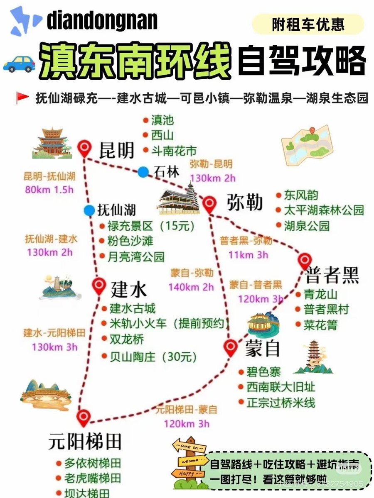
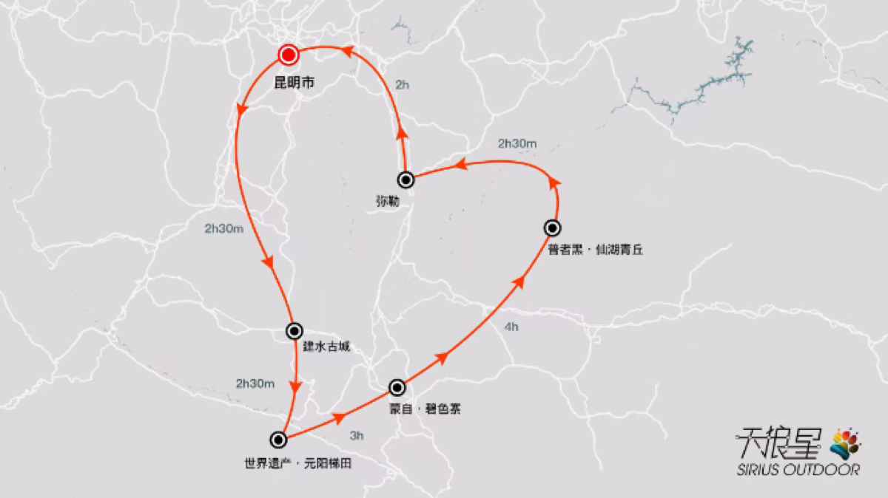
为什么这样设计
- 昆明是低压力集合，让晚到成员也能自然进入团队。
- 建水古城本身节奏平缓，用汽锅宴、乡会桥下午茶和双龙桥日落制造记忆点。
- 元阳一天景观集中但午餐偏晚，用老虎嘴咖啡、阿者科午餐和梯田日落调节体力与情绪。
- 碧色寨是长途中的休息和拍照点，但不能抢占普者黑核心体验。
- 普者黑安排湖景住宿、画舫船和青龙山，完成全线高潮与告别。
客户预期必须提前说清
- 建水是有人真实生活的古城，不是统一翻新的影视城；D2步行较多，可中途退出。
- 梯田受云雾、雨水和季节影响，不保证全景或日落。
- 滇东南湿度高，部分酒店可能有潮湿或气味问题；领队仍需积极处理，不能用“当地都这样”推脱。
- 节假日道路、景区和车站可能拥堵，D4、D5必须服从硬截止。
- 房间调整需经过原室友、新室友和领队三方确认，不能私自换房。
- AA项目、团费包含项目、逐人报销项目必须在消费前说明。
- 不用外貌、体力、性格或房型开玩笑；活动可退出，隐私不在群里公开。
五天节奏
| 天数 | 主线 | 情绪任务 | 不可丢的操作 |
|---|---|---|---|
| D1 | 昆明集合 | 让每个人被接住 | 到达签到、房表、晚到人员、D2预告 |
| D2 | 昆明→建水 | 第一次团队升温 | 退房行李、午餐、票务、下午茶、入住、晚餐 |
| D3 | 建水→元阳 | 风景高潮和共同体验 | 早餐吃足、三次验票、咖啡、14:00午餐、日落判断、山地酒店入住 |
| D4 | 元阳→普者黑 | 最长车程后的核心高潮 | 早发、碧色寨取舍、画舫船新版流程、湖景酒店、晚餐 |
| D5 | 普者黑→昆明 | 告别与安全散团 | 日出判断、分组、退房、11:00午餐、12:20发车、逐站核人 |
2026本团发布总表
历史值放在“历史参考”列；本团值必须写清楚。产品经理与领队完成后逐项改成 ✅。
| 类别 | 本团值 | 历史参考 | 状态 | 截止 |
|---|---|---|---|---|
| 团期/人数 | ＿＿＿＿ / ＿＿人 | 五天四晚 | 🔴 | D-7 |
| 主领队/电话 | ＿＿＿＿ / ＿＿＿＿ | 不沿用旧手机号 | 🔴 | D-7 |
| 副领队/电话 | ＿＿＿＿ / ＿＿＿＿ | 两人分工更稳 | 🔴 | D-7 |
| 司机/电话 | ＿＿＿＿ / ＿＿＿＿ | 不沿用旧司机 | 🔴 | D-2 |
| 车辆/车牌/座位 | ＿＿＿＿ | 需车辆照片 | 🔴 | D-2 |
| 昆明酒店 | ＿＿＿＿ | 官渡希尔顿欢朋 | 🔴 | D-7 |
| 建水酒店/前台 | ＿＿＿＿ / ＿＿＿＿ | 建水临安酒店 | 🔴 | D-7 |
| 元阳酒店/销售 | ＿＿＿＿ / ＿＿＿＿ | 万缮度假酒店；历史销售13888248332 | 🟡 | D-7 |
| 普者黑酒店/前台 | ＿＿＿＿ / ＿＿＿＿ | 情人桥雅贝精舍 | 🔴 | D-7 |
| D2午餐 | ＿＿＿＿ | 宝兴楼17787769679 | 🟡 | D-2 |
| D2下午茶 | ＿＿＿＿ | 乡会田园餐厅13577076576 | 🟡 | D-2 |
| D3咖啡 | ＿＿＿＿ | 老虎嘴17869440551 | 🟡 | D-2 |
| D3午餐 | ＿＿＿＿ | 红稻人家13669786846；备15187439853 | 🟡 | D-2 |
| D3晚餐 | ＿＿＿＿ | 哈尼家宴/酒店餐厅 | 🔴 | D-2 |
| D4碧色寨午餐 | ＿＿＿＿ | 会舍过桥米线 | 🔴 | D-2 |
| D4普者黑晚餐 | ＿＿＿＿ | 彝乡约；备福满楼 | 🔴 | D-2 |
| D5告别午餐 | ＿＿＿＿ | 普者黑酒店餐厅 | 🔴 | D-2 |
| 门票/讲解/保险 | 订单表＿＿＿＿ | 文庙、朱家花园、元阳、阿者科、普者黑 | 🔴 | D-2 |
| D5散团清单 | 车次航班表＿＿＿＿ | 高铁站→机场→昆明酒店 | 🔴 | D-2 |
关于目的地（产品指南原文）
线路走向+地理背景
地理背景知识，详见阅读资料
-
断陷湖泊区（抚仙湖）：展示地质构造力量形成的深水湖泊。
-
红河断裂带坝子文化区（建水、蒙自）：展示在断裂带形成的肥沃坝子上发展出的深厚历史与农耕文明。
-
深切河谷与山地农耕区（元阳）：展示人类如何适应并改造极端陡峭的山地环境，创造出的梯田文化景观（世界文化遗产）。
-
喀斯特地貌区（普者黑）：展示水对可溶性岩石的溶蚀作用所塑造的“山水画卷”。
-
历史交通廊道（碧色寨）：展示在复杂地理环境下，近代工业文明（铁路）的闯入与影响。
气候背景（四个典型城市的月均气温和降水量）
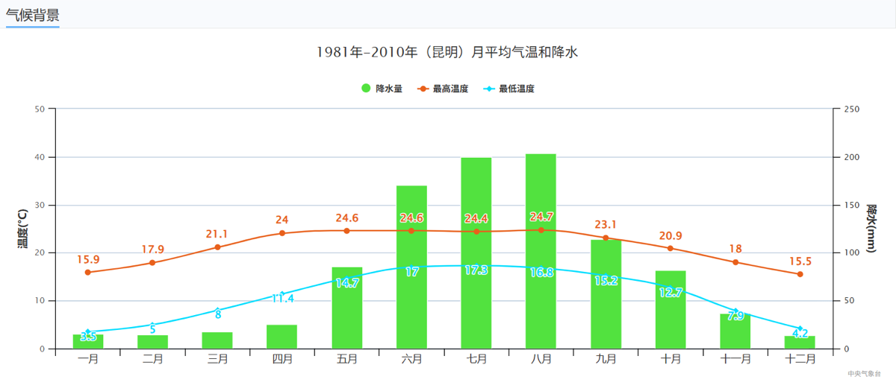
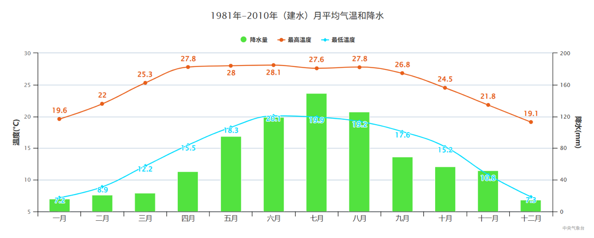
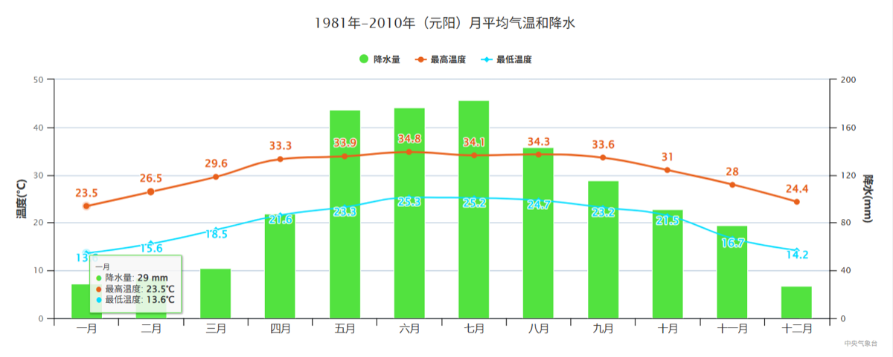
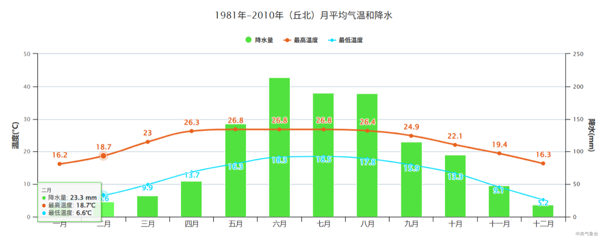
地质地貌、自然生态
详细见阅读资料
昆明 → 抚仙湖：断裂带上的深蓝明珠
抚仙湖是典型的断陷湖。其东岸的山脉和西岸的山脉，是沿着小江断裂带的支系断裂发生相对升降运动的结果：中间地块陷落，积水成湖。这导致湖盆陡峭深邃（最大水深155米），这是它与其他浅水湖泊（如滇池）最根本的地质区别。
哈尼梯田——顶级的人工湿地生态系统：哈尼族人利用“山有多高，水有多高”的自然条件，创造了“森林-村寨-梯田-水系”四素同构的循环生态系统（这个会讲很多遍）。梯田本身是一个巨大的人工湿地，净化水质，调节小气候，为水稻、鱼类、鸭子和无数水生生物提供了栖息地，是人与自然和谐共生的生态典范。
典型的喀斯特地貌：普者黑是滇东南岩溶高原的代表。这里在2-3亿年前是一片浅海，沉积了数千米厚的石灰岩。地壳抬升后，富含二氧化碳的雨水和地下水长期溶蚀岩石，形成了峰林、峰丛、孤峰、溶洞、地下暗河等经典景观。水上的孤峰是喀斯特发育到壮年期的标志。普者黑候鸟天堂：广阔的湿地和农田为众多鸟类提供了越冬和繁殖的场所，是观鸟的好去处。
文化和历史背景
-
滇东南和去滇西南一样的理由，大理丽江人太多了，太商业化。这里人少景美，海拔没丽江那边高，更适合休闲慵懒的度假。
-
其他见阅读资料：滇东南
客户画像与预期管理总纲（产品指南原文）
客户画像与客户预期
客户画像
-
旅行目的：
-
去过大理丽江等传统云南的客户，想体验不一样的云南
-
没来过云南，第一次云南
-
年龄分布：
-
平均989年左右，大部分在84~92之间
预期管理
-
景点：
-
容易预期偏高的地方：普者黑国庆人超级多，去年就是人很少，国庆普者黑
-
住宿：
-
滇东南湿气大，酒店容易有霉斑和味道，这个基本是每个酒店通病，大家体谅。
-
餐饮：
-
第一期非常成功，推荐的每一家餐厅都不错，味道好，也不贵。跟着推荐不踩坑
-
大巴车座位：
-
每天早上先到先得，当天就不换位置咯
-
室友分配：
-
集合日的住宿，一般由领队随机分房，入住前一天会把分房表发在群里，自行到前台报“天狼星户外”办理入住。入住前要先联系一下室友，避免重复开房。
-
第二天出发的时候会进行室友匹配，重新分房。
-
第三天开始，如果需要私下换房间的，出于礼貌，请和相关各方都沟通好，禁止出现不和室友沟通、私自去和别人拼房的情况，这是不礼貌的。如果有困难，可以联系领队，领队会尽量协调。
-
后续的每一晚都是如此的规则，如需换室友，要先礼貌沟通。领队也可能会根据换房需求的人数比例，考虑重新组织室友匹配。
-
AA自理的消费：
-
解释为什么不安排聚餐、为什么安排聚餐
-
节假日特别提醒：
-
机场火车站易堵车，时间要有更多提前量，防止误机
-
行程中易堵车路段的提前预告
-
集合日自由活动期间，需要预约的景点/博物馆等提前告知
领队画像
-
适当的社交满足，在合适的时候组织破冰互动、深度交流。
-
学习能力——即使盲线，也能够学习线路资料，快速掌握景点情况，在现场能够娴熟操作。
-
组织能力——能胜任景区的控团，让队员即使在人多复杂的景区环节也能够有社交、有互动。
-
感知能力——快速判断队员来这条线路的核心需求、性格喜好，能够投其所好地提供力所能及的帮助。
-
讲解能力——对线路历史文化背景有自己的见解，讲解内容能够让队员留下记忆点。背景知识：云南土人情，云南少数民族文化的了解。
-
户外技能——除了梯田需要爬楼梯，其他地方没有需要高强度的运动。注意早晚保暖。
-
沟通能力——需要对接的酒店，餐厅，咖啡厅，景点还是蛮多的。做好提前沟通。
-
第二部分｜逐日现场操作（现场层）
D1 昆明集合日
🧭 行程总览卡（一屏速查·当期信息）
D1一屏速查
| 节点 | 领队动作 | 关键风险 |
|---|---|---|
| 前一晚 | 给前台房表；核房型、早餐、大巴进场 | 队员重复开房、房型错 |
| 每人落地前 | 私聊交通和到店方式，要求到店签到 | 晚到、失联、走错酒店 |
| 酒店大堂 | 主领队签到；副领队处理房卡和行李 | 前台围堵、隐私泄露 |
| 下午 | 自愿Citywalk；留守领队接晚到成员 | 全部领队离店 |
| 晚餐 | 明确AA/自理，不模糊团费边界 | 账目争议、忌口遗漏 |
| 21:00后 | 行前沟通、D2早餐/行李/发车消息 | 熬夜、次日迟到 |
D1当期信息
| 项目 | 本团值 | 历史参考 | 状态 |
|---|---|---|---|
| 酒店 | ＿＿＿＿ | 昆明官渡希尔顿欢朋，官渡区环城东路488号 | 🔴 |
| 前台/销售电话 | ＿＿＿＿ | 原版未给 | 🔴 |
| 可办理入住时间 | ＿＿＿＿ | 原版13:00；旧群公告另有14:00，存在冲突 | 🔴 |
| 早餐 | ＿＿＿＿ | 一楼前台后；历史07:00开始 | 🟡 |
| D2集合/发车 | ＿＿＿＿ | 历史08:55集合、09:00发车 | 🟡 |
| 备用酒店 | ＿＿＿＿ | 林隐酒店销售15559781337；昆明南站希尔顿欢朋 | 🟡 |
D1前一晚｜酒店准备
- 将房表发给前台，要求按姓名检索房间；确认是否必须本人身份证登记。
- 标记领队房、晚到房、单住、大床/双床及特殊需求。
- 问清停车、早餐、Wi-Fi、押金、发票、行李寄存和房间问题联系人。
- 与前台约定：成员报“天狼星户外＋姓名”办理，但领队仍逐人签到。
- 把酒店中文全称、地址、定位截图和领队电话发群，避免只发简称。
🚌 交通卡（逐段转场）
| 转场 | 目的地定位 | 特殊路况 | 中途停靠 | 突发预案 | 特殊交通 |
|---|---|---|---|---|---|
| 机场/车站→酒店 | 当团酒店（昆明官渡希尔顿欢朋） | 市区晚高峰 | 不适用 | 航班/高铁延误分批接驳 | 地铁、打车均可，打车到市中心约25公里 |
🛏 住宿卡
D1抵达与入住
酒店历史信息：距机场约25公里，原版估算打车约30分钟；机场地铁6号线至岔街站C口后过街。2026须根据施工、运营和实时交通核验。
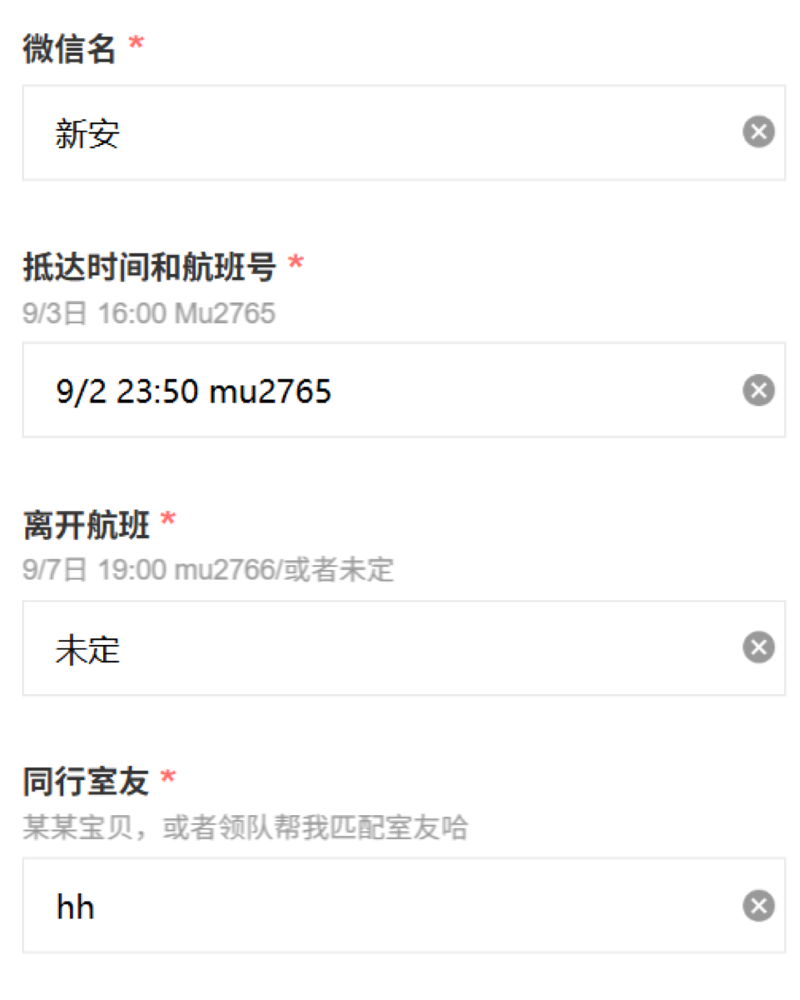
每位队员到店的五步
- 收到“已落地/到站”消息后回复到店方式和注意事项。
- 到店后在领队签到表勾选：人到、证件、房间、室友、行李。
- 主领队核身份和房表；副领队协助前台发房卡，不公开读身份证号。
- 提醒室友先联系再开房，避免两个人分别办理同一间。
- 发房卡时告知早餐、领队房号、当晚安排和紧急电话。
入住后20分钟
- 门卡、房型、空调、热水、卫生、异味无问题。
- 晚到人员预计抵店时间已更新。
- 房间更换已经同步前台与房表。
- 无人因没有室友或房间分配问题被晾在大堂。
🍚 用餐卡
D1酒店周边与吃饭
原版周边：马路对面万象城；酒店后约300米董家湾路美食街；附近有岔街1号花卉市场。
可选餐饮历史参考：
- 万象城：上菌山、茄子恰恰。
- 董家湾：佤傣边境小食堂，原版提示18:00前菜品更齐。
- 领队组织AA初次聚餐：老滇山寨·云南民族特色菜，原版约3公里、可订包间。
集合日如产品未含晚餐，必须在出发前写明“AA/自理”；点餐前报预计人均，结账时按约定执行。不要用“大家一起吃”模糊是否团费包含。
🏞 景点卡（现场执行）
D1昆明Citywalk｜完全自愿
历史路线：15:00左右打车至傲城大厦A2口 → 天空之眼 → 昆明老街 → 对月楼 → 翠湖 → 文林路 → 打车回酒店周边。
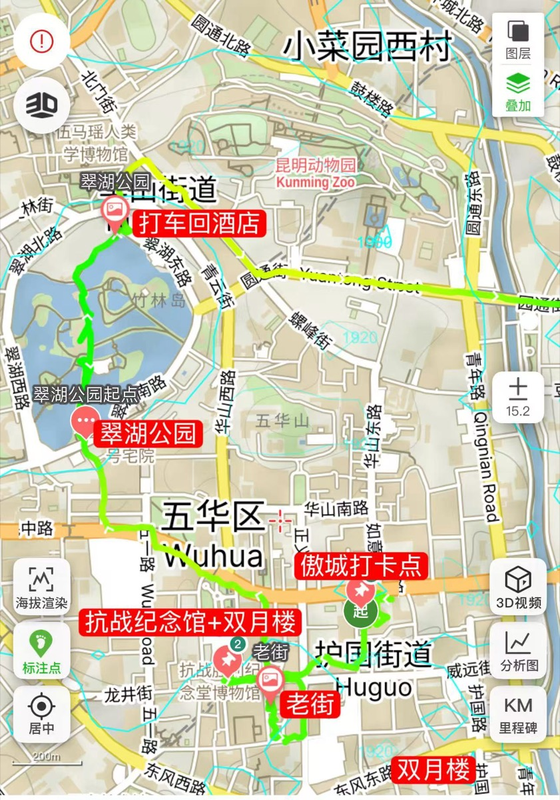
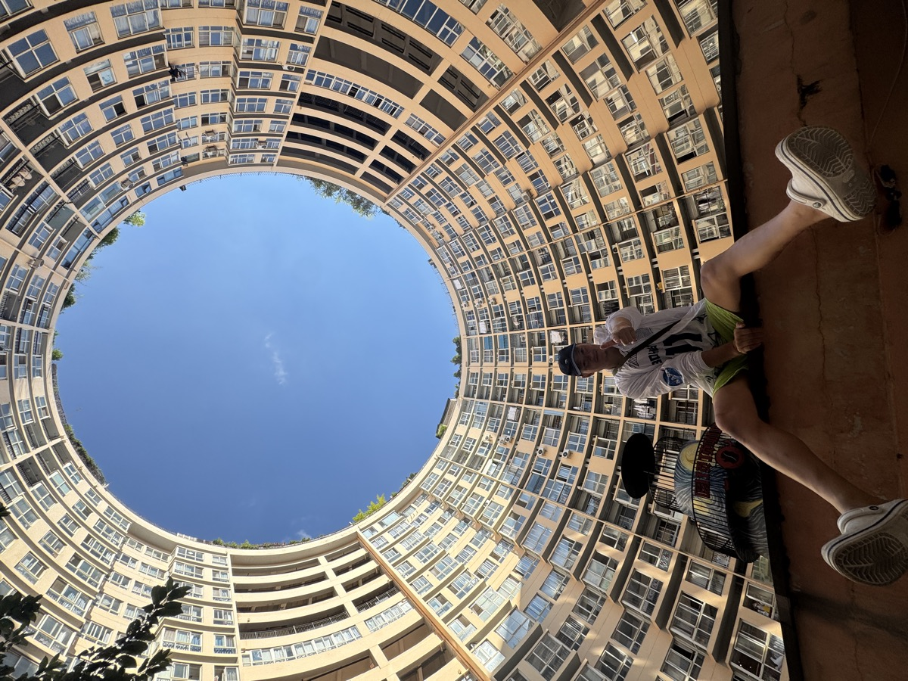
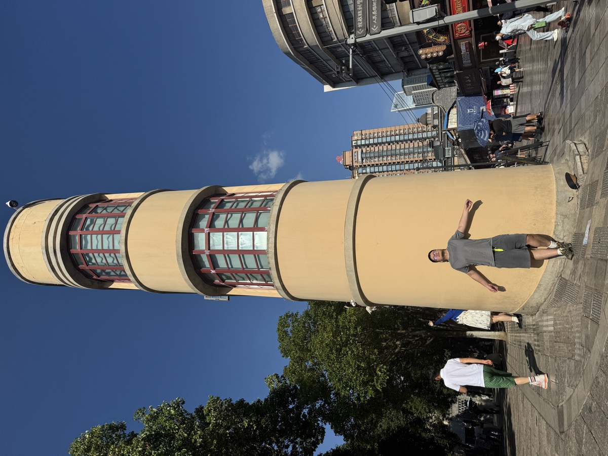
出发条件
- 至少一名领队留酒店接晚到成员；只有一名领队时，晚到人员未齐不得组织远距离带队。
- 群里写清集合点、预计结束时间、步行量、退出方式和返回酒店方式。
- 傲城大厦、云南大学、陆军讲武堂等开放或预约政策必须当天查验。
- 后半段允许自由活动，离队者须告知去向，不强制跟完整路线。
D1夜间行前沟通
建议不把所有人挤在领队房。可在酒店公共区域简短说明，再对晚到或有特殊需求者单独沟通。
必须说清：
- D2早餐地点、时间、全部行李集合时间、发车时间。
- D2步行较多，可退出；穿舒适鞋，带雨具、防晒、身份证。
- 大巴座位规则：当天先到先得，当天不频繁换位；照顾晕车和身体不适者。
- 室友规则：换房必须相关人员都同意并告知领队。
- 午餐、门票、下午茶、晚餐中哪些包含、哪些AA。
各位，明天早餐在【楼层/位置】，开放时间【时间】。请大家【集合时间】带齐全部行李到酒店大堂集合，【发车时间】准时前往建水。明天古城步行较多，请穿舒适鞋，带身份证、充电宝、雨具和防晒；身体不适或有忌口请今晚私信领队。
⚠️ 关账与次日锁定
D1关账与D2锁定
- 全员已到/未到名单和预计时间清楚。
- 房间问题、换房和额外费用已记录。
- D2司机、车牌、停车点确认。
- 宝兴楼、文庙、朱家花园、乡会桥下午茶、建水酒店全部再次确认。
- D2房表、保险单、门票材料已离线保存。
- 两位领队至少一人保持清醒并可联系。
D1备用方案
| 触发条件 | 动作 |
|---|---|
| 本酒店满房/房量错误 | 启用已经确认的林隐酒店或昆明南站希尔顿欢朋；产品经理统一调房，不让队员自行另订后再报销 |
| 队员航班大面积延误 | 取消Citywalk；一名领队留守到最后一人安全入住 |
| 大雨/雷暴 | Citywalk取消；改酒店周边室内活动或休息 |
| 房间潮湿/异味 | 先拍照并要求工程检查或换房；不能只对队员说“云南都这样” |
| 队员失联 | 电话、紧急联系人、机场/车站协查逐级处理；保留沟通记录 |
D2 昆明 → 建水
前一晚确认 → 早餐 → 退房 → 行李 → 午餐 → 文庙 → 朱家花园 → 朝阳门 → 乡会桥下午茶 → 双龙桥 → 建水酒店入住 → 晚餐 → 夜间关账。
0. 状态标识
| 标识 | 含义 | 领队能否直接执行 |
|---|---|---|
| ✅ 当期已确认 | 已按2026年10月本团订单、电话或书面回复核实 | 可以 |
| 🟡 历史执行值 | 来自旧产品指南或往期带团群公告 | 核验后使用 |
| 🔴 未完成 | 缺联系人、订单、付款方式或时间 | 不得带团发布 |
1. 当期关键信息｜发布前必须填完
本表任何一项为 🔴，本页都不能标记为正式版。历史司机姓名、车牌、酒店早餐时间不得复制到新团群里。
| 项目 | 2026年10月本团值 | 状态/来源 | 谁确认 | 截止时间 |
|---|---|---|---|---|
| 团期日期 | ＿＿＿＿年＿＿月＿＿日 | 🔴 | 产品经理 | D-7 |
| 成团人数/用餐人数 | 成人＿＿人；免票＿＿人；特殊餐＿＿人 | 🔴 | 主领队 | D-2 |
| 主领队/电话 | ＿＿＿＿ / ＿＿＿＿ | 🔴 | 产品经理 | D-7 |
| 副领队/电话 | ＿＿＿＿ / ＿＿＿＿ | 🔴 | 产品经理 | D-7 |
| 昆明酒店 | 官渡希尔顿欢朋酒店；若订单变更写新酒店 | 🟡 原版 | 产品经理 | D-7 |
| 早餐地点/时间 | 历史值：一楼前台后；07:00开始 | 🟡 2025-09群公告 | 主领队 | D-1 20:00 |
| 退房及集合时间 | 历史值：08:55带全部行李到大堂 | 🟡 2025-09群公告 | 主领队 | D-1 20:00 |
| 发车时间 | 历史值：09:00 | 🟡 2025-09群公告 | 主领队+司机 | D-1 20:00 |
| 司机/电话 | ＿＿＿＿ / ＿＿＿＿ | 🔴；旧司机不沿用 | 产品经理 | D-2 |
| 车辆/车牌/座位数 | ＿＿＿＿ / ＿＿＿＿ / ＿＿座 | 🔴；旧车牌不沿用 | 产品经理 | D-2 |
| 建水午餐 | 宝兴楼（紫陶里店）或当期合同餐厅 | 🟡 原版 | 餐饮负责人 | D-1 20:00 |
| 文庙团队票/讲解 | 订单号＿＿；讲解员＿＿；电话＿＿ | 🔴 | 票务负责人 | D-1 20:00 |
| 朱家花园团队票/讲解 | 订单号＿＿；保险单已发□；讲解员＿＿ | 🔴 | 票务负责人 | D-1 20:00 |
| 乡会桥下午茶 | 商家＿＿；人数＿＿；抵达窗＿＿；金额＿＿ | 🔴 | 餐饮负责人 | D-1 20:00 |
| 建水酒店 | 建水临安酒店；地址/前台电话＿＿ | 🟡 原版 | 产品经理 | D-2 |
| 酒店房间 | 双床＿＿；大床＿＿；单住＿＿；领队＿＿；司机＿＿ | 🔴 | 主领队 | D-1 20:00 |
| 当日晚餐 | 标准带队方案□ / 分组觅食方案□ | 🔴 | 两位领队 | 当日16:00 |
| 日落时间 | ＿＿:＿＿；双龙桥安全撤离线＿＿:＿＿ | 🔴 | 主领队 | 当日06:30 |
| D3早餐/集合/发车 | 历史值：07:00早餐、08:55集合、09:00发车 | 🟡 2025-09群公告 | 主领队+酒店+司机 | 当日21:00 |
🧭 行程总览卡（一屏速查·当期信息）
2. 今天一屏速查卡
今天不是“赶景点”，而是用建水当地味道＋活着的古城＋乡会桥惊喜＋双龙桥日落完成团队第一次升温，同时把步行疲劳和住宿安顿好。
历史基准时间轴
07:00 / 08:55 / 09:00来自2025年9月实际群公告；15:30—16:00来自原版乡会桥火车停靠记录。其余时间是领队据此倒推的控制窗。2026年10月须根据路况、营业、日落和小火车运行重新确认。
| 控制窗 | 地点 | 领队必须完成 | 硬控制点 |
|---|---|---|---|
| 06:30 | 昆明酒店 | 查天气、路况、日落；叫醒司机；复核午餐和票务 | 异常立即启动删减方案 |
| 07:00起 | 酒店早餐厅 | 领队错峰吃饭；检查全员身体和忌口 | 早餐结束前确认全部人员 |
| 08:30 | 客房/前台/车边 | 查房卡、行李、房费；确认车辆进场 | 行李不得无人看管 |
| 08:55 | 酒店大堂 | 点名、点行李、分发饮水、说明步行量 | 全部行李随车 |
| 09:00 | 昆明酒店 | 准时发车去建水 | 延误超过20分钟启动压缩 |
| 抵达前60分钟 | 车上 | 电话通知午餐出菜、开空调、确认桌数 | 汽锅制作需要时间 |
| 午餐后 | 紫陶里 → 文庙 | 司机送文庙游客中心；主领队票务、副领队WC | 确认南门出 |
| 文庙后 | 文庙南门 → 朱家花园 | 徒步；给疲劳者退出方案 | 集合点必须有识别物 |
| 约14:40前后 | 朱家花园 → 朝阳门 | 收队、联系司机到朝阳门北面空地 | 以15:20前到乡会桥倒推 |
| 约15:20前 | 乡会桥车站 | 一人检查下午茶，一人看队伍；争取看到火车 | 火车历史窗15:30—16:00 |
| 约16:45—17:00 | 乡会桥 | 点名上车，去双龙桥 | 日落前1—1.5小时离开 |
| 日落后立即 | 双龙桥 | 收队、点名、上车、去酒店 | 天黑/车流增大立即撤 |
| 抵店前30分钟 | 车上 | 电话酒店确认停车、房卡、房表、司机房 | 主副领队分工入住 |
| 入住后约40分钟 | 建水酒店 | 群内发布休息及晚餐安排 | 不让队员等候不明 |
| 19:00参考 | 酒店大堂 | 标准散步晚餐或分组觅食 | 疲劳者可退出 |
| 21:30前后 | 酒店 | 全员报平安；核账；确认D3早餐和车辆 | 未归人员逐一联系 |
今日关键电话｜放在当天，不跳表
| 节点 | 联系方式 | 使用时机 | 状态 |
|---|---|---|---|
| 宝兴楼（紫陶里店） | 17787769679 |
D-1订位；到店前60分钟确认出菜和空调 | 🟡 原版历史业务电话，D-1验证 |
| 乡会田园餐厅/下午茶 | 13577076576 |
D-1确认；离开朝阳门时再报预计到达 | 🟡 原版历史业务电话，D-1验证 |
| 建水临安酒店前台 | ＿＿＿＿＿＿＿＿ |
D-1发房表；到店前30分钟 | 🔴 待订单补齐 |
| 文庙票务/讲解 | ＿＿＿＿＿＿＿＿ |
D-1预约；抵达前确认 | 🔴 待补齐 |
| 朱家花园票务/讲解 | ＿＿＿＿＿＿＿＿ |
D-1预约；抵达前确认 | 🔴 待补齐 |
| 当期司机 | ＿＿＿＿＿＿＿＿ |
每个上下车点提前联系 | 🔴 待补齐 |
3. 人员分工
| 场景 | 主领队A | 副领队B |
|---|---|---|
| 酒店出发 | 前台结账、房卡和人员总点名 | 车边盯行李、核对装车件数 |
| 午餐 | 联系餐厅、核菜单和结账 | 带队入座、记录忌口和人数 |
| 文庙 | 行程单、团队票、讲解员 | 组织WC、看尾队和自由参观者 |
| 朱家花园 | 票务、讲解时间、集合倒计时 | 尾队、疲劳人员和打车退出者 |
| 朝阳门 | 联系司机、控制离开时间 | 组织拍照、清点人员 |
| 乡会桥 | 先去检查下午茶布置 | 带队拍车站、守安全边界 |
| 双龙桥 | 与司机确认上下车点 | 走尾队、清场、最后上车 |
| 酒店入住 | 前台核房表、房卡、早餐和结算 | 管行李、安置队员、收房间问题 |
| 晚餐/夜间 | 带标准路线或负责一组 | 负责退出人员、另一餐饮组和报平安 |
先锁定队伍和行李安全，再办理票务或入住；让全员在一个明确区域等待，禁止同时出现“领队在前台、队员已四散、行李无人看管”。必要时请酒店礼宾或司机临时看守行李，但领队仍负总责。
4. D-1晚上｜把第二天所有外部资源锁死
建议完成时间：20:00—21:00。
4.1 酒店与退房
- 问昆明酒店：早餐准确时间、位置、是否可以提前打包。
- 问前台：团队房费是否全部结清，有无押金、赔损、迷你吧或其他挂账。
- 确认08:30后大巴能否进入、在哪里停、从哪个门搬行李最近。
- 通知队员：早餐、行李、房卡、集合、发车时间。
- 将迟睡、饮酒、身体不适人员单独列为晨间叫醒对象。
4.2 司机与车辆
- 电话确认司机姓名、号码、车牌、座位数和车辆照片。
- 将以下定位按顺序发给司机：昆明酒店 → 午餐 → 文庙游客中心 → 朝阳门北面接人点 → 乡会桥车站 → 双龙桥 → 建水临安酒店。
- 逐个问清大巴能否进入；不能进入的点，约定下车点、上车点和等待方式。
- 提醒司机今天不是始终跟队，朝阳门、乡会桥、双龙桥都必须保持电话畅通。
- 确认司机今晚住宿、晚餐和第二天发车安排。
4.3 建水午餐
- 首选历史餐厅：宝兴楼（紫陶里店），电话
17787769679。 - 告知团队全部为成人男性及准确人数，确认菜量，不要仅按普通旅游团小份量。
- 历史方案为666元套餐；2026必须重新确认价格、菜数、主食和饮料是否包含。
- 逐一报备：素食、清真、海鲜/菌菇/坚果过敏、不能吃辣、其他禁忌。
- 确认桌数、开餐窗、停车点、领队餐、司机餐、是否开空调。
- 确认付款主体、付款方式、是否要发票/收据、抬头和税号。
- 同时复核备用餐厅：建水供销社食堂。没有完成电话确认就不算备用方案。
4.4 门票与讲解
- 文庙：确认团队票材料、行程单形式、免票证件、讲解价格和讲解员。
- 朱家花园：确认团队票是否仍要求保险单；将保险单存到手机离线文件。
- 节假日提前锁定讲解员；无讲解员时提前准备10分钟领队简讲，而不是到场临时编。
- 建立免票名单，记录每个人各景点应退金额及退款方式。
4.5 乡会桥下午茶
- 历史商家：乡会田园餐厅，电话
13577076576，D-1必须验证仍在营业且能接团。 - 明确“惊喜下午茶”，商家不得提前在队员面前泄露。
- 确认桌布、座椅、雨天室内位、洗手间和大巴临停。
- 历史配置：砂锅咖啡器具仅5套；其余为咖啡、柠檬水或饮料，另配面包、水果。
- 写下当期最终配置：砂锅咖啡＿＿套；其他饮品＿＿杯；面包＿＿；水果＿＿。
- 确认过敏、无糖、无咖啡因需求。
- 确认总金额、定金、尾款、付款时间和凭证。
- 约定二次通知：离开朝阳门时电话告知预计抵达时间，至少留30分钟布置。
4.6 建水酒店
- 将最终房表发给建水临安酒店，要求前台按房表预制房卡。
- 核对双床、大床、单住、领队房、司机房，避免到店后临时拼房。
- 确认大巴停车、行李卸载、前台位置、电梯、早餐厅、早餐时间。
- 确认押金、房费、房卡遗失费、发票、叫醒、Wi-Fi。
- 问清房间异常处理：空调、热水、异味、噪音、门锁问题找谁。
4.7 发给队员的前一晚消息
各位，明天我们从昆明前往建水。早餐在【楼层/位置】，开放时间【时间】。请大家在【08:55或当期时间】带齐全部行李到酒店大堂集合，【09:00或当期时间】准时发车。今天古城步行较多，请穿舒服的鞋，带好身份证、充电宝、雨具和防晒。身体不舒服或有忌口的，今晚单独告诉领队。
🚌 交通卡（逐段转场）
| 转场 | 目的地定位 | 特殊路况 | 中途停靠 | 突发预案 | 特殊交通 |
|---|---|---|---|---|---|
| 昆明→建水（午餐点） | 建水宝兴楼（紫陶里店，青山路紫陶里汉唐街B3栋-1） | 全程高速 | 合法服务区 | 会绕行就改合法服务区热餐 | 无 |
| 午餐点→文庙→朱家花园→朝阳门 | 孔子文化广场附近 | 古城内步行段 | 无 | 文庙南门出，主街步行 | 步行 |
| 朝阳门→乡会桥 | 乡会桥车站 | 县道 | 无 | 司机到城门北面空地接 | 无 |
| 乡会桥→双龙桥 | 双龙桥 | 附近不方便停车 | 无 | 师傅放下后到点来接 | 无 |
| 双龙桥→建水临安酒店 | 建水临安酒店（北门） | 晚间进城 | 无 | 见机行事上下车 | 无 |
5. 06:30—09:00｜早餐、退房、行李和发车
5.1 领队起床后的第一轮确认
- 查昆明、建水天气，重点看降雨、体感温度和雷暴预警。
- 查昆明至建水实时路况；记录预计车程和最晚到达时间。
- 查建水日落时间，倒推出乡会桥和双龙桥撤离线。
- 联系司机确认已起床、车辆正常、油量和座椅无问题。
- 给宝兴楼发消息或电话，确认订单仍有效。
- 两位领队互报身体状况、手机电量和充电宝。
5.2 早餐执行
历史执行值：官渡希尔顿欢朋早餐厅在一楼前台后，07:00开始。2026当期以前台确认为准。
- 两位领队错峰用餐，始终保证一人在大堂或群里可联系。
- 主领队核对早餐名单；副领队关注昨天抵达晚、喝酒或身体不适人员。
- 在群里提醒一次退房和集合时间，不连续刷屏。
- 有特殊饮食者，现场确认是否吃到合适食物；必要时准备便携早餐。
- 提醒今天午餐时间可能受车程影响，早餐不要只喝咖啡。
5.3 08:30退房准备
- 主领队到前台查团队账：房费、押金、额外消费、赔损、房卡。
- 副领队到停车点找司机，拍车辆和车牌发群，确认行李舱已打开。
- 群里发布：房卡交给谁、行李放哪辆车、集合点具体识别物。
- 对未退房者逐一私聊或电话，不在群里公开点名催促。
- 行李上车按房间或队员名单勾选件数；贵重物品不进大巴行李舱。
5.4 08:55集合与09:00发车
发车前做两次清点：大堂一次、车上一次。
- 人数：报名人数＿＿；上车人数＿＿；领队＿＿；司机＿＿。
- 行李：托运行李＿＿件；领队物资＿＿件。
- 房卡：应收＿＿；已收＿＿；前台确认无挂账□。
- 证件：全部带身份证□。
- 饮水：每人至少一瓶□。
- 司机：车牌与群内信息一致□。
不要只在群里喊。副领队电话联系并上楼确认；主领队留在车上稳住全团。超过硬截止仍联系不上，立即通知产品经理和酒店，根据安全情况决定是否报警或留人陪同，不能全车悄悄先走。
5.5 车上开场
- 介绍两位领队、司机、车牌和紧急联系方式。
- 说明今天步行较多，文庙至朱家花园至朝阳门以步行为主；疲劳者可在报备后打车退出。
- 管理预期：建水是“活着的古城”，不是统一翻新的影视城，也不会处处像商业景区。
- 提醒系安全带，不在行驶中站立，不把贵重物品留在车上。
- 说明第一次服务区停靠及预计午餐时间。
折叠讲解｜路过抚仙湖可讲
抚仙湖是云南重要的深水淡水湖。只做简短地理介绍，不为讲解延误行程；具体数据在正式发布前使用权威资料复核。
🍚 用餐卡
6. 抵达前60分钟—午餐结束｜建水午餐
6.1 导航与现场识别
首选历史餐厅：宝兴楼（紫陶里店）
原版地址：青山路紫陶里汉唐街B3栋-1
历史电话：17787769679
产品目的：体验建水紫陶汽锅和当地味道，午餐以顺畅、吃饱、不拖延为主。
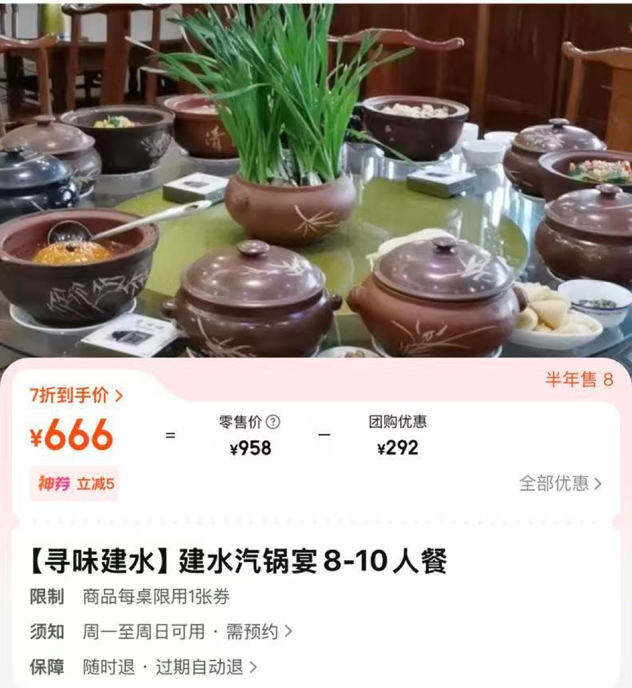
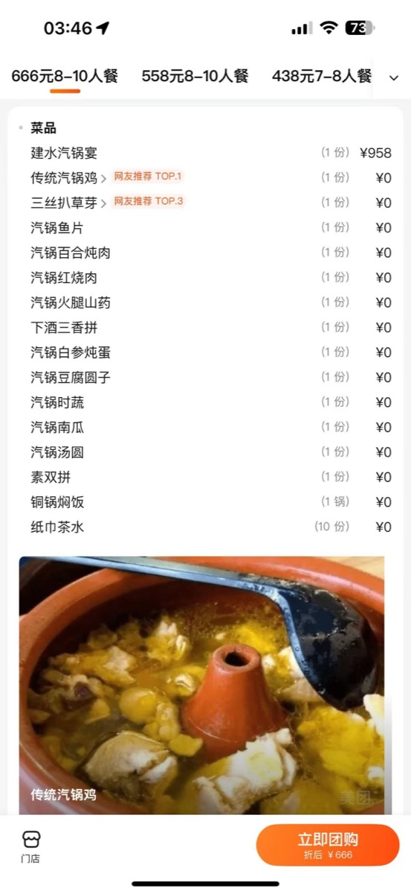
6.2 抵达前60分钟电话模板
你好，我们是天狼星旅行团，今天实际用餐【人数】人，预计【时间】到。请确认【桌数】桌和当期菜单已经开始准备，汽锅按时出；其中【人数】人不吃辣、【人数】人有【过敏/忌口】。请提前开空调。司机餐【是否】需要，饮料和加菜必须由【主领队姓名】确认。我们从【停车点】进店，麻烦发一个准确定位。
电话后把对方回复写进群内领队工作消息，不靠口头记忆。
6.3 到店动作
- 主领队提前下车进店：数桌、数座、看空调、核菜单、问洗手间。
- 副领队在车边先点名再带队，不让队员自行散进紫陶街。
- 特殊饮食者安排在靠近领队的位置，现场再次告诉服务员。
- 司机餐按事先约定处理，不能等团餐结束才临时问司机吃没吃。
- 全员入座后确认实到人数；空位和临时不吃者立即告知餐厅。
6.4 就餐中
- 开餐10分钟检查汽锅、主食和蔬菜是否已经上桌。
- 菜量不够由主领队统一加菜；其他人提出的加菜先确认是否自费。
- 菌菇、酒类、凉菜等有风险的菜，领队确认来源和食用方式。
- 在预计离店前20分钟联系司机，确认上车位置。
- 提前10分钟提醒洗手间，避免结账后全团再排队。
6.5 结账与凭证
- 订单金额＿＿；现场加菜＿＿；饮料＿＿；司机餐＿＿；合计＿＿。
- 付款人＿＿；方式＿＿；公司款/领队垫付/团费包含＿＿。
- 菜单或结算单拍照□；付款截图□；发票/收据□。
- 实际人数和特殊情况写入复盘□。
6.6 备用方案
| 触发条件 | 立即动作 |
|---|---|
| 宝兴楼临时停业/无法按时出餐 | 启用D-1已电话确认的建水供销社食堂；司机直接改导航 |
| 主餐厅可接但延迟超过30分钟 | 取消长时间点菜，要求按确认套餐先上主食和热菜；同步压缩朱家花园 |
| 备用餐厅也未确认 | 产品经理远程决策；优先选择大车可停、可快速出餐、卫生可控的团餐，不由领队现场盲选网红店 |
🏞 景点卡（现场执行）
7. 午餐后—文庙南门｜文庙
🎙 讲解词：3.1 建水文庙（10—12分钟）——午餐后前往文庙的车上预热，进园后按现场选讲。
7.1 行进关系
白天主线：紫陶街附近午餐 → 大巴到文庙游客中心 → 文庙南门出 → 徒步朱家花园 → 主街到朝阳门 → 大巴接往乡会桥。
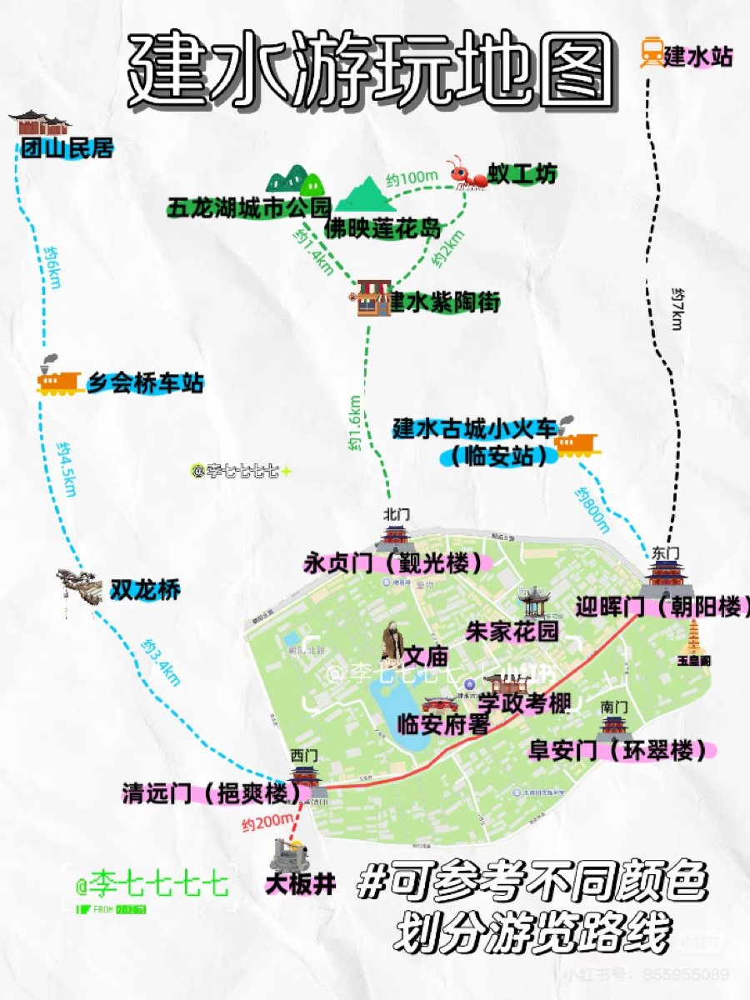
7.2 下车前
- 主领队把行程单、名单、免票名单、保险材料存在手机离线文件。
- 副领队告诉大家：下车先跟副领队去WC，主领队办理团队票。
- 发布文庙结束集合点、识别物、时间和领队电话。
- 联系司机：文庙下车后无需原地等待，下一次在朝阳门北面空地接人。
7.3 具体操作
- 导航至建水文庙游客中心，在安全位置下车。
- 走过广场到售票处，出示当期要求的行程单和团队资料购票。
- 请一位讲解员，先确认价格、时长、结束位置；原版经验为主建筑区约40分钟。
- 明确告诉讲解员团队从南门方向离开，请在学海附近结束，不走回头路。
- 领队认真听讲、维护讲解秩序；结束时组织感谢。不要一边要求队员听，一边自己离开处理私事。
- 不愿跟讲的队员可自由参观，但必须确认集合时间和南门方向。
- 使用WC后，沿学海方向出文庙南门，沿主街走向朱家花园。
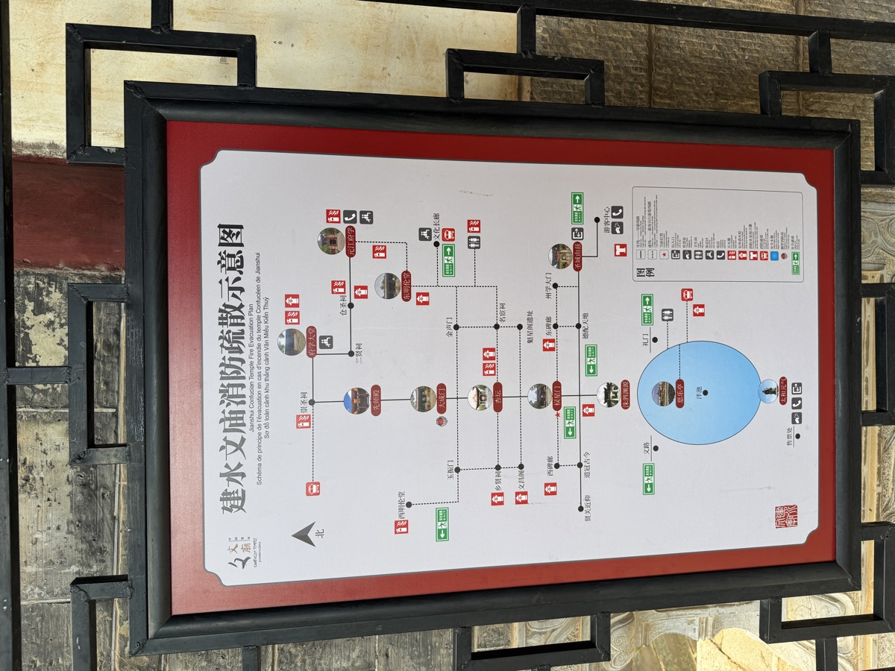
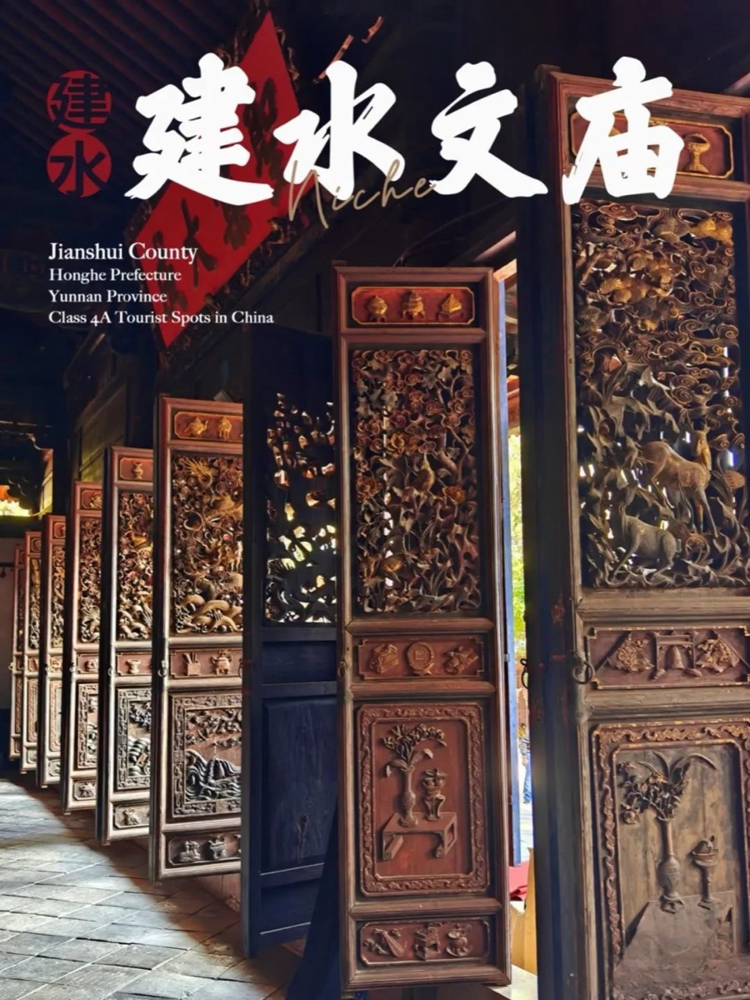
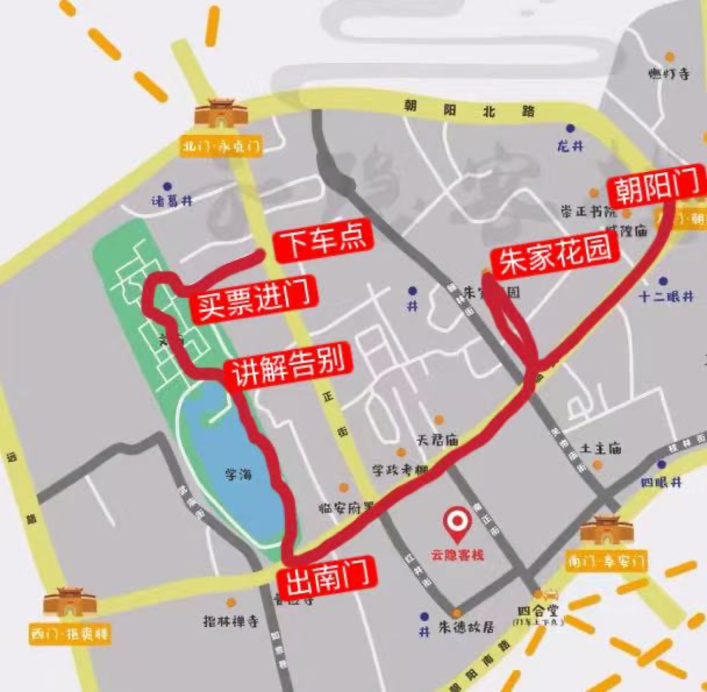
7.4 压缩与异常
- 讲解员未到：等待不超过10分钟；主领队完成短讲后自由参观。
- 出发延误：讲解压到30分钟，不取消WC和集合说明。
- 队员走失：副领队原地电话联系，主领队带大队在南门明确点位等待。
8. 文庙南门—朝阳门｜朱家花园与古城步行
🎙 讲解词：3.2 古城·朱家花园·朝阳门（10—12分钟）——从文庙出来沿临安路步行时按动线分段讲。
8.1 朱家花园
游玩方式：讲解＋自愿跟随；不强制所有人全程听讲。
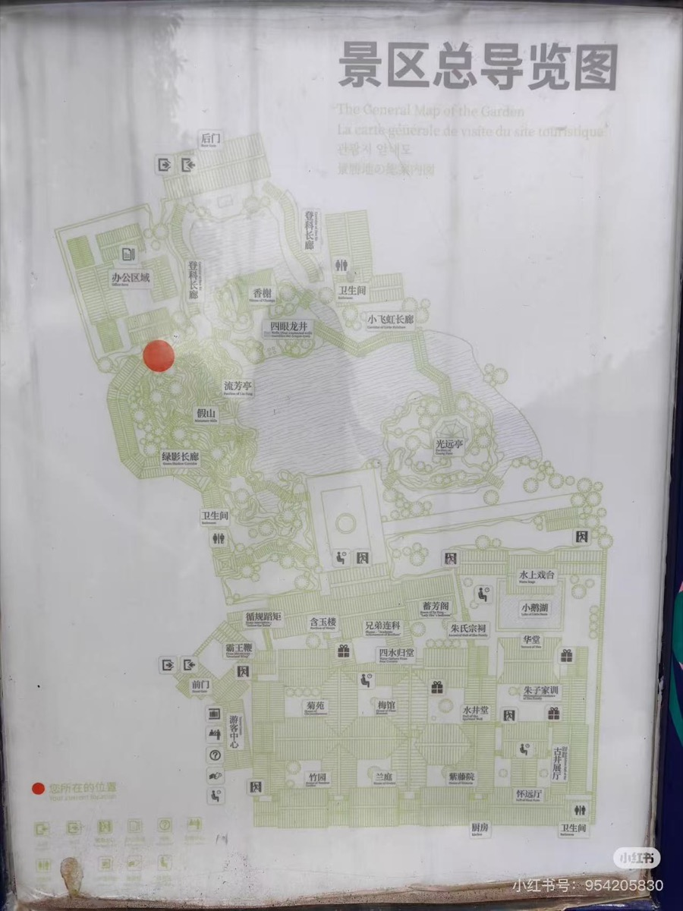
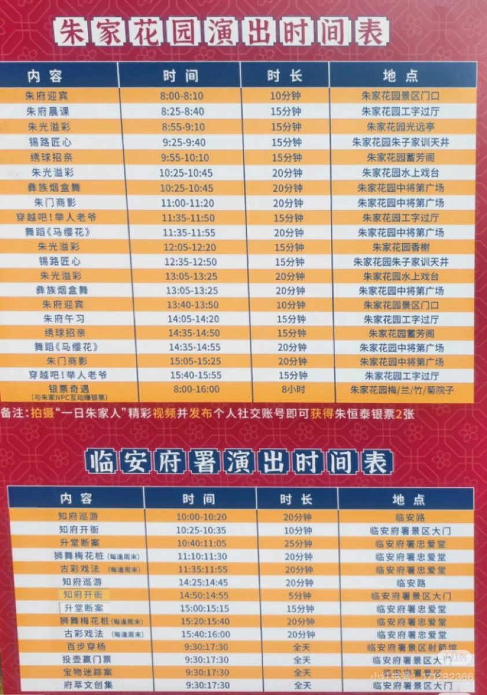
进园前
- 在售票处出示行程单、团队名单及当期要求的保险单。
- 核讲解员和时长；节假日没有预约不能假设现场一定有。
- 告知重点讲老建筑区，新修区域可以简化。
- 告知出口策略：尽量原路回主街，去朝阳门更清楚。
- 把朝阳门集合时间、识别物、司机接人方向发群。
园内控制
- 主领队跟讲解员，控制结束时间。
- 副领队走尾队，关注拍照久、体力弱或想提前离开的人员。
- 每隔15分钟看一次时间；剩余20分钟发结束提醒。
- 若队员退出，确认其是去朝阳门、酒店还是打车，并保持联系。
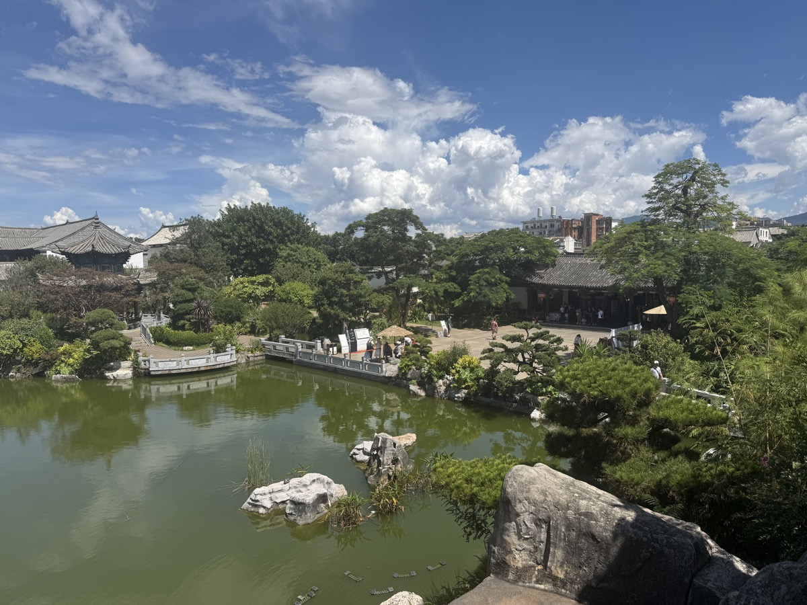
8.2 朝阳门短停和司机接人
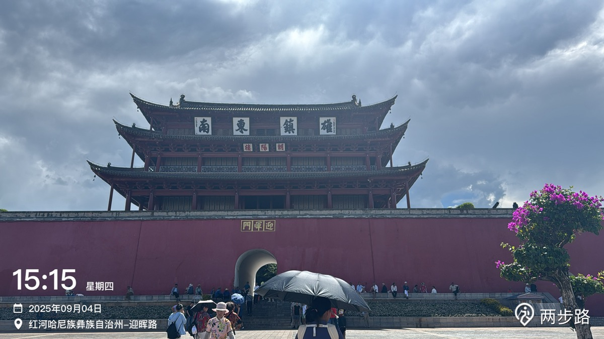
- 到朝阳门后立即由主领队联系司机到城门北面空地，用当日共享定位再次确认。
- 副领队把大家控制在安全拍照区域，不堵车道，不让队伍继续往古城深处散。
- 白天不上楼，只说明晚上可选择回来；历史票价15元，2026须现场核验。
- 离开朝阳门时，主领队电话通知乡会桥下午茶商家进入最后布置，报准确预计到达时间。
- 上车前点名；车上再点一次。确认疲劳退出人员的位置和后续安排。
如果预计不能在乡会桥火车历史停靠窗前抵达，不在朝阳门继续拍照。若当天火车时刻已确认变化，以当期时刻倒推；任何情况下都不为追火车超速或催促司机违章。
9. 乡会桥车站｜惊喜下午茶
🎙 讲解词：3.3 乡会桥车站与个碧石铁路（8—10分钟）——下午茶落座后气氛轻松时讲，结尾埋 D4 碧色寨钩子。
9.1 为什么保留
这是当天的情绪峰值之一：古火车站、滇越铁路支线、田园环境和秘密下午茶组合，比单纯多进一个景点更能让团队放松并开始熟悉。
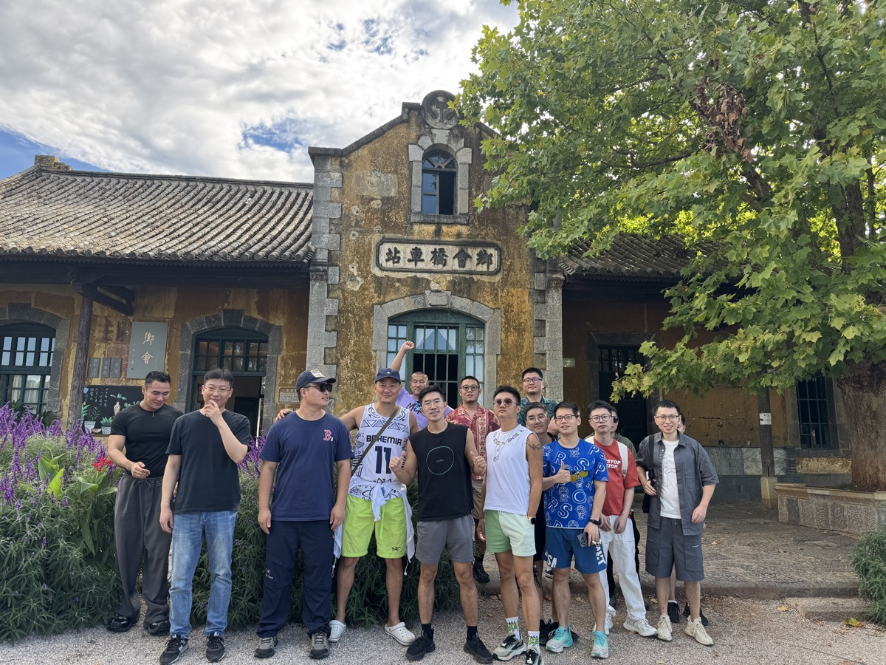
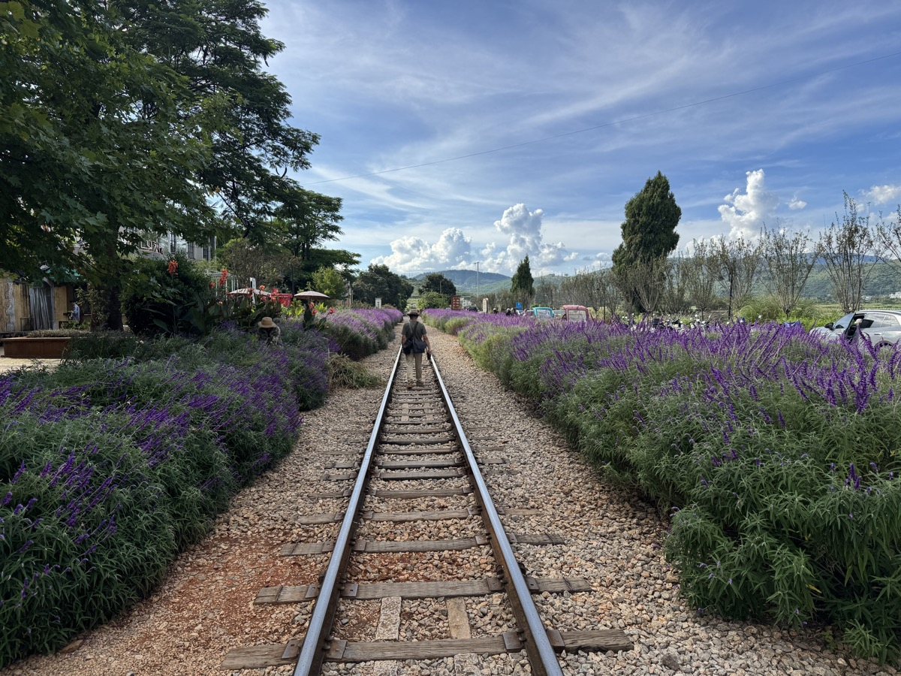
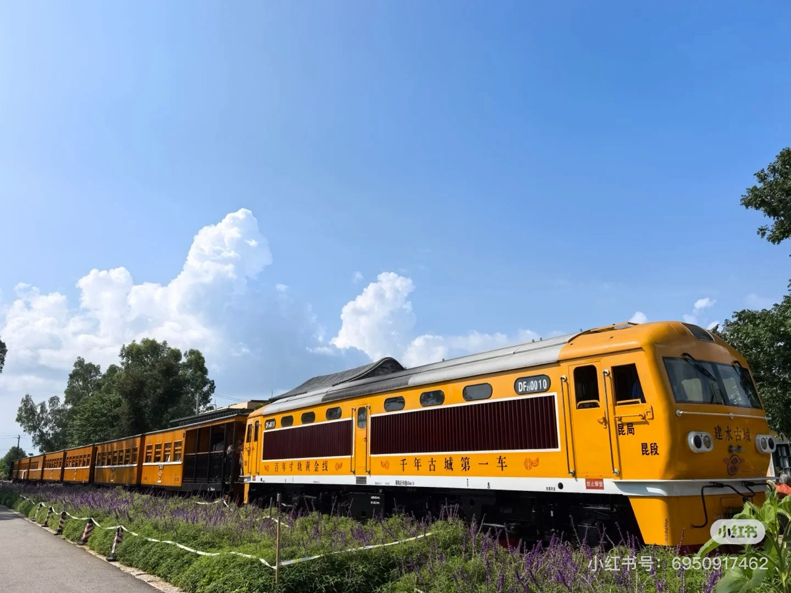
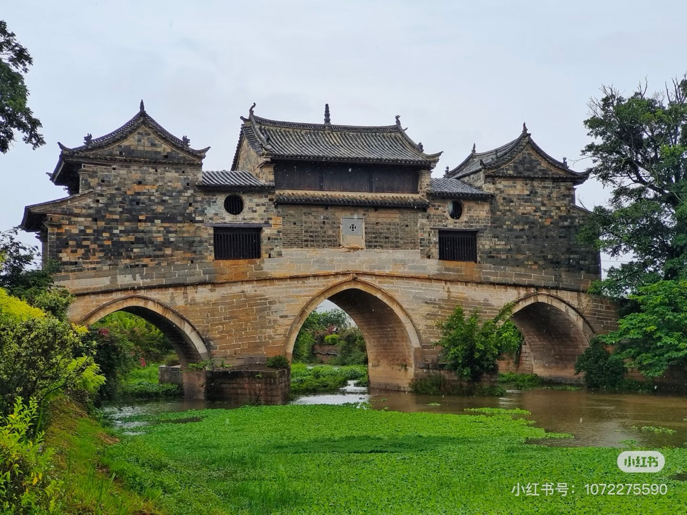
9.2 到达前30分钟
- 主领队再次电话
13577076576（仅在D-1验证有效后使用）。 - 重报人数、到达时间、饮品数量和忌口。
- 要求桌布铺整齐、食物饮品到位，但先不要在门口展示惊喜。
- 与司机确认大巴临停、掉头和接人点。
9.3 抵达后的双领队动作
- 副领队先带队到安全区域看车站、拍照，明确轨道和道路禁区。
- 主领队快速进入车站后的乡会田园餐厅，检查桌布、座位、杯数、食物、卫生和付款。
- 如火车正在进出站，先保证所有人退到安全线外；不追车、不贴轨道、不在车辆移动区域组织合影。
- 布置合格后再集合揭晓下午茶。
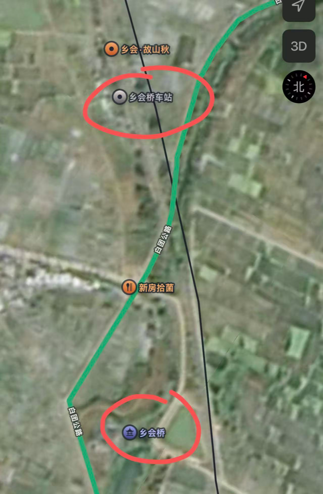
9.4 下午茶现场
- 说明砂锅咖啡器具历史上只有5套，是共享体验，不承诺每人一套。
- 确保每人至少有一杯已确认的咖啡、饮料或柠檬水，以及可分配的面包、水果。
- 对不喝咖啡、控糖或过敏人员主动安排替代，不让其自行找商家争取。
- 喝完后给两个选项：留在车站休息；或结伴步行约300米去乡会桥打卡。
- 允许领队做简单室友关怀，但不要公开撮合、起哄或让任何人有压力。
- 出发前15分钟第一次提醒，出发前5分钟第二次提醒；主领队结账，副领队找齐外出人员。
9.5 结账
- 合同/约定金额＿＿；新增饮品＿＿；损耗＿＿；合计＿＿。
- 付款人＿＿；付款方式＿＿；尾款已结□。
- 布置与食品照片□；结算单□；付款截图□；发票/收据□。
9.6 雨天和商家异常
| 触发条件 | 处理 |
|---|---|
| 小雨 | 全部转室内下午茶，取消走去乡会桥；缩短车站外拍照 |
| 雷暴/大风 | 不在铁轨、树下、桥边停留；直接室内或上车 |
| 商家未完成布置 | 主领队先挡住队伍，副领队延长安全拍照10分钟；仍未完成则公开改为普通休息，不让全团干等 |
| 商家临时无法接待 | 启用D-1确认的室内休息点；保留饮品和点心，取消“惊喜布置”而非临时乱找 |
10. 双龙桥｜日落、安全上下车与收队
🎙 讲解词：3.4 双龙桥（5—8分钟）——日落前等光线时讲，用精炼版即可。
10.1 前往双龙桥
按日落时间倒推，原版经验为日落前1—1.5小时从乡会桥出发，约17:00前后仅是历史参考。
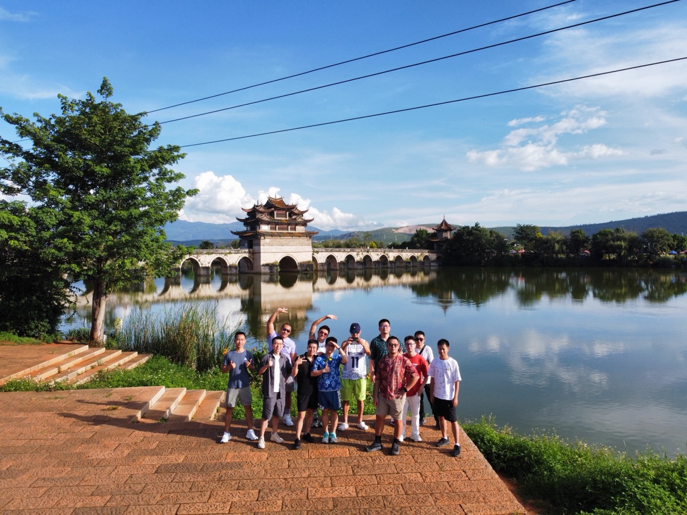
10.2 下车前
- 与司机确认安全下车点和接回点；原版提示附近不好停车，不能默认原地下车原地接。
- 在车上说明自由拍照范围、集合点和撤离时间。
- 不再使用“谁先拍到就比赛”的速度激励，避免队员冲向车道；改为“找到产品同款机位”的自愿任务。
- 副领队最后下车、最后清场，司机保持电话畅通。
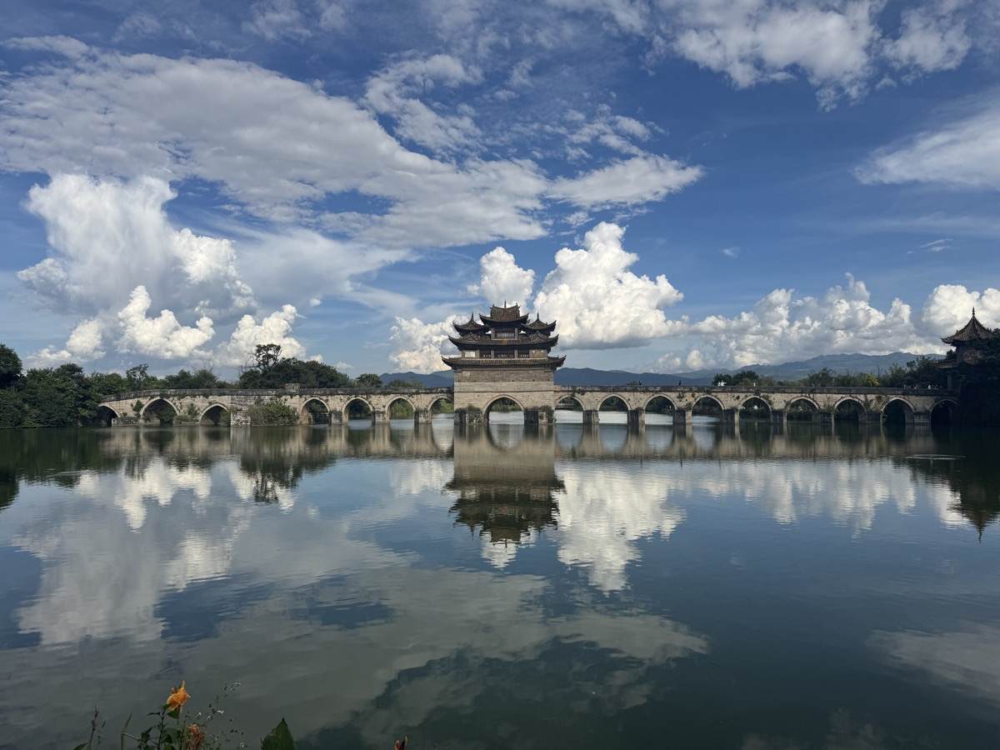
10.3 现场路线
- 下车点只用于快速疏散，不在车流里集合讲解。
- 沿原版粉色轨迹进入拍照区域；明确桥上、桥下和同款日落机位。
- 光线允许时拍团队合影；队员想单独拍照须记住集合时间。
- 天色变暗、雨势增大、车流增加或司机判断不宜停靠，立即收队。
- 上车前点名，上车后再点一次，再去建水临安酒店。
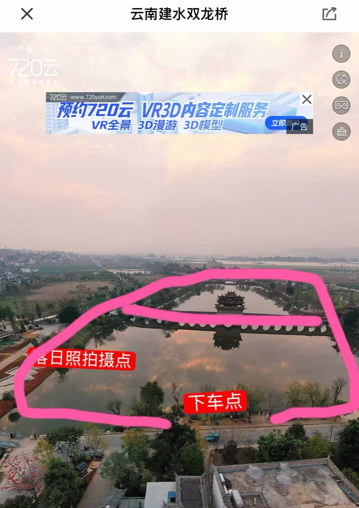
10.4 备用决策
| 状况 | 决策 |
|---|---|
| 天气阴但安全 | 缩短为20—30分钟拍照，不等待不存在的日落 |
| 大雨/雷暴 | 不下车，直接酒店入住 |
| 接人点被占/不安全 | 司机寻找合法安全点；领队带队步行过去，不让车违停等人 |
| 当天已严重延误 | 优先下午茶或双龙桥二选一，由主领队根据天气、日落和团队疲劳决定并告知产品经理 |
🛏 住宿卡
11. 建水临安酒店｜入住必须完成的闭环
11.1 酒店定位与预期
原版住宿：建水临安酒店，位于古城北门附近。选择逻辑是离古城近、体量和服务比古城小民宿稳定；历史反馈为交通方便、高层、部分房间能看到朝阳门。
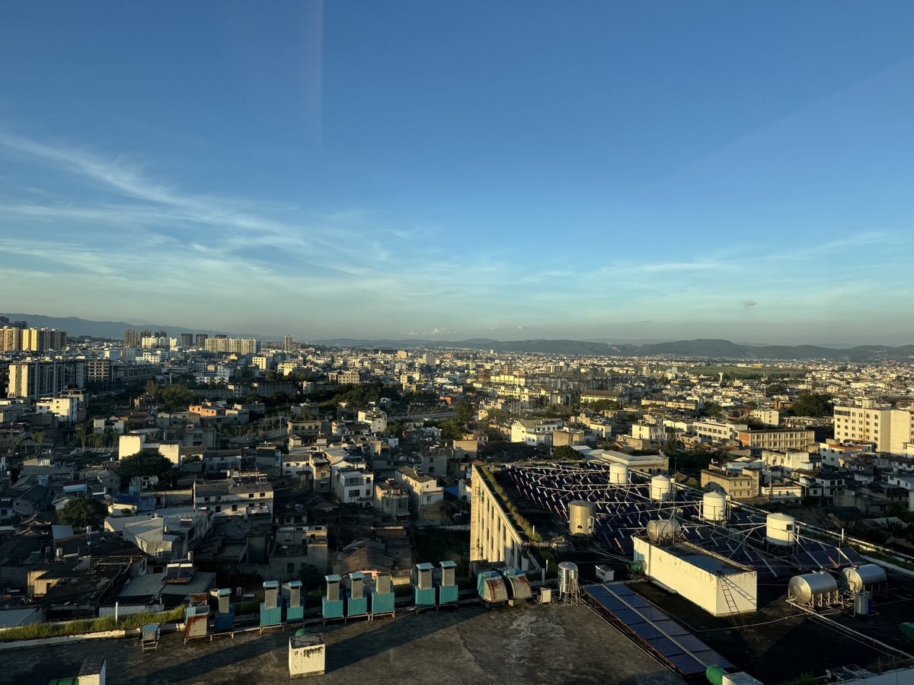
11.2 抵达前30分钟电话
你好，我们是天狼星团队，预计【时间】到，共【人数】人、【房间数】间。最终房表已在【时间】发给你，请确认房卡已经按名单准备。大巴从哪里停、行李在哪里卸？领队房和司机房分别是哪间？请再确认明早早餐地点和时间，以及团队账是否还有押金或待付费用。
电话后在本页记录：
- 前台接听人：＿＿＿＿
- 大巴停车点：＿＿＿＿
- 行李卸载点：＿＿＿＿
- 房卡是否备齐：是□ 否□
- 早餐地点/时间：＿＿＿＿
- 司机房：＿＿＿＿
- 待结费用：＿＿＿＿
11.3 车辆到店后的站位
- 车辆停稳后才允许起身取物。
- 主领队先下车确认大堂和前台，再通知开行李舱。
- 副领队站在行李舱旁按名单勾选，队员拿走一件勾一件。
- 贵重物品由本人保管；公共物资单独放，不与队员行李混在一起。
- 不让全部队员围堵前台，先把大家带到大堂固定等待区并指出WC。
11.4 分房与发卡
- 主领队拿纸质或手机房表与前台逐间核对，先确认房型，再收卡。
- 副领队按房表叫名字，每发一间房勾销一间；不能让队员自己从一叠房卡里拿。
- 临时换房必须三方确认：两名队员同意、前台系统修改、领队房表同步修改。
- 不公开讨论队员隐私或房间偏好；需要单独沟通时带离大堂。
- 发卡时逐人重复：早餐、晚餐集合、第二天集合、领队房号和电话。
11.5 入住后20分钟问题收集
- 门卡打不开
- 房型不符
- 空调/热水异常
- 异味/卫生问题
- 噪音或睡眠需求
- 同住沟通问题
- 行李遗漏
主领队统一与前台交涉，队员不要分别冲到前台吵；副领队保持群内回应。更换房间后立即更新房表。
11.6 入住后群消息
大家先回房休息。酒店Wi-Fi【密码】，早餐在【地点】，明早【时间】开始。今晚【时间】在【集合点】集合去吃饭；累的伙伴可以不参加，提前告诉领队即可。房卡、空调、热水或房间有问题，请在【20分钟截止时间】前私信领队，我们统一和前台处理。领队房间【房号】，紧急情况直接打电话【电话】。
12. 晚餐、古城散步和宵夜
原版同时出现“福籍菜”和“福鼎菜”两种写法。2026发布前必须核对门店正式名称、定位、营业状态和电话，不能只凭旧文字导航。
12.1 根据团队状态二选一
方案A｜标准带队路线
适用：团队体力尚可、主餐厅已经确认能接待。
酒店 → 大板井 → 路过餐厅时一位领队先点餐 → 大板井短停 → 返回餐厅晚餐 → 沿主街到朝阳门 → 自愿登楼 → 步行或打车回酒店。
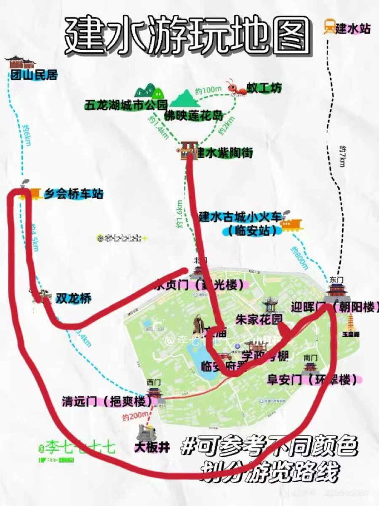

方案B｜分组觅食
适用：人数较多、口味差异大、当天普遍疲劳。2025年9月实际曾分为“清淡组、吃辣组、随意组”，19:00从酒店集合；2026可复用分组逻辑，不直接照搬领队和时间。
- 每组必须有一位领队或明确组长，不允许“自由活动”后无人知道去向。
- 在群里公布每组口味、餐厅、集合点、负责人、返回方式。
- 不参加晚餐者私信领队报备，21:30前报平安。
- 每组各自记录人数、金额、发票和特殊情况。
12.2 晚餐预订与到店
- 下午16:00前根据团队状态确定A/B方案。
- 核餐厅名称、电话、位置、人数、桌数、口味、付款和备用店。
- 福鼎菜若满座，原版备用为“建水人家（二十年店）”；两家都必须当日电话确认。
- 累的队员可直接打车到餐厅或留酒店，不用被迫走完整条线。
- 一位领队提前点餐，另一位领队带队；只有一位领队时取消“先走点餐”，改为全团到店。
12.3 朝阳门登楼费用
原版历史票价为15元/人，包含在报名费内，执行方式为队员自行买票、领队逐人转账报销；不要用群红包，因为无法准确确认谁领取。
2026执行记录：
- 当期票价：＿＿元/人
- 实际登楼人数：＿＿人
- 报销名单已核□
- 逐人转账完成□
- 转账截图/表格已存□
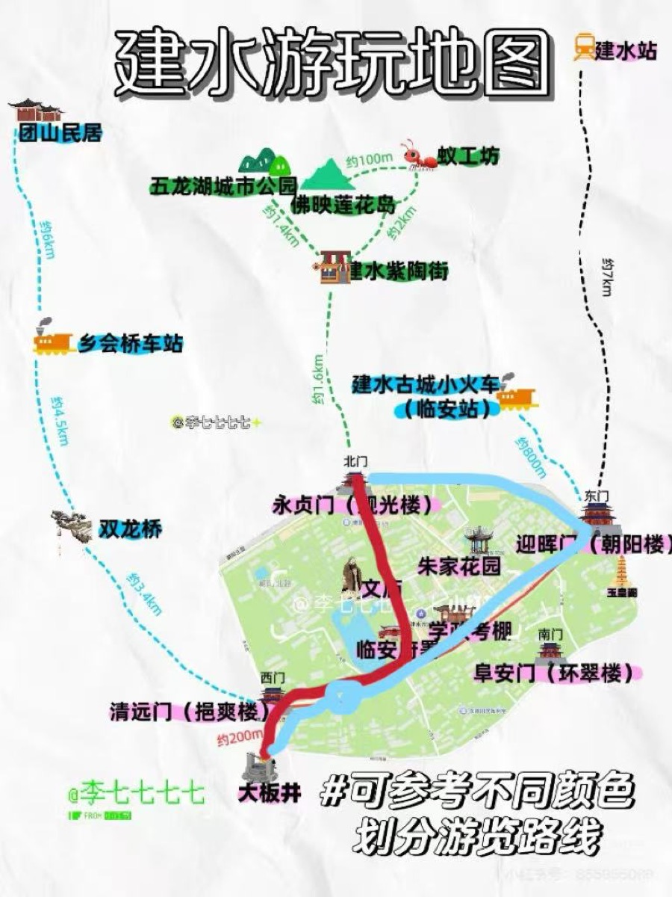
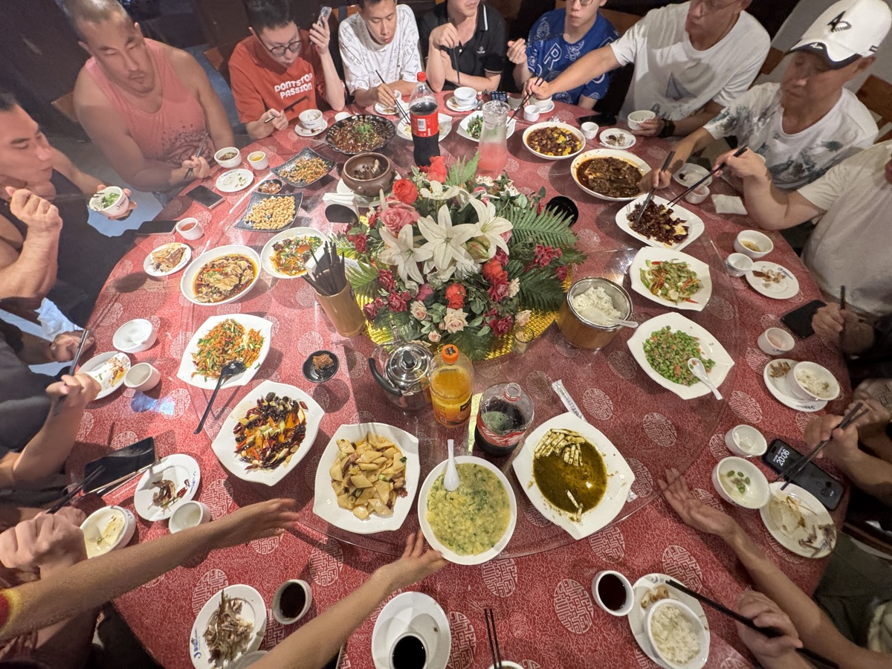
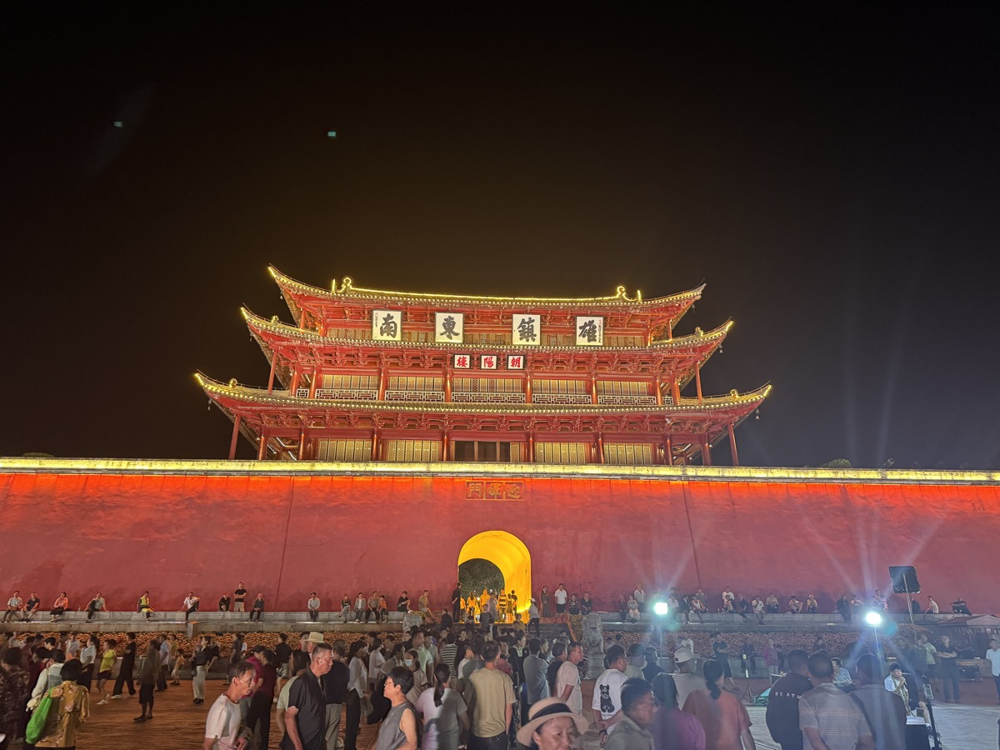
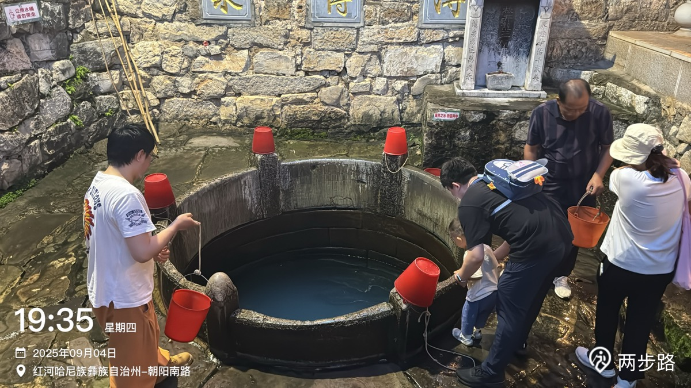
12.4 宵夜
原版推荐曲江人和烧烤，距酒店打车约起步价。它只能作为自由活动建议；2026发布前核营业状态，不能作为团餐保底。饮酒者必须结伴返回，不允许领队和全团同时失联。
12.5 雨天
取消大板井和长距离步行，直接打车去已经确认的餐厅；晚餐后回酒店。室内小酒局必须尊重酒店规定，并保留一位清醒、可联系的值班领队。
⚠️ 关账与次日锁定
13. 21:00以后｜全员报平安、当天结算和D3准备
13.1 全员安全闭环
- 在群内要求已回房人员回复；不公开未回复者的房间和隐私信息。
- 逐一联系未回人员，确认同行人、位置、返店方式和预计时间。
- 有人饮酒过量或身体不适，至少一名领队保持清醒并持续观察。
- 主副领队互相确认手机有电、铃声打开。
13.2 当天财务闭环
| 项目 | 应付 | 实付 | 付款人 | 凭证 | 异常 |
|---|---|---|---|---|---|
| 建水午餐 | ＿＿ | ＿＿ | ＿＿ | □ | ＿＿ |
| 文庙门票/讲解 | ＿＿ | ＿＿ | ＿＿ | □ | ＿＿ |
| 朱家花园门票/讲解 | ＿＿ | ＿＿ | ＿＿ | □ | ＿＿ |
| 乡会桥下午茶 | ＿＿ | ＿＿ | ＿＿ | □ | ＿＿ |
| 晚餐 | ＿＿ | ＿＿ | ＿＿ | □ | ＿＿ |
| 朝阳门逐人报销 | ＿＿ | ＿＿ | ＿＿ | □ | ＿＿ |
| 打车/临时支出 | ＿＿ | ＿＿ | ＿＿ | □ | ＿＿ |
13.3 D3锁定
- 问酒店前台：早餐地点、最早开餐、能否提前打包。
- 告诉前台第二天大巴到店时间和停车位置。
- 联系司机确认起床、车辆、行李装车和发车时间。
- 复核D3午餐较晚，群里提醒早餐吃足、自备少量零食和水。
- 联系元阳票务、咖啡、午餐和酒店，填写D3当期表。
- 将房间故障、换房、身体不适和关系冲突写入领队交接，不发到大群。
大家明早早餐在【地点】，开放时间【时间】。请【集合时间】带齐全部行李到大堂，【发车时间】准时出发去元阳。明天午餐会比较晚，早餐请吃足，可以自备少量零食和水。房卡按【方式】归还；身份证、充电器和随身物品今晚先检查一遍。
14. 延误时怎么删，不靠现场争论
| 判断时点 | 情况 | 直接执行 |
|---|---|---|
| 昆明发车 | 晚20分钟以内 | 午餐和票务电话顺延，景点顺序不变 |
| 午餐到店 | 晚20—40分钟 | 午餐按套餐快速出菜，朱家花园讲解缩短 |
| 文庙结束 | 晚30分钟以上 | 朱家花园改自由参观或缩短，不压缩乡会桥布置时间 |
| 朝阳门 | 已错过火车且日落迫近 | 朝阳门不停留；乡会桥下午茶和双龙桥根据天气、团队状态二选一 |
| 乡会桥 | 距安全撤离线不足60分钟 | 下午茶限时，取消步行去乡会桥，直接双龙桥 |
| 双龙桥 | 天黑/下雨/车流危险 | 立即取消，下车体验让位于安全和酒店入住 |
| 入住后 | 全团普遍疲劳 | 取消古城长走，晚餐改分组或就近，按时收队 |
15. 领队现场十问｜30秒内必须在本页找到答案
- 早餐在哪里、几点开始？→ 第1节当期表＋第5节早餐执行。
- 房卡怎么收、行李怎么点？→ 第5.3—5.4节。
- 午餐给谁打电话、提前多久、说什么？→ 第2节电话＋第6.2节。
- 午餐怎么付款、谁能加菜？→ 第6.4—6.5节。
- 文庙谁买票、谁带WC、从哪个门出？→ 第3节分工＋第7节。
- 朱家花园团队票缺什么材料？→ 第4.4节＋第8.1节。
- 下午茶谁先去检查、商家电话多少？→ 第2节电话＋第9节。
- 双龙桥在哪里下车、什么时候取消？→ 第10节。
- 到建水酒店后谁办入住、谁管行李、怎么发卡？→ 第11节。
- 晚餐满座、下雨、队员太累怎么办？→ 第12节＋第14节。
16. 本页来源与冲突记录
| 内容 | 来源 | 处理方式 |
|---|---|---|
| D2全线顺序、站点操作、图片、餐厅和下午茶电话 | 云南之恋·普者黑 产品指南 | 原样保留核心动作并补闭环 |
| 昆明早餐07:00、08:55集合、09:00发车 | 2025-09往期群公告 | 标记历史值，2026再次确认 |
| 建水酒店早餐07:00、D3 08:55集合、09:00发车 | 2025-09往期群公告 | 放入夜间D3准备，不冒充当期确认 |
| 建水晚间19:00、按口味分三组 | 2025-09往期群公告 | 转化为可选分组方案 |
| “福籍菜/福鼎菜”名称不一致 | 原版内部冲突 | 标为必须核实，不擅自选择其一 |
| 司机姓名与旧车牌 | 2025-09往期群公告 | 不写入可执行区，禁止沿用 |
早餐有人管、房卡收齐、行李点清、司机知道每个点、午餐能按时出菜并结账、两处票务材料齐、下午茶真的布置好、双龙桥安全撤离、酒店按房表发卡、晚餐有人带、所有人回店、账目有凭证、D3资源已确认。缺任何一项，都不算“当天带完”。
D3 建水 → 元阳
前一晚锁定迟午餐 → 早餐吃足 → 退房行李 → 元阳游客中心购联票 → 老虎嘴咖啡 → 阿者科午餐与村落 → 多依树 → 坝达日落判断 → 万缮酒店入住 → 哈尼家宴 → 提前早餐与D4早发。
D3当期关键信息
| 项目 | 本团值 | 历史参考 | 状态/截止 |
|---|---|---|---|
| 建水早餐 | ＿＿＿＿ | 历史07:00开始；地点在一楼大堂附近 | 🔴 D2 21:00 |
| 集合/发车 | ＿＿＿＿ | 历史08:55集合、09:00发车 | 🔴 D2 21:00 |
| 元阳联票/人数 | 订单＿＿；成人＿＿；免票＿＿ | 一张纸历史需验3次 | 🔴 D-2 |
| 老虎嘴咖啡 | 数量＿＿；金额＿＿ | 历史电话17869440551 | 🟡 D2 20:00 |
| 阿者科午餐 | 时间＿＿；人数＿＿；菜单＿＿ | 红稻人家13669786846，历史约14:00 | 🟡 D2 20:00 |
| 午餐备用 | ＿＿＿＿ | 山村食坊15187439853 | 🟡 D2 20:00 |
| 坝达日落 | 日落＿＿；撤离＿＿ | 旧记录9/30为18:58，不沿用 | 🔴 当日06:30 |
| 元阳酒店 | ＿＿＿＿ / 前台＿＿ | 万缮度假酒店；历史销售13888248332 | 🟡 D-2 |
| D3晚餐 | ＿＿＿＿ | 哈尼家宴；恶劣天气用酒店餐厅 | 🔴 D2 20:00 |
| D4早餐/发车 | 早餐＿＿；发车＿＿ | 历史协商07:30早餐、08:10发车 | 🔴 D3入住时 |
🧭 行程总览卡（一屏速查·当期信息）
D3一屏速查
| 节点 | 必须动作 | 红线/风险 |
|---|---|---|
| 早餐 | 领队确认每个人吃到；提醒午餐可能14:00 | 空腹、低血糖 |
| 退房 | 房卡、行李、人数各点两次 | 山区后难返酒店 |
| 游客中心 | 主领队买票并拍票；副领队带WC | 纸票需多次验，不能丢 |
| 老虎嘴 | 提前30分钟通知咖啡；先下后上约150米 | 下坡滑、返程爬升 |
| 阿者科 | 先吃饭再游村；堵车时果断取消 | 午餐太晚、道路堵死 |
| 多依树 | 20分钟快停，可跳过 | 梯田审美疲劳 |
| 坝达 | 日落前约1小时到；无景不死等 | 天黑、低温、咖啡店不开 |
| 酒店 | 房间分散，必须发地图；服务员分批带房 | 行李、迷路、房间故障 |
| 晚餐 | 黑路结伴；领队一前一后 | 摔倒、饮酒后失联 |
| 夜间 | 核账并锁定D4提前早餐、08:10发车 | D4长途整体延误 |
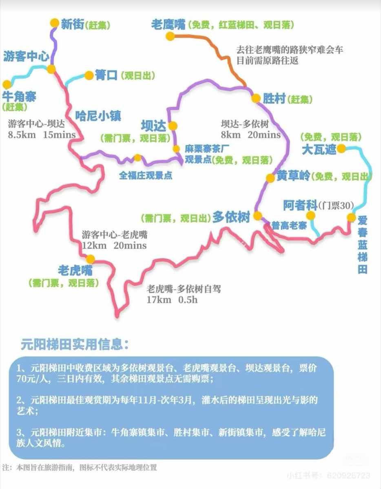
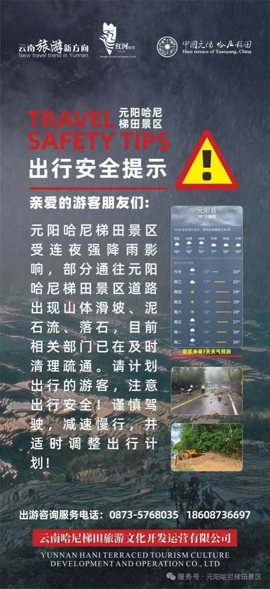
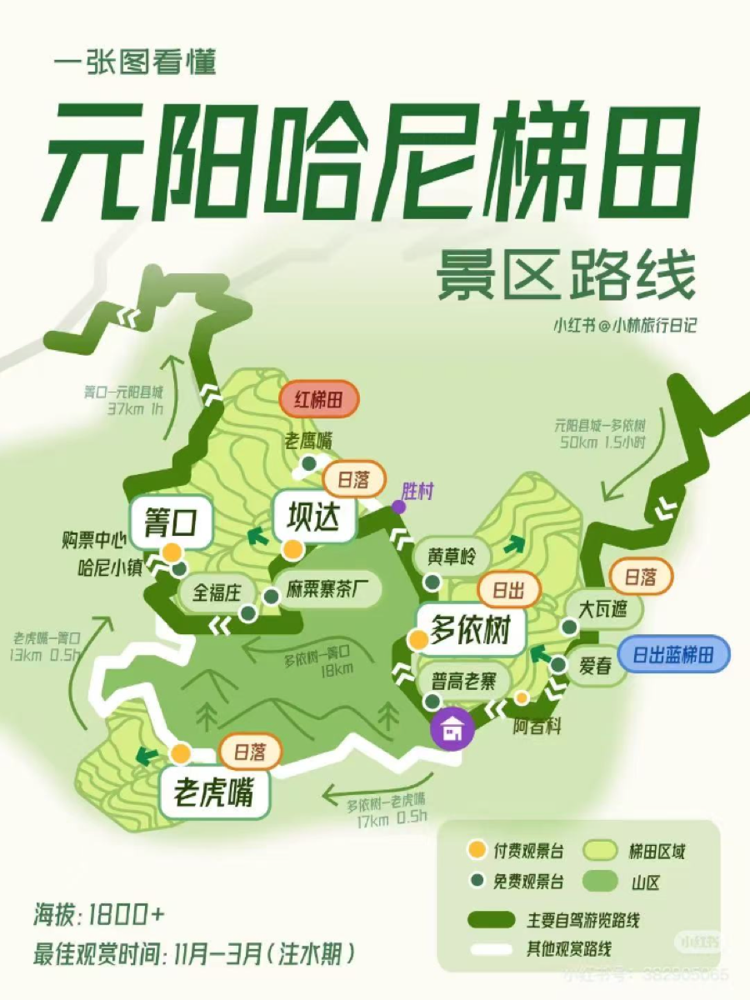
D3前一晚｜迟午餐和山地行程必须说清
- 酒店确认早餐地点、开餐、退房和大巴停靠。
- 告诉队员：今天正常约14:00才能午餐，早餐吃足，自备少量零食和水。
- 司机收到路线：建水临安酒店 → 元阳梯田游客中心 → 老虎嘴 → 阿者科路口 → 多依树 → 坝达 → 万缮度假酒店。
- 确认元阳联票、免票人员、票务材料和三次验票点。
- 老虎嘴咖啡按人数、冰热、无咖啡因、付款提前确认。
- 红稻人家提前一天订菜；村内采购不便，不能到达后才点团餐。
- 确认阿者科讲解从餐厅附近开始，避免吃完饭再爬回游客中心。
- 同时确认备用午餐，主餐厅和道路都必须有联系电话。
- 万缮酒店收到房表；确认司机住宿和晚餐是否分开。
🚌 交通卡（逐段转场）
| 转场 | 目的地定位 | 特殊路况 | 中途停靠 | 突发预案 | 特殊交通 |
|---|---|---|---|---|---|
| 建水→元阳梯田游客中心 | 元阳梯田游客中心 | 限高、路窄、颠簸、盘山路 | 车程长，按需服务区 | 堵车、管制、天气预案 | 无 |
| 游客中心→老虎嘴观景台 | 老虎嘴观景台 | 同上 | 无 | 验票三次，票纸收好 | 无 |
| 老虎嘴→阿者科村 | 阿者科村口 | 旺季（10月—4月）大巴一般开不进村，停外面马路走几百米 | 无 | 堵车则不保证进村 | 无 |
| 阿者科→多依树 | 多依树停车场（凭票直接开进） | 山路 | 无 | 无 | 无 |
| 多依树→坝达观景台 | 坝达观景台 | 山路 | 无 | 无日落可提前回酒店 | 无 |
| 坝达→元阳万缮度假酒店 | 元阳万缮度假酒店 | 山路，夜间行车 | 无 | 不摸黑赶路 | 无 |
06:30—发车｜早餐、退房和车辆
- 主领队查元阳天气、云量、降雨、山路和坝达日落时间；副领队叫醒司机并确认车况。
- 两位领队错峰早餐，观察昨天步行后腿脚、肠胃和睡眠情况。
- 对容易低血糖者单独提醒携带糖和零食，不在群里公开其健康信息。
- 主领队到前台核房费、房卡和额外消费；副领队在车边按名单勾行李。
- 大堂点人、车上再点人；行李上车前后各点一次。
- 车上说明：今天风景取决于天气，不保证全景和日落；阿者科受道路影响可能取消。
今天是元阳梯田精华日，但山区云雾变化很快，我们会根据能见度调整停留。午餐预计在【时间】左右，大家早餐务必吃足并带少量零食。老虎嘴先下坡后爬升，慢慢走即可；身体不适随时告诉领队。
🏞 景点卡（现场执行）
元阳梯田游客中心｜买票、WC和三次验票
🎙 车上讲解：3.5 元阳梯田总述（10分钟）——建水赴元阳车上讲，先把"四素同构"主线立起来；游客中心排队时可补讲要点。
到达前
- 主领队准备行程单、人员名单、免票证件清单和公司付款方式。
- 副领队在车上说明：售票期间大家跟副领队去WC，可在大厅小型展陈区短暂参观，不得散开。
- 与司机确认买票后上车位置。
现场操作
- 主领队办理团队票并核数量、金额、有效景点和使用期限。
- 原版经验为纸质联票需要验三次；拿票后立即拍正反面，放入防水文件袋。
- 指定主领队保管正票，副领队保存照片；不要交给队员轮流拿。
- 每次验票后立即核票仍在，记录已经使用的点。
- 免票或退款人员逐人登记，不用群红包处理退款。
异常处理
| 情况 | 动作 |
|---|---|
| 团队票系统故障 | 留一名领队办理，大队在大厅固定区域等待；超过20分钟通知产品经理 |
| 纸票遗失 | 立即用票面照片、付款凭证和订单找售票处，不带全团继续闯检票口 |
| 免票政策变化 | 以当期窗口书面/票据为准，先记录后统一退款 |
老虎嘴观景台｜咖啡惊喜与150米返程爬升
🎙 讲解词：3.6 老虎嘴·多依树·坝达（8—10分钟）——一节覆盖三个台，这里讲老虎嘴段。
预期管理
这里是全天运动量最大的点：先下后上，累计返程爬升原版约150米。景色和咖啡是奖励，不组织跑步比赛。
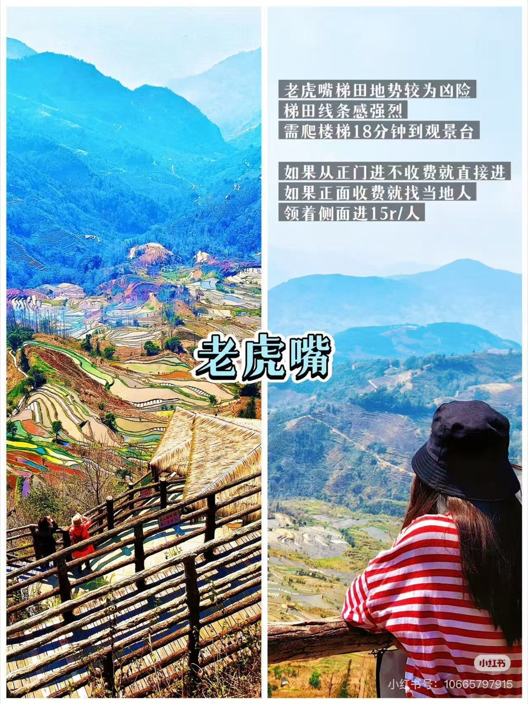
抵达前30分钟
历史联系人：咖啡店 17869440551，旧记录曾有折扣，不得直接承诺2026价格。
- 重报实际人数和预计到达。
- 确认冰摩卡、柠檬水、热饮及无咖啡因数量。
- 确认价格、付款、杯数和是否仍提供服饰拍照。
- 若当天雨冷，冰饮改热饮；不机械照搬“一半冰摩卡”。
到站动作
- 主领队持联票检票；副领队把队伍带到安全等待区。
- 过检后直接往下观景台走，一位领队先下查看咖啡，另一位压慢队伍。
- 下坡提醒扶栏、保持间距，雨天不边走边拍。
- 每人领到一杯再自由拍照；特殊饮食者由领队主动送替代饮品。
- 咖啡馆附近即可看梯田，也可继续下十几米到拍照点，但必须说明返回时间。
- 回程不比赛跑；可设“安全回到检票口并发一张最喜欢照片”的轻互动。
- 上观景台放在返程最后看，不先消耗体力和时间。
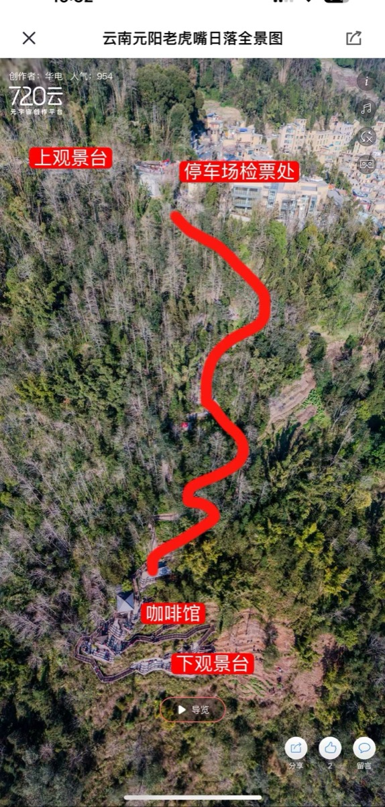
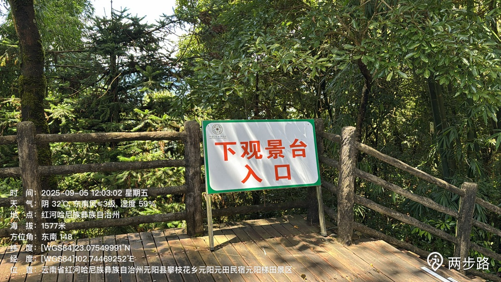
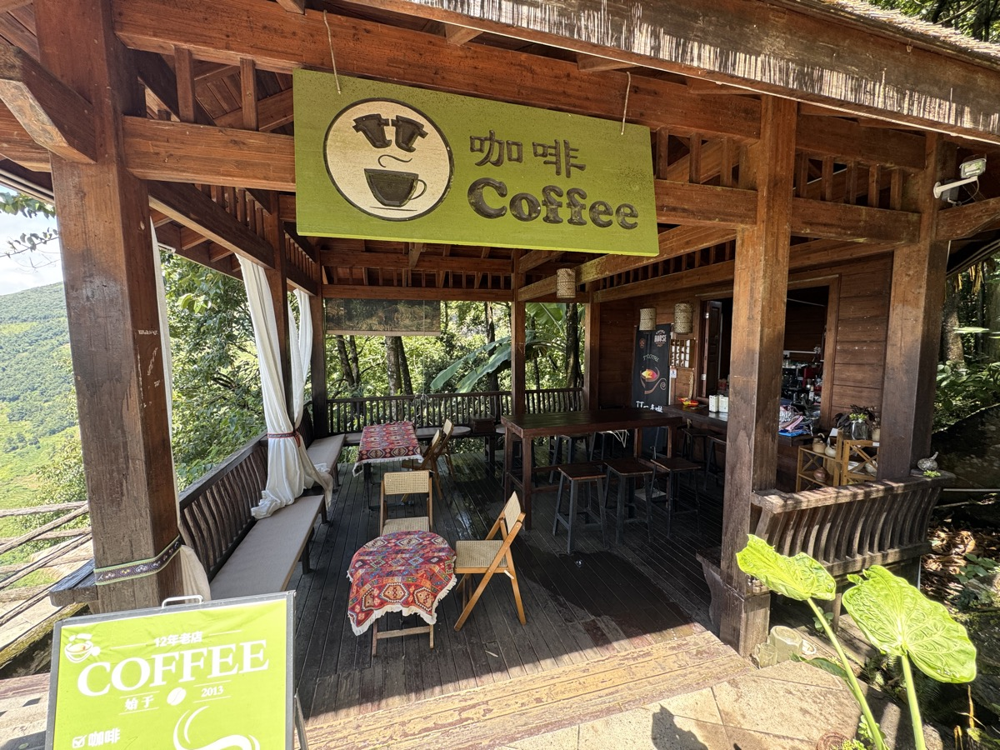
咖啡结账
- 实际杯数＿＿；单价＿＿；其他消费＿＿；合计＿＿。
- 付款人＿＿；截图□；收据/发票□；少杯/错杯记录＿＿。
备用方案
- 咖啡店停业：取消惊喜承诺，在观景台发领队备用水和小零食；不临时购买来源不明饮品。
- 大雨/路滑：只到安全上观景台或取消下行，节省时间给午餐和酒店。
- 有人爬升困难：副领队陪同慢返；大队由主领队在检票口固定等待。
🍚 用餐卡
阿者科村＋午餐｜先解决吃饭，再做村落体验
🎙 讲解词：3.7 阿者科村（8—12分钟）——午餐后走村时讲蘑菇房与阿者科计划。
进入条件
阿者科不应承诺百分之百进入。原版提示道路容易堵，大巴停主路后还需步行数百米。到路口前由司机、餐厅和景区三方判断：能进、能出、午餐能按时上，才进入。
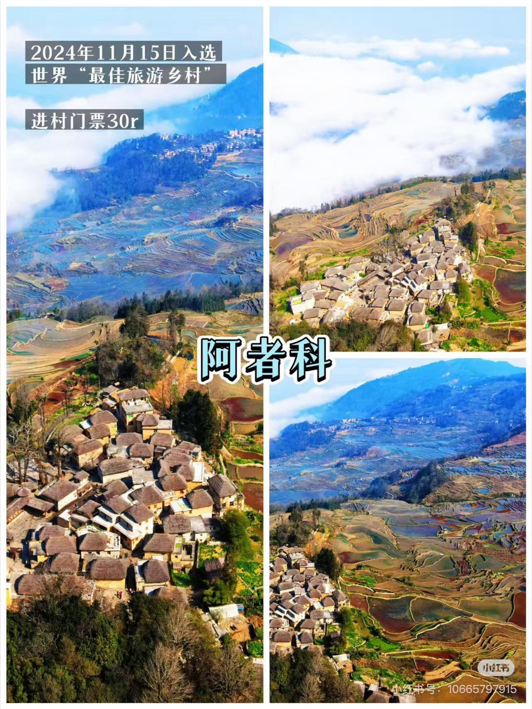
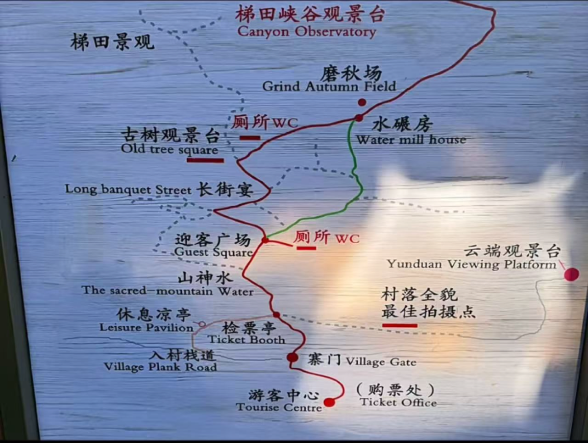
午餐预约
历史主餐厅：红稻人家，电话 13669786846；原版约14:00到。
历史备用：山村食坊，电话 15187439853。
D-1必须确认：人数、到店窗、桌数、菜单、红米饭、菜量、忌口、司机餐、饮料、付款和发票。村里采购不便，人数变动立即通知。
下车到餐厅
- 大巴在主路或当期允许点停车；问司机预计接回位置，防止堵车后失联。
- 步行数百米到检票处，出示行程单。原版历史票价为25元优惠票，2026以当期为准。
- 沿寨神林主路到迎客广场，在泉水亭短停洗手，并第一次说明最终集合点。
- 再走约20米到红稻人家；主领队先核餐，副领队带全员入座。
午餐执行
- 先核实际人数和空位，再通知厨房。
- 红米饭、热菜、蔬菜、主食按约定检查，不能只顾拍照。
- 特殊饮食者主动安排；司机餐按约定送达或打包。
- 加菜只有指定领队可以确认；结账前20分钟联系司机。
- 保存菜单、结算单、付款截图和发票/收据。
午餐后村落路线
- 从餐厅继续向前到观景台，远景合影需要一名领队提前到约30米外取景。
- 到主观景台后开放自由活动，可去“村落最佳拍摄点”和“云端观景台”。
- 讲解员如需从餐厅附近开始，D-1由产品方提前和工作人员说明，避免吃完再爬回游客中心。
- 鼓励与当地人友善交流，但不打扰、不偷拍、不随意进入民居。
- 在迎客广场准时集合，步行回主路；只有道路明确通畅时才请司机进检票处接。
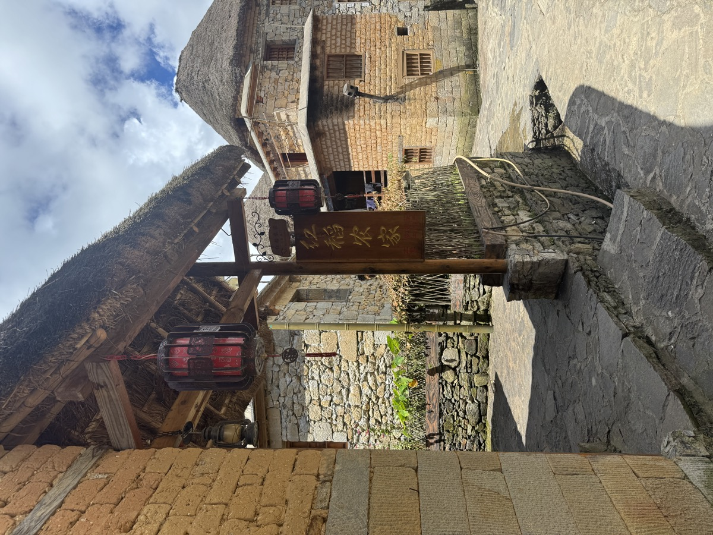
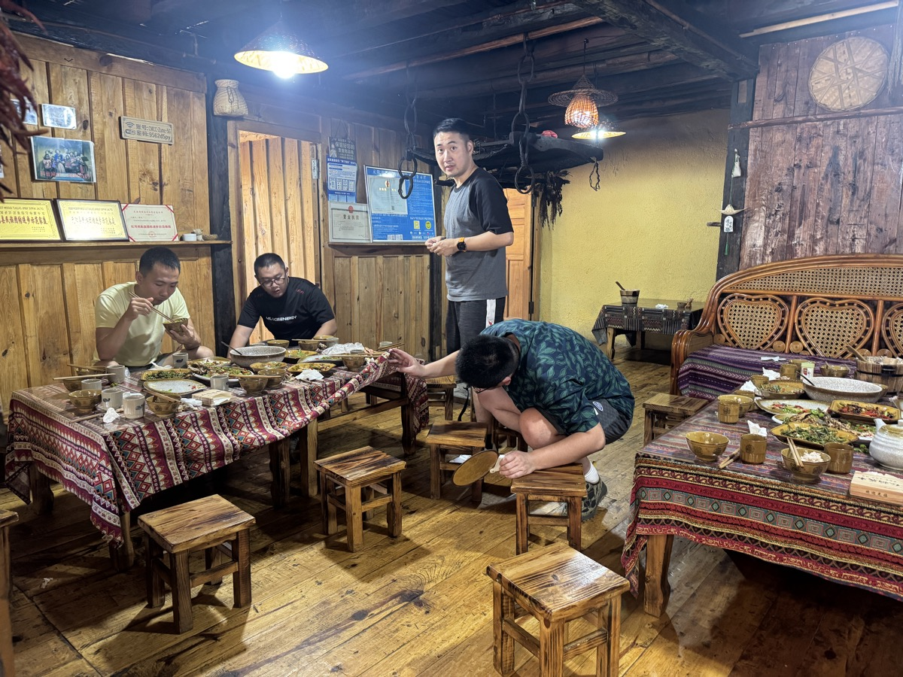
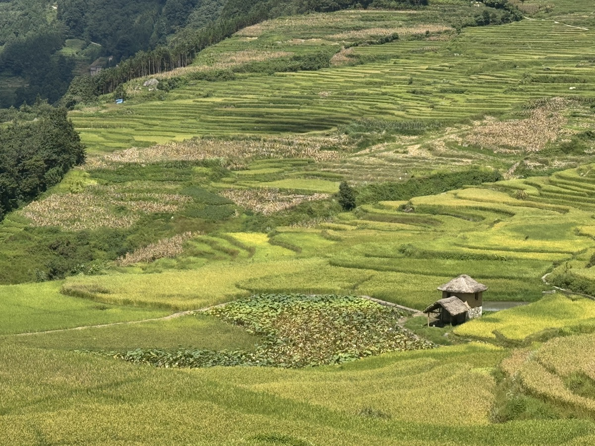
阿者科取消时
| 触发条件 | 动作 |
|---|---|
| 路口严重堵车，司机判断难以退出 | 不进村，启用提前确认的公路沿线/景区备用午餐 |
| 主餐厅临时无法出餐 | 若备用餐厅已确认则切换；否则产品经理决策，不让全团无期限等 |
| 下雨且确定无日落 | 可在村内多留约30分钟，但仍须保证天黑前到酒店 |
| 摸鱼等体验 | 只有天气、安全、保险、当地许可全部满足才组织；不作为固定承诺 |
多依树｜快停或主动跳过
🎙 讲解词：3.6 老虎嘴·多依树·坝达（8—10分钟）——快停时只讲多依树日出机位段。
这里是去坝达和酒店的顺路点，可从另一方向看阿者科梯田。观景台小、大巴可到附近，原版建议快则20分钟。
- 下车前给出20分钟集合时间和同一上车点。
- 到站后自由拍照，不做长讲解，避免梯田审美疲劳。
- 下雨、起雾、阿者科延误或坝达日落迫近时直接跳过。
坝达观景台｜不保证日落，不让全团空等
🎙 讲解词：3.6 老虎嘴·多依树·坝达（8—10分钟）——日落等待时段选讲坝达段。
到达和动线
停车后步行约100米到1号观景台，再约30米到2号观景台；2号附近历史上有咖啡店和WC，再前行约20米到3号点。营业必须当日确认。
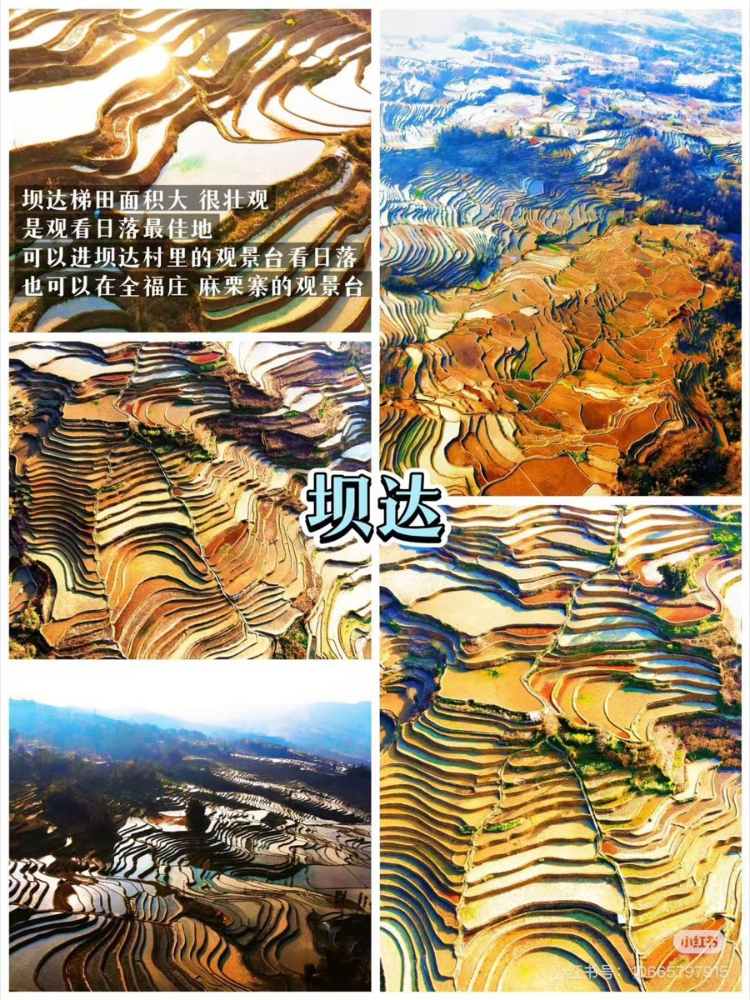
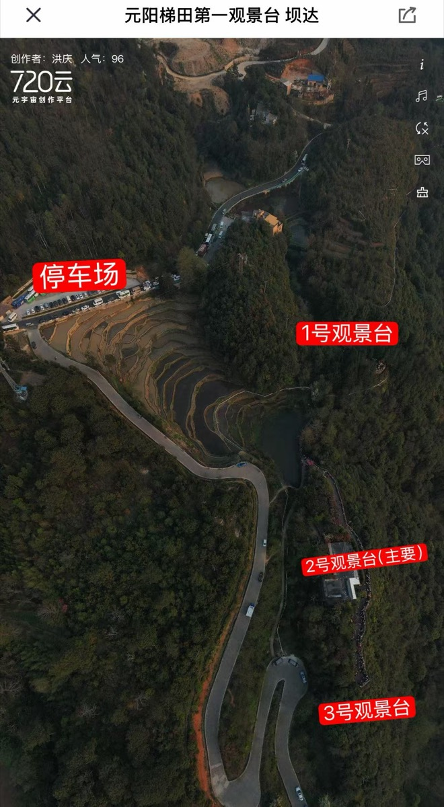
日落决策
- 以当天日落、云量、雨势、风和队员体感决定停留，不使用旧团18:58等时间。
- 日落条件好：提前约1小时抵达，走完1—3号点后回2号点等待。
- 咖啡店不开：使用领队携带的纸牌或轻互动，但不占用通道、不喧哗扰客。
- 阴雨或能见度差：参观约40分钟后去酒店，不为了“也许会放晴”拖到摸黑。
- 低温、强风或有人不适：副领队带其先回车，主领队按撤离线收队。
🛏 住宿卡
元阳万缮度假酒店｜分散式入住
住宿特点
原版评价为全线住宿亮点之一，别墅通常每栋4—6户，房间可能分散。领队必须发酒店地图，不能只发房号。
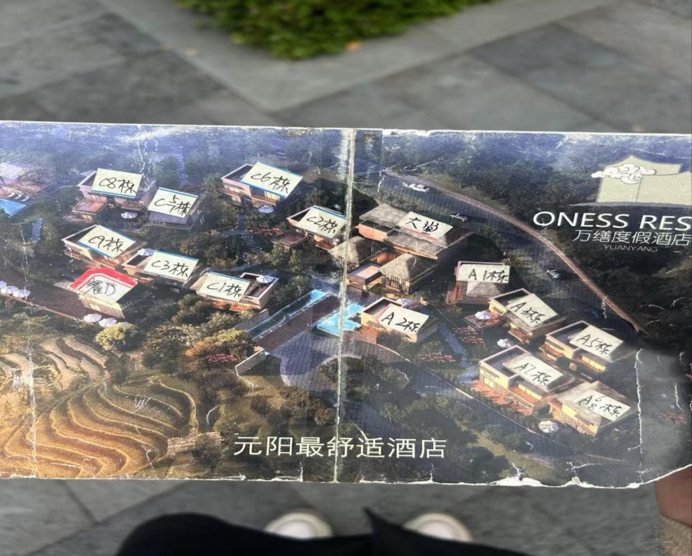
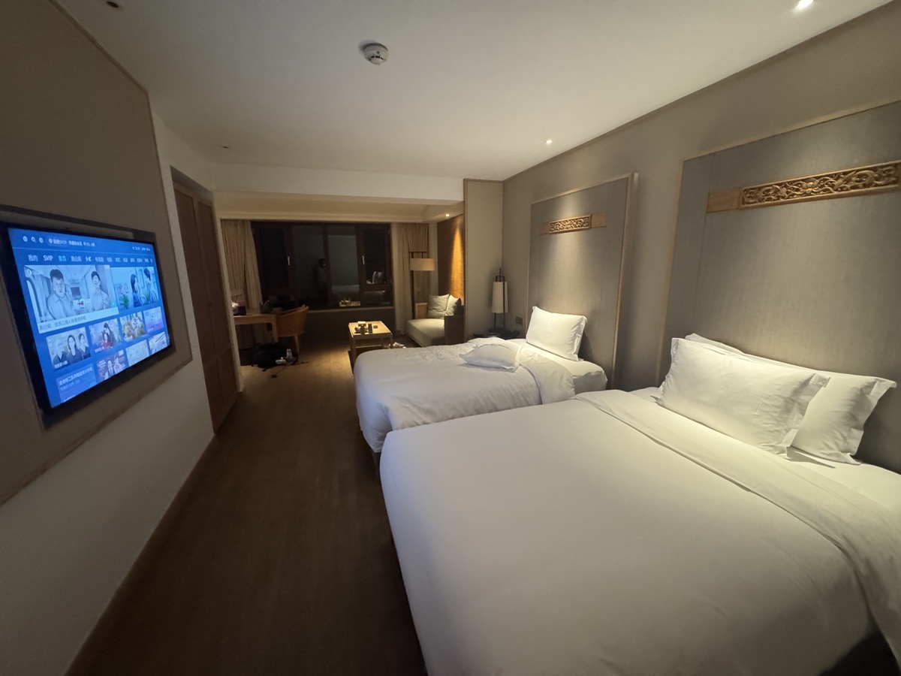
到店前30分钟
- 电话前台确认房卡、房表、服务员/摆渡车、行李搬运、大巴停车和司机住宿。
- 尽量把团队安排在相邻楼栋；无法同栋时，按领队照顾范围分区。
- 历史早餐正常08:00，旧团因D4 08:10发车曾要求07:30提前开餐；2026必须书面或电话确认。
- 酒店协调困难时，历史销售电话
13888248332，使用前验证身份与有效性。
抵达与发卡
- 主领队先到前台核房表；副领队在车边点行李，公共物资单独放。
- 给每个人发“房号＋楼栋＋地图＋室友＋早餐＋集合”信息。
- 由酒店服务员分批带路并协助行李；每带走一组，领队在表里勾销。
- 领队房尽量分别靠近两片住宿区，不要两位领队住同一偏远角落。
- 入住后20分钟集中收门卡、热水、空调、异味、行李和迷路问题。
D4提前早餐和司机
- 酒店明确答应早餐＿＿:＿＿开放；地点＿＿＿＿。
- 无法提前开餐时，打包早餐内容和领取时间已确认。
- D4大巴＿＿:＿＿到；＿＿:＿＿点行李；＿＿:＿＿发车。
- 司机住宿地点＿＿＿＿；是否与团队吃晚餐＿＿；早餐如何解决＿＿。
晚餐｜哈尼家宴
原版主方案为哈尼家宴，酒店前台右侧台阶上行；夜间没有路灯。恶劣天气直接使用酒店餐厅。
餐前
- 确认人数、火锅与炒菜组合、忌口、酒水是否自费、司机是否用餐。
- 一名领队带手电走前，一名领队走最后；队员必须结伴。
- 雨天、强风或路滑直接切酒店餐厅，不用团队安全换“民族氛围”。
用餐
- 火塘文化介绍请当地工作人员在合适时机进行，领队提醒尊重但不强迫喝酒。
- 祝酒歌、共饮属于自愿互动；不劝酒，不把不喝酒的人单独点出来。
- 加菜、酒水和自费项目先说明价格，由指定领队确认。
- 结账保存菜单、实到人数、付款截图和票据。
- 返回酒店按小组结伴，主副领队一前一后清场。
⚠️ 关账与次日锁定
D3夜间关账与D4锁定
- 联票仍在并防水保存；已验次数有记录。
- 咖啡、午餐、门票、晚餐全部有付款凭证。
- 全员回房；房间分区和异常已更新。
- D4早餐提前、行李、08:10或当期发车已确认并发群。
- 司机收到碧色寨和普者黑当期正确定位。
- 碧色寨摆渡、米线、最晚离开时间确认。
- 普者黑画舫船预约时段、登船码头、酒店行李交接确认。
明天是全程车程最长的一天。早餐在【地点】，请【时间】开始用餐；【集合时间】带全部行李到【集合点】，【发车时间】准时出发。碧色寨是时间允许才停的中途体验，普者黑画舫船是核心项目；如果道路拥堵，我们会优先保证普者黑。身份证、雨具、充电宝和随身小包请带好。
D3完成标准
早餐吃足、房卡行李清零、纸票保管、咖啡有替代、阿者科能进能出才进入、迟午餐已解决、多依树可舍、坝达不死等、分散酒店没有人迷路、黑路晚餐结伴、司机和提前早餐已确认。
D4 元阳 → 碧色寨 → 普者黑
原版“两段船＋摆渡车＋天鹅湖”不是当前可执行流程。普者黑景区运营方公告自2025-09-20起将中线升级为从青龙山码头或双甲山码头出发、全程乘画舫船游览。2026本团必须按预约订单确认登船码头、下船码头、检票时段和酒店衔接，不能照旧图走。
提前早餐 → 退房行李 → 08:10硬发车 → 碧色寨快速游览与米线午餐/必要时取消 → 长途车程服务 → 普者黑画舫船 → 酒店接行李与入住 → 晚餐 → D5早餐、日出、午餐和散团确认。
D4官方核验基线｜2026-09-07读取
| 项目 | 官方公开信息 | 领队怎么执行 |
|---|---|---|
| 中线升级 | 2025-09-20起；青龙山码头/双甲山码头出发，全程画舫船 | 以本团订单标注的起止码头为准 |
| 升级公告检票 | 6月至国庆08:00—18:00；其他月份08:00—17:00 | 团期跨国庆前后必须电话确认 |
| 旅游服务页乘船运营 | 5月1日至10月31日08:00—17:30 | 两页有口径差，未确认时以17:30为保守红线 |
| 预约 | 可在“普者黑景区官方”小程序预约登船时间 | D-2预约，D-1截图和电话复核 |
| 青龙山 | 官方提示需小程序免费预约 | D-2为D5完成预约 |
| 景区服务电话 | 4006350008、0876-4610000 |
D-2和D-1各复核一次 |
官方来源：
D4当期关键信息
| 项目 | 本团值 | 状态/截止 |
|---|---|---|
| 早餐/集合/发车 | ＿＿ / ＿＿ / ＿＿ | 🔴 D3入住时 |
| 碧色寨最晚决策点 | 预计到达超过＿＿:＿＿则取消 | 🔴 D3 21:00 |
| 碧色寨摆渡/米线 | 票＿＿；餐厅电话＿＿；人数＿＿；付款＿＿ | 🔴 D3 20:00 |
| 普者黑订单号 | ＿＿＿＿ | 🔴 D-2 |
| 预约登船时间 | ＿＿:＿＿ | 🔴 D-2 |
| 登船码头 | 青龙山□ / 双甲山□ / 订单写明＿＿ | 🔴 D-2 |
| 下船码头 | 青龙山□ / 双甲山□ / 订单写明＿＿ | 🔴 D-2 |
| 最迟到达检票口 | ＿＿:＿＿ | 🔴 D-1 |
| 船票证件/票码 | 身份证□；二维码□；名单□ | 🔴 D-1 |
| 大件行李 | 由司机送酒店□；酒店接收人/电话＿＿ | 🔴 D-1 |
| 船后到酒店方式 | 步行□ / 景交□ / 大巴□；定位＿＿ | 🔴 D-1 |
| 普者黑酒店 | ＿＿＿＿ / 前台＿＿ | 🔴 D-2 |
| 晚餐 | ＿＿＿＿ / 电话＿＿ / 人数＿＿ | 🔴 D-2 |
| D5告别午餐 | ＿＿＿＿ / 11:00开餐确认□ | 🔴 D4 20:00 |
🧭 行程总览卡（一屏速查·当期信息）
D4一屏速查
| 节点 | 领队动作 | 红线 |
|---|---|---|
| 07:30历史参考 | 提前早餐；拿打包餐；检查晕车人员 | 不能等正常08:00早餐再慢慢吃 |
| 08:00前 | 房卡、行李、人数、司机全部就位 | 大件行李跟车到普者黑酒店 |
| 08:10历史硬点 | 从元阳发车 | 晚10分钟立即重算碧色寨 |
| 碧色寨前 | 按预计抵达普者黑时间决定进不进 | 普者黑画舫船优先 |
| 11:50历史参考 | 碧色寨集合坐摆渡 | 不为服装拍照拖延 |
| 12:00—12:10 | 大巴离开碧色寨 | 超时就压缩/取消 |
| 车程中 | 两次服务区、晕车照顾、报船方ETA | 不临时改码头不通知司机 |
| 普者黑 | 小包下车、身份证/票码、全员点名检票 | 按预约码头；不用旧换乘图 |
| 船上 | 救生衣、坐姿、身体不适观察 | 不向不愿意者泼水 |
| 下船 | 二次点名、酒店转运、行李交接 | 不让队员自己猜怎么回酒店 |
| 酒店 | 公平发房、确认湖景/房型、20分钟排障 | 不以外貌开房型玩笑 |
| 晚餐 | 预约、忌口、酒水自费、付款凭证 | D5午餐同时锁定 |
前一晚与早晨｜提前早餐、退房、行李
D3晚上确认
- 酒店书面/电话确认早餐提前到＿＿:＿＿；做不到则准备打包餐。
- 司机＿＿:＿＿到酒店；行李舱、车况和司机早餐已解决。
- 碧色寨摆渡、午餐和取消条件已写进工作群。
- 普者黑订单截图、码头定位、预约时间和服务电话已离线保存。
- 酒店接收大件行李的人、电话、交接点已确认。
- 队员收到“今天车程最长、行李分大小包、身份证随身”的消息。
早晨动作
- 主领队06:30查元阳—蒙自—普者黑全线天气和道路；副领队确认司机。
- 早餐开门前领队先到场，检查是否按约定准备；打包餐按名单发。
- 提醒晕车人员按医嘱自行使用常备药，早餐避免过油；领队不随意发药。
- 大件行李贴姓名或房号，全部装车；乘船小包只放身份证、手机、充电宝、雨具、防晒、水。
- 主领队核前台账、房卡；副领队点行李。大堂和车上各点一次人。
- 发车后立即给碧色寨和普者黑方更新预计到达。
今天车程最长。碧色寨是时间允许才进入的中途体验，普者黑画舫船是核心项目；若道路拥堵，会优先保证普者黑。大件行李留在车上由司机送酒店，大家只带小包，身份证和票码必须随身。
🚌 交通卡（逐段转场）
| 转场 | 目的地定位 | 特殊路况 | 中途停靠 | 突发预案 | 特殊交通 |
|---|---|---|---|---|---|
| 元阳酒店→碧色寨 | 碧色寨游客中心 | 赶时间，直达 | 直达 | 11:50 必须集合坐摆渡车回停车场 | 景区摆渡车（景区免票，车票另购） |
| 碧色寨→普者黑双甲山 | 普者黑双甲山入口 | 长途 | 按需 | 双甲山码头末班船 17:30 | 画舫船+摆渡车 |
🏞 景点卡（现场执行）
碧色寨｜一小时上限，米线也是午餐操作
🎙 讲解词：3.8 碧色寨（8—10分钟）——站台边走边讲，一小时上限内控制在站台段，寸轨换米轨是核心画面。
去不去的决策
在进入碧色寨支路前，根据实时导航计算：完成摆渡、拍照、午餐后，是否还能在本团“最迟检票时间”前至少提前30分钟到普者黑码头。
- 能保证：进入，执行快速版。
- 不能保证：直接取消，服务区/提前确认餐厅解决午餐，群内说明并记录应退项目。
- 不用“都到门口了”作为进入理由。
快速版流程
- 到游客中心后，主领队买当期摆渡车票；副领队组织WC和等候。
- 摆渡车下车后确认会舍过桥米线位置和订餐状态，再去车站拍照。
- 群里写清两个时间：回米线店时间、坐返程摆渡时间。
- 租服装完全自费自愿；原版女装带伞15元仅为历史价，不对客承诺。
- 车站拍照结束立即回餐厅，不继续临时增加机位。
- 午餐以已订套餐或快速米线为主，特殊饮食提前安排。
- 主领队结账并保存凭证；副领队在11:50历史参考点前组织全员上返程摆渡。
- 停车场上WC、点人、上车，争取12:00—12:10离开。
午餐闭环
- 实到人数＿＿；特殊餐＿＿；司机餐＿＿。
- 单价/套餐＿＿；饮料＿＿；合计＿＿。
- 付款人＿＿；付款截图□；发票/收据□。
- 未吃午餐者已安排打包/服务区补餐□。
取消后的说法和退款
目前道路比预计慢【时间】，如果进入碧色寨，会影响已经预约的普者黑画舫船。普者黑是本线路核心体验，所以我们直接前往普者黑。碧色寨涉及的【摆渡/餐费】会按产品政策登记处理，领队稍后逐人确认。
退款逐人记录，不用无领取记录的群红包。
长途车程｜人、胃和时间都要管理
- 每60—90分钟观察晕车和身体不适；服务区停留给明确返车时间。
- 每次服务区：副领队最后下车、主领队先回车；开车前车外点人、车内再点。
- 将预计抵达时间同步给船方、酒店和晚餐餐厅。
- 预计迟到时先打景区电话确认能否按预约检票，不让司机超速追时间。
- 大件行李由司机送酒店时，提前发房表和行李件数；酒店签收后拍照回传。
普者黑画舫船｜2026新版可执行流程
🎙 讲解词：3.9 普者黑总述与画舫船（10—12分钟）——船速慢、时间长，是全线最适合完整讲解的场景。
旧流程停用
以下原版内容仅作变更记录：双甲山第一段船 → 青龙山 → 摆渡车 → 天鹅湖 → 摆渡车 → 第二段船。领队不得按照旧图片、旧末班时间或旧路径带团。
到达前60分钟
- 致电景区
4006350008或0876-4610000，报订单号、人数、预约时段和预计到达。 - 再次确认登船码头、下船码头、检票位置、最后检票和团队票领取方式。
- 把正确码头定位同时发给司机和两位领队；不得只说“去普者黑游船”。
- 确认下船后去酒店的交通：步行、景交或大巴，以及集合识别物。
- 提醒队员身份证、票码、手机和雨具随身，大件行李不拿下车。
到码头
- 司机在合法安全点停车；主领队先找检票口，副领队留车边组织小包下车。
- 车边第一次点名，检票队列前第二次点名。
- 主领队办理团队票/核订单，副领队带WC；两人保持可视或电话联系。
- 明确下船码头和酒店去法后再检票，不能上船后才问终点。
- 向队员说明全程跟队和返店路线；自由座位也不能脱离本团船次。
船上
- 按工作人员要求穿好救生衣，坐稳后再拍照。
- 不把头手脚伸出船外，不站立换座，不向水中丢物。
- 尊重不愿戏水者；不得向老人、儿童、船员和明确拒绝的人泼水。
- 有醉酒、明显身体不适或恐水者，登船前由主领队和景区共同判断。
- 主副领队尽量分坐前后，观察整船成员；下船前提醒检查手机和随身物品。
下船与酒店衔接
- 下船区第一次点名，离开码头前第二次点名。
- 按当期确认路线去酒店，不使用原版“沿红线步行”的默认路线。
- 联系司机确认大件行李已由酒店谁签收，件数是否一致。
- 有行李短少时，一名领队留酒店/车辆查找，另一名领队稳定团队；不能先发房后无人追行李。
- 因天气停航时，立即确认退改票、酒店入住和D5是否可能补乘；未经景区确认不承诺第二天一定补上。
🛏 住宿卡
普者黑酒店｜湖景房也要公平发
原版酒店：情人桥雅贝精舍，附近大巴停车困难。备选历史酒店：柒遇·TWILIGHT·WHISPE鹊桥落日湖景民宿。2026均需按合同确认。
到店前
- 前台确认房卡、房型、楼层、湖景范围、房表、早餐、行李签收、司机房和车辆停靠。
- 房型差异提前制定公开规则：按合同房型、特殊需求和抽签/预排处理，不以外貌、熟悉程度分房。
- 原版称每间均为湖景房，但必须以2026订单逐间核对，不对客提前夸大。
入住
- 主领队到前台核房表和签收行李；副领队在大堂固定区点人与行李。
- 房卡按名单逐间发，每发一间勾一间；临时换房同步前台和房表。
- 提醒不要移动酒店床垫或家具拍照，避免损坏、隐私和坠落风险。
- 入住后20分钟集中处理门卡、热水、空调、卫生、异味、噪音和房型问题。
- 发群消息：早餐、晚餐、领队房、D5日出判断、退房行李和午餐时间。
🍚 用餐卡
晚餐｜彝乡约或当期确认餐厅
原版首选：彝乡约·民族食府（古井园站·情人桥店），历史人均约60—65元；备选福满楼，另可用酒店餐厅。价格和装修/营业状态都需重新确认。

餐前和到店
- 人数、桌数、菜单、荷花宴/本地菜、忌口、司机餐、开餐时间。
- 酒水明确自费；旧记录“15.8元两瓶”不对客承诺。
- 主领队核桌菜和付款，副领队带队入座并照顾落单成员。
- 主店满座立即用已确认的福满楼或酒店餐厅，不临时让全团自由找饭。
结账
- 实到＿＿人；司机餐＿＿；特殊餐＿＿。
- 餐费＿＿；酒水自费＿＿；加菜＿＿；合计＿＿。
- 付款人＿＿；结算单□；付款截图□；票据□。
⚠️ 关账与次日锁定
D4夜间关账与D5锁定
- 画舫船实际登船人数、起止码头、异常和票据已记录。
- 大件行李全部签收，房间问题处理完成。
- D5天气、日出、青龙山预约和A/B组名单确认。
- 酒店早餐历史08:00—09:30，2026当期时间和地点已核。
- 领队05:30查日出天气；是否组织日出组的通知规则已发。
- 11:00告别午餐已点菜，司机入席已确认。
- 12:20或本团硬发车点已与司机、酒店确认。
- D5每位队员的高铁/航班/昆明酒店下车点和联系人已核。
明天早餐在【地点】，时间【时间】。想看日出的伙伴先不要自行上山，领队05:30查看天气后在群里确认是否成行；普通组【时间】集合。11:00我们在【地点】吃告别午餐，所有人【退房/行李时间】完成退房，【12:20或当期时间】必须上车出发。请今晚再次核对车次、航班和证件。
D4备用方案汇总
| 触发条件 | 立即执行 |
|---|---|
| 早餐无法提前 | 发酒店打包餐，车上在安全条件下补充；不因此延迟发车 |
| 元阳出发延误/高速拥堵 | 重新计算最迟检票；先取消碧色寨，不催司机超速 |
| 碧色寨午餐无法接待 | 使用提前确认的沿线餐或打包餐，保证普者黑预约 |
| 画舫船停航 | 现场确认退改和次日容量；先入住，不承诺必然补乘 |
| 下船后交通中断 | 联系景区、酒店和司机按当期码头转运，团队留在安全固定点 |
| 酒店房量/房型错误 | 原版备选酒店仅作询价线索，由产品经理确认替代与差价 |
| 晚餐满座/恶劣天气 | 启用已确认的福满楼或酒店餐厅，不让全团临时散找 |
D4完成标准
提前早餐没有掉人、08:10按时发车、碧色寨服从取舍、午餐有人管、船票和码头按官方新版执行、大件行李安全到酒店、房型公平、晚餐和D5午餐都锁定、每个离团人的交通信息已复核。
D5 普者黑 → 高铁站 → 昆明机场/市区散团
05:30日出判断 → 早餐 → 行李整理 → A/B组活动 → 10:40回酒店 → 退房和装车 → 11:00告别午餐 → 12:20硬发车 → 普者黑站 → 昆明机场 → 昆明酒店/市区 → 全员安全离团确认。
D5当期关键信息
| 项目 | 本团值 | 历史参考 | 状态/截止 |
|---|---|---|---|
| 日出时间/天气 | ＿＿:＿＿ / ＿＿＿＿ | 领队05:30判断 | 🔴 D5 05:30 |
| 青龙山预约 | 订单/预约截图＿＿ | 官方要求小程序免费预约 | 🔴 D-2 |
| 早餐 | ＿＿＿＿ | 旧群公告08:00—09:30 | 🔴 D4入住时 |
| 普通组集合 | ＿＿＿＿ | 旧群公告09:00 | 🔴 D4 21:00 |
| A组负责人/人数 | ＿＿ / ＿＿人 | 青龙山＋可选青丘徒步 | 🔴 D4 21:00 |
| B组负责人/人数 | ＿＿ / ＿＿人 | 仙人洞村/轻松方案 | 🔴 D4 21:00 |
| 回酒店红线 | ＿＿:＿＿ | 历史11:00午餐前必须回 | 🔴 D4 21:00 |
| 告别午餐 | ＿＿＿＿ | 历史11:00酒店餐厅 | 🔴 D4 20:00 |
| 退房/装车 | ＿＿ / ＿＿ | 午餐前完成更稳 | 🔴 D4 21:00 |
| 硬发车 | ＿＿:＿＿ | 旧群公告12:20；原稿12:10，存在冲突 | 🔴 D4 21:00 |
| 普者黑站到达 | ＿＿:＿＿ | 旧群公告车程约40分钟 | 🔴 D4 21:00 |
| 昆明机场到达 | ＿＿:＿＿ | 旧群公告公路4小时以上 | 🔴 D4 21:00 |
| 昆明酒店到达 | ＿＿:＿＿ | 机场后旧估约30分钟 | 🔴 D4 21:00 |
D5散团乘客总表
每个人必须有唯一离团点、时间和责任人。高铁、飞机、市区续住、自行离团分别排序；最紧时间优先。
| 姓名 | 离团点 | 车次/航班 | 发车/起飞 | 最晚送达 | 行李 | 联系电话 | 已确认 |
|---|---|---|---|---|---|---|---|
| ＿＿ | 普者黑站/昆明机场/昆明酒店/其他 | ＿＿ | ＿＿ | ＿＿ | ＿＿ | ＿＿ | □ |
| ＿＿ | ＿＿ | ＿＿ | ＿＿ | ＿＿ | ＿＿ | ＿＿ | □ |
| ＿＿ | ＿＿ | ＿＿ | ＿＿ | ＿＿ | ＿＿ | ＿＿ | □ |
🧭 行程总览卡（一屏速查·当期信息）
D5一屏速查
| 节点 | 领队动作 | 红线 |
|---|---|---|
| 05:30 | 查天气、能见度、山路；决定是否发日出通知 | 没把握就取消，不让队员自行摸黑 |
| 早餐 | 核人数、提醒先收行李和退房 | 午餐前必须全员回店 |
| 分组前 | 核预约、体力、鞋服、电话和负责人 | 一位领队不能同时带两个有风险组 |
| A青龙山 | 一前一后爬山；原路返回/青丘分流二次点名 | 湿滑、天黑、走错岔路 |
| B轻松组 | 仙人洞村或酒店周边；核交通和返回 | 共享车断电、节假日无车 |
| 10:40参考 | 全员回酒店、取行李、房卡清零 | 11:00开餐不等散客 |
| 11:00 | 告别午餐；司机同席；车上总结先预告 | 不饮酒误车 |
| 12:20参考 | 点人、点行李、准时发车 | 以最早车次/航班倒推 |
| 普者黑站 | 下车人、行李、站口三次确认 | 不能把机场客行李卸错 |
| 昆明机场 | 航站楼、值机、托运、安检进度确认 | 领队未确认安全进入就离开 |
| 昆明市区 | 酒店/万象城散团，续住者自行办理 | 最后一人交接后才结团 |
D4晚上｜先把D5拆成可执行名单
- 逐人核车次、航班、机场航站楼、是否托运行李和最晚送达时间。
- 把高铁站下车、机场下车、昆明酒店下车分别排序，不靠口头记忆。
- 青龙山预约完成并保存截图；A/B组意愿和体力情况确认。
- 酒店确认早餐、退房、房卡、行李临存和大巴停车。
- 告别午餐确认11:00或当期开餐、菜单、忌口、司机餐、付款、室外/室内座位。
- 司机确认12:20或当期硬发车、普者黑站下客点、机场航站楼和市区终点。
- 计算节假日缓冲；如大巴无法保证晚班机，提前让相关队员改乘已确认高铁。
05:30日出判断
历史群公告做法：领队05:30起床看天气，再决定是否发群通知。不要前一晚就保证一定看日出。
成行条件
- 能见度、云量、降雨和山路安全满足。
- 已预约青龙山，开放状态经官方/酒店确认。
- 至少一位领队带队，人数和名单明确。
- 出发时间至少比日出提前1小时，并留出夜路余量。
- 每人有照明、防滑鞋、手机和水；不允许饮酒未醒者参加。
取消条件
雷暴、大雨、浓雾、道路湿滑、预约/开放异常、无领队或时间不足时取消。取消后群里只说天气和安全依据，不与队员争辩“也许山顶能看到”。
我在05:30查看了天气和山路，目前【适合/不适合】上青龙山看日出。【成行：请在时间、地点集合，带照明、防滑鞋和水；名单外不要自行跟上。】【取消：普通组按时间集合，大家安心休息。】
早餐、退房预处理和分组
- 日出组返回后先早餐；普通组按当期早餐时间用餐。
- 所有人活动前把行李收好，贵重物品随身；可提前退房的先退，行李交酒店指定区。
- 主领队到前台核账和房卡；副领队查未起床、身体不适和房间问题。
- 分组名单发群：组别、负责人、路线、集合点、返回红线、紧急电话。
- 只有一名领队时，原则上只组织一个正式带队组；另一组改为酒店周边自愿活动或取消。
🏞 景点卡（现场执行）
A组｜青龙山＋可选青丘徒步
🎙 讲解词：3.10 青龙山与青丘（5—8分钟）——山脚或观景台讲，用俯瞰视角把昨天船上看的湖面串一遍。
预期与装备
青龙山海拔原版记录约1555.8米，爬升100多米，普通速度上行约20—30分钟。重点是普者黑全景，不用用比赛制造压力。

具体操作
- 从酒店过情人桥前往青龙山入口；到入口先核预约、开放和回程时间。
- 主领队走前，副领队或组长走尾；每个岔路点等齐再走。
- 到观景台后给自由拍照时间，明确撤离闹钟。
- 下山后二次分流：原路回酒店；或在时间、天气、票务允许时沿轨迹去青丘。
- 青丘涉及门票时，主领队持行程单核当期折扣；未经确认不承诺包含。
- 使用共享电动车前核运营区、电量、头盔、保险和还车点；电量不足70%历史上容易中途断电，仅作风险参考。
- 任何分流都要有名单和负责人，10:40或当期红线前全部回酒店。
A组备用
- 小雨且台阶不滑：只爬青龙山，取消青丘长走。
- 大雨、雷暴、浓雾或封山：全部取消，改酒店周边短走/休息。
- 有人中途不适：尾队领队陪返；没有第二领队时全组一起返。
B组｜仙人洞村或轻松方案
🎙 讲解词：3.11 仙人洞村与撒尼人（5—8分钟）——B组走村时讲撒尼人与村子的变迁。
原版B组为仙人洞村电动车＋徒步；官方旅游服务页另列仙人洞村接驳专线。2026优先使用当期确认的正规接驳；共享电动车只在运营区、车辆、电量和安全均满足时使用。
执行前
- 接驳首末班、站点、票价、返程排队确认。
- 如骑共享车，核运营区、还车点、头盔、电量和保险。
- 负责人、人数、电话、10:00返程/回店红线确认。
- 节假日无车时不临时抢车，直接切轻松备用。
路线
- 旧轨迹提示不能直接导航进仙人洞村，共享车可能因电子围栏断电；按当期合法停车点停放后徒步进村。
- 村内自由打卡，负责人保留可联系状态，不让成员单独消失。
- 历史红线10:00开始返回、11:00前到酒店；正式时间按午餐倒推。
- 回酒店后先报到、取行李、交房卡，再进入午餐。
B组备用
- 无人报名：取消，不为凑项目安排领队。
- 下雨/无车/排队太长：酒店周边散步、咖啡或休息。
- 只有一位领队：B组不作为正式带队路线，选择酒店周边可自行返回的轻松活动。
10:40—11:00｜全员回店、退房和装车
回店后的顺序
- A/B组负责人分别按名单报到，主领队汇总全员到齐。
- 队员拿行李；副领队在行李区按件数勾选。
- 主领队收房卡、核迷你吧/损坏/押金/房费和发票。
- 行李按下车点分区装车：普者黑站、昆明机场、昆明酒店，使用不同色标或行李舱区域。
- 贵重物品和当日所需证件随身，不装行李舱。
- 司机确认装车结束后再去午餐；车门和行李舱锁好。
房间清零
- 应退房＿＿间，已退＿＿间。
- 应收卡＿＿张，已收＿＿张。
- 行李应有＿＿件，已装＿＿件。
- 额外消费/赔损＿＿；责任人与付款＿＿。
- 酒店发票/结算单已收□。
🍚 用餐卡
11:00告别午餐｜司机一起吃，12:20不拖
原版建议在酒店餐厅，D4晚上点好菜；天气和人数允许可与酒店协商室外用餐。室外不是硬要求，风雨、曝晒或出菜不便时用室内。
开餐前
- 11:00准时上第一批菜；人数、桌数、菜单和忌口无变化。
- 司机座位和餐食已留，司机不用最后单独吃。
- 所有人房卡、行李已经基本完成，不等吃完才开始找行李。
- 酒水从严控制；即将长途和赶车，不组织劝酒。
- 告诉大家车上会做行程总结，请每人准备一句最难忘的事。
就餐和结账
- 主领队控制出菜、结账和12:05离席提醒；副领队核最早离团人员。
- 司机优先用餐，保证有合理休息，不用“赶时间”为由催促危险驾驶。
- 12:00左右开始洗手间提醒，避免上车前集中排队。
- 保存菜单、结算单、付款截图、发票/收据和实际人数。
- 12:10或当期点全员离席，12:20或硬发车点准时上车。
餐厅异常
| 情况 | 动作 |
|---|---|
| 出菜晚 | 先上主食和热菜，未上菜取消/打包；不延误发车 |
| 活动组晚归 | 餐厅为其打包；大队不延迟，责任领队电话催回 |
| 天气不适合室外 | 直接室内，不临时等待布置 |
🚌 交通卡（逐段转场）
| 转场 | 目的地定位 | 特殊路况 | 中途停靠 | 突发预案 | 特殊交通 |
|---|---|---|---|---|---|
| 普者黑村→普者黑高铁站 | 普者黑站 | 导航约40分钟 | 无 | 赶早高铁可直接打车去普者黑站 | 无 |
| 普者黑→昆明机场 | 长水机场出发层 | 高速 | 可停靠1-2次加油站 | 国庆高速堵车概率高；飞机在18:00-19:00之间的推荐改高铁 | 无 |
| 机场→昆明市区酒店 | 昆明出发酒店 | 市区 | 无 | 无 | 无 |
| B组：酒店→仙人洞村 | 仙人洞村外电动车停车点 | 不要直接导航到村里，电动车会断电 | 无 | 下雨取消 | 共享电动车（美团换车点） |
12:20以后｜逐站散团
上车前终检
- 人数：队员＿＿＋领队＿＿＋司机＿＿，全员在车。
- 行李：普者黑站区＿＿件；机场区＿＿件；市区区＿＿件。
- 证件、手机、充电宝随身提醒已发。
- 普者黑站下车名单、航班名单、市区名单分别置顶。
- 实时导航和每站预计到达已更新。
车上总结
午餐时先预告，上车即开始。按座位前后或自愿顺序，每人控制在1分钟内；在普者黑站前完成第一轮。赶车信息和安全播报优先于互动。
第一站｜普者黑站
历史车程约40分钟，只作倒推参考。
- 抵站前20分钟提醒下车人员检查身份证、车票、手机和行李牌。
- 副领队先下车到行李舱，按“普者黑站区”逐件交付；主领队在车门按名单销号。
- 确认下车人数、行李件数和站口方向；不要误卸机场/市区行李。
- 早于团队大巴的车次，D4晚提前安排其打车，并要求到站、进站各报一次平安。
- 对衔接昆明机场的高铁方案，必须基于本人已出票车次，不只给口头建议。
第二站｜昆明长水机场
历史公路时间为4小时以上，节假日可能更久，实际必须用实时导航和航班倒推。
- 抵达前30分钟核航站楼、航空公司、值机柜台和托运行李。
- 机场下客区不长停；副领队交行李，主领队按航班名单销号。
- 下车者自行点行李后向领队确认，领队再关闭行李舱。
- 对时间紧张、老人或身体不适者，协助找到机场工作人员；不能承诺航空公司一定放行。
- 要求队员完成值机/托运并进入安检区后回一条消息；紧急情况电话联系。
- 机场站完成后，重新清点车上人员和剩余行李再发车。
第三站｜昆明官渡酒店/市区
历史终点为昆明官渡希尔顿欢朋，机场后约30分钟仅供参考。
- 续住人员自行OTA预订的，领队只负责送达和必要协助，不代为保证房态。
- 想吃饭可去万象城或董家湾；原版推荐佤盟烤鸡，仅作为自理建议，需当日核营业。
- 备用住宿历史为林隐酒店，销售
15559781337；使用前核身份、房态和协议价。 - 最后下车人员与行李全部销号后，领队才宣布团队交通段结束。
可选延伸｜斗南花市
仅限已在昆明安全散团、时间充裕且没有领队继续承担机场接送时组织。旧版夜场时间、入口和交通可能变化，必须当天核验。
原则：明确AA交通和自由活动；固定集合点；不影响航班、续住和领队收尾；鲜花携带/托运由队员自行向航空公司确认。
⚠️ 关账与次日锁定
D5最终关账与闭环
- 普者黑站下车人员已进站并报平安。
- 机场人员已办理值机/托运并进入安检区。
- 市区人员和所有剩余行李完成交接。
- 酒店、餐厅、司机、门票和临时支出结清并有凭证。
- 遗失物、退款、投诉、受伤、换房等未结事项建立负责人和截止时间。
- 群内发布感谢和失物招领方式，不立即解散群。
- 领队完成复盘：保留/修改/删除、联系人有效性、实际时间、费用、图片。
第三部分｜讲解词库（备课层）
每个景点分两块：连贯背景串讲是领队出发前备课用的书面材料，把历史、民族、地理和今天串成一条线；现场讲解词是可以直接念或改写的口语脚本，中文正常语速约每分钟230—250字，标了建议时长。时间不够时整段跳过【可删减】，主干仍然完整。事实、传说、存疑三层纪律：脚本里传说一律口头标"当地传说／据古籍记载"，查不到权威出处的内容宁可不讲。服务、安全、餐饮、厕所信息仍看 D1—D5 操作章，本部分不重复。 本轮（2026-09-10）建成 11 节：建水 4 节（3.1—3.4）、元阳 3 节（3.5—3.7）、碧色寨 1 节（3.8）、普者黑 3 节（3.9—3.11）。D1 昆明老街/翠湖讲解词未在本轮范围，待下一轮补建。
3.1 建水文庙（D2下午现场，建议讲解10—12分钟）
↩ 返回 D2 建水文庙：D2 建水文庙
理解建水文庙，先回答一个问题：为什么在离中原几千里、古代被看作"蛮荒之地"的云南边陲，会有规模仅次于曲阜和北京的全国大型文庙？答案藏在建水的身份里。建水古称步头、巴甸，唐元和年间（806—820年），南诏政权在这里筑"惠历"城——"惠历"是彝语，意为大海，汉语音译过来就是"建水"，从那时算起，这座城已有一千二百多年历史。宋代属大理国秀山郡，元代设建水州。关键的一步发生在元至元二十二年（1285年）：据《元史·张立道传》记载，出任临安广西道宣抚使的张立道"复创庙学于建水路"——这是云南继中庆（昆明）、大理之后最早的文庙之一，也是建水七百年文教的起点。元代云南刚刚纳入中央王朝版图不久，在边城建孔庙、办庙学，本身就是国家治理的一部分：庙是祭祀孔子的礼制空间，学是培养读书人的官办学校，左庙右学，一体两面。
真正让建水起飞的，是明代。明军平定云南后，大量军户、工匠、移民迁入，中原的制度、语言和生活方式成建制地落进这座边城；明代改路为府，临安府治移到建水，此后直到清代，建水做了七个世纪滇南的政治、军事、经济、文化中心。府学、州学都设在这座文庙里，明清两代五十多次扩建增修，才有了今天占地114亩（约7.6万平方米）、六进院落、完全仿曲阜孔庙规制的格局。中轴线上从南到北依次是太和元气坊、泮池、思乐亭、洙泗渊源坊、棂星门、大成门、先师殿（大成殿）、崇圣祠，两侧对称排列礼门义路、东西庑、明伦堂。2001年，建水文庙被列为第五批全国重点文物保护单位。
几个细节值得领队记牢。一是泮池：建水人叫它"学海"，明成化四年（1468年）开凿、弘治十二年（1499年）拓宽，水面约45亩，是全国文庙里最大的泮池（另有"20余亩"的旧口径，讲解用云南网口径）。古代天子之学称辟雍、诸侯之学称泮宫，地方学宫前的水池因此叫泮池，"入泮"就是入学的代称。二是大成殿：单檐歇山顶，22根外檐柱由整块青石凿成；殿内高悬清代八位皇帝的御题贴金匾——康熙"万世师表"、雍正"生民未有"、乾隆"与天地参"、嘉庆"圣集大成"、道光"圣协时中"、咸丰"德齐帱载"、同治"圣神天纵"、光绪"斯文在兹"。清代定制，新皇帝即位要题字颁行全国学宫悬挂，建水一块不缺，可见这座边地文庙在全国体系里的分量。三是东碑廊存元至大元年（1308年）元武宗追封孔子"大成至圣文宣王"的圣旨碑，是滇南现存最老的碑刻之一。
文教最后要落在人身上。有据可查的科举数据是：明代建水出文进士30人、武进士23人、文举人288人；清代文进士33人、文举人412人。当时云南全省科举中榜者，临安府约占半数，人称"临半榜"，"文献名邦""滇南邹鲁"的称号就是这么挣来的——邹是孟子的故乡，鲁是孔子的故乡，把一座边城叫作"滇南邹鲁"，是极高的评价。这个传统今天还活着：2005年起，建水把每年9月28日孔子诞辰定为"中国红河·建水孔子文化节"，在文庙办祭孔大典，2023年第十七届约有上万人参加；开笔礼、成童礼、成人礼也在这里常态化举行。所以建水文庙不是标本，是还在运转的礼仪空间。
放进全线主线里：我们这条线是"滇东南人文+山水"，建水是人文最重的一站，而文庙是建水人文的发动机。明天到元阳看哈尼梯田，可以请团员做一个对照——建水代表的是中原制度文化在边疆的移植与巅峰：城池、孔庙、科举、匾联；元阳代表的是山地民族顺应自然的生存智慧：森林、村寨、梯田、水系。一个是"书声"，一个是"田声"，合起来才是完整的滇东南。
（检票进门、在太和元气坊内侧站定）大家先别急着往里走，站在这儿，我问一个问题：中国最大的孔庙在哪里？——山东曲阜，对。第二大呢？北京。那第三大在哪里？远在天边，近在眼前——就在我们脚下，建水。大家想想看，云南在古代是什么地方？从中原看，是几千里外的边地。可就在这座边城里，立着一座规模仅次于曲阜和北京的孔庙，也是整个中国南方最大的文庙。为什么？接下来这十来分钟，我们就一边往里走，一边解开这个问题。
先看时间。这座文庙始建于元至元二十二年，公元1285年，到现在七百四十多年了。是谁建的？《元史》里有明确记载：当时有位官员叫张立道，到这一带做宣抚使，史书原文是"复创庙学于建水路"——庙，是祭孔子的庙；学，是官办学校。也就是说，这里从第一天起就不只是烧香磕头的地方，它是"庙"和"学校"的合体，是建水七百多年文教的起点。大家记住"庙学合一"这四个字，后面看到的所有建筑都围着它转。再给大家补一个背景：张立道先在昆明建了云南第一座文庙，然后又在建水和大理同时创了庙学——也就是说，我们眼前这座庙，是云南最早的一批文庙之一，从元朝一直用到清朝末年科举废除。
回头大家再看一眼我们进来的那座牌坊，上面是"太和元气"四个字，意思是天地间化育万物的和谐之气——用这四个字给孔庙开场，是把孔子放进了宇宙观里。检票口那边还有一块匾叫"圣域由兹"，意思是：圣贤的地方，从这里进去。
大家随我往中间走几步，看眼前这片大水面。这叫泮池，建水人给它起了个更气派的名字——"学海"，学海无涯的学海。它开凿于明代成化四年，后来又拓宽，水面大约四十五亩，是全国所有文庙里最大的一处泮池。一般文庙的泮池是什么样？半圆形的一小汪水，象征性地摆在大门前。建水这个，直接是一片湖。为什么叫泮池？给大家补个小知识：古代天子的大学叫"辟雍"，四周环水；诸侯一级的学校规格降一等，水只环一半，叫"泮宫"。后来地方官学前都挖泮池，读书人考中秀才、跨进学宫，就叫"入泮"——所以"入泮"就是古代版的"入学"。
大家看池子中央那个小岛，岛上有座亭子，叫思乐亭。"思乐"两个字出自《诗经》里写泮水的篇章，"思乐泮水"，是勉励读书人的。待会儿自由活动时大家可以沿池边走一圈，池里的锦鲤养得很好，很多本地家长会带孩子来"讨个彩头"。
好，我们继续往北走。（走向棂星门）大家看路边这座石牌坊，写着"洙泗渊源"——洙水和泗水，是孔子故乡山东曲阜的两条河，孔子的学说就叫"洙泗之学"。在云南建水的中轴线上立着曲阜的两条河，意思很明白：这里认的源头，是两千多年前、几千里外的那位老师。前面那座牌坊式的门，叫棂星门。棂星就是天上的文星，进了棂星门，才算正式进入祭祀孔子的核心区域。建水文庙的棂星门有一个别处看不到的细节：大家抬头看，四根中柱不穿到屋顶就停，而是一直向上穿出屋脊，柱头顶着青花瓷器——这叫"四桂通脊"，取"出人头地"的意思。原件是元代建水本地窑口烧的盘龙青花瓷罩，文物已经收进博物馆保护，现在大家看到的是建水陶艺家的复刻品。一根柱子，把儒家教育和建水的制陶手艺捏在了一起，这很建水。
（穿过大成门，在大成殿前站定）现在到了文庙的心脏——大成殿，本地也叫先师殿。先看骨头：整座大殿是单檐歇山顶，外面这一圈22根柱子，每一根都是一整块青石凿出来的，几百年不歪不裂。再看里头——大家进殿后请抬头，梁上挂着一排金灿灿的匾额，一共八块，是清朝八位皇帝题的，从康熙一直排到光绪。我给大家念几块：康熙的"万世师表"，雍正的"生民未有"，乾隆的"与天地参"，最后一块是光绪的"斯文在兹"——"斯文在兹"四个字出自《论语》，意思是文化的命脉就在这里。清朝有个制度：新皇帝即位，要亲笔题一块赞颂孔子的匾，颁发到全国各地的学宫去挂。建水远在滇南，一块都没落下。大家品一品：这意味着在国家眼里，这座边城的文庙，是纳入全国最高规格礼仪体系里的。
【可删减】看完大殿，带大家注意两边长长的走廊——东边一溜、西边一溜，叫东庑、西庑，现在叫"先师廊"，里面供奉的是孔子的弟子和历代大儒的牌位。古代能进这两排走廊，是读书人身后最高的荣誉之一，等于进了"国家级名人堂"。东碑廊里有一块镇馆级的碑：元至大元年，也就是1308年，元武宗追封孔子为"大成至圣文宣王"的圣旨碑——这是滇南现存最古老的碑刻之一，等于一份七百年前的"红头文件"。西碑廊存的是明清两代临安府的科甲题名碑和德政碑，当年谁中了举、哪位知府修了学，都刻在石头上。一座文庙，两座碑廊，就是一部刻在石头上的建水教育史。
大殿后面还有一进院子，叫崇圣祠，是祭祀孔子祖先的地方。大家想想这个规格：不但祭老师，连老师的祖先都单设祠堂供奉——这套礼制的完整程度，在全国的地方文庙里是数得着的。
那这套教育最后交出的是什么成绩单？给大家一组有据可查的数字：明代，建水出了文进士30人、文举人288人；清代，文进士33人、文举人412人。当时云南全省科举中榜的人，临安府大约占了一半，所以有个说法叫"临半榜"。"文献名邦""滇南邹鲁"这两个称号就是这么来的——邹是孟子的老家，鲁是孔子的老家，把一座西南边城叫作"滇南邹鲁"，这是古人能给出的最高评价之一。离文庙不远的临安路上，还保存着一座明代的学政考棚，是当年滇南四个府的学子考秀才的地方，云南全省只存下这一座，待会儿步行会经过附近。
最后说一句"今天"。这座文庙不是躺在玻璃柜里的古董。从2005年起，建水把每年9月28日孔子诞辰定为孔子文化节，祭孔大典年年在这里办，2023年那一届来了上万人。大典的场面，据当时的报道：全副銮驾、文武乐队开道，祭祀队伍沿红地毯过洙泗渊源坊、经杏坛、穿大成门，一直走到先师殿前，起鼓、鸣锣，洞经古乐响起，行三献礼——我们刚才走的这条路线，就是祭孔队伍每年走的路。除了祭孔，本地孩子的开笔礼、成童礼、成人礼也都在这里举行：开学前到这里点朱砂、写"人"字，是建水孩子的童年记忆。所以我们今天走的这条中轴线——从学海到棂星门到大成殿——七百多年来一直有人在走，只是从前走的是秀才，今天走的是我们。
收个尾，也把这条线的思路给大家串起来。我们这一趟是"滇东南人文加山水"，建水是人文最重的一站，而文庙就是建水的发动机。明天我们上元阳，看哈尼族人一千多年种出来的梯田。到时候大家可以做个对照：建水讲的，是中原的城池、孔庙、科举怎样在边疆扎下根；元阳讲的，是山地民族怎样顺着山水过日子。一边是书声，一边是田声，两边合起来，才是完整的云南。好，给大家留点时间自由活动，待会儿我们从南门出去，沿临安路往朱家花园走，集合时间按车上说的。
- 中国大百科全书第三版网络版"建水文庙"条｜https://www.zgbk.com/ecph/words?SiteID=1&Name=建水文庙&Type=bkztb&subSourceType=000004000033000020&SourceID=649788
- 春城晚报《昆滇风云｜千年古城建水》（云南网转载）｜https://ccwb.yunnan.cn/content/202305/04/content_135862.html
- 云南网《重走联大路 续写强国梦丨建水文庙：跨越千年的儒学之旅》（2025）｜https://m.yunnan.cn/system/2025/07/18/033550581.shtml
- 中国孔庙保护协会《建水文庙：大成殿内的御颁匾额》｜https://www.kmbhxh.cn/kmxt/2024-04-15/748.html
- 中新网《云南建水祭孔十年：儒家文化擦亮边陲"文献名邦"》（2014）｜https://www.chinanews.com/df/2014/09-28/6639802.shtml
- 央广网《建水：万人同祭孔，千人同行拜师礼》（2023）｜https://www.cnr.cn/yn/yaowen/20230930/t20230930_526438205.shtml
- 邹城外宣网"邹鲁文化"联盟城市简介·建水县（科举数据与"临半榜"）｜https://www.mencius.gov.cn/index.php/cms/item-view-id-7585.shtml
↩ 返回 D2 建水文庙：D2 建水文庙
3.2 建水古城·朱家花园·朝阳门（D2下午步行现场，建议讲解10—12分钟）
↩ 返回 D2 古城步行：D2 朱家花园与古城
从文庙出来到朝阳门，这一段步行的主线是"一座边城的三张脸"：临安路是骨架，朱家花园是财富，朝阳楼是边防。临安路是建水古城的东西主轴，东端就抵着朝阳楼；古城始建于唐元和年间南诏筑的惠历土城，明初在土城基础上拓建为砖城（洪武二十年1387年、洪武二十五年1392年两说并存，讲解不报具体年份），原本东西南北四门各有一座三层城楼。清顺治初年李定国攻占临安城，南、西、北三楼毁于战火，后来复修又毁，只有东门朝阳楼历经战乱和地震保存至今，六百余年后仍是建水的天际线。老话说"金临安、银大理"，明代《滇略》有"临安之繁华富庶甲于滇中"的记载（引用时带"据古籍记载"），说的都是这条中轴线上曾经的富庶。
朱家花园是这条街上最重磅的院落，位于翰林街中段，2013年列为第七批全国重点文物保护单位。它是清末建水朱氏家族两代人建造的家宅、宗祠和园林综合体，始建于清光绪年间，前后修了约三十年，宣统年间才落成；占地2万多平方米，建筑面积5000多平方米，房舍214间，大小天井42个，主体呈"纵四横三"布局，是建水传统民居"三间六耳三间厅，一大天井附四小天井"的组合放大，有"滇南大观园"之称。几个现场可指认的点：坐南朝北，入口垂花大门；门内花墙月宫门上"循规蹈矩"匾，背面"谨言慎行"，是朱家家训；左侧沿街的吊脚楼和跑马转角楼，是朱家"朱恒泰"总商号的账房铺面，当年经营大锡、洋纱布匹、食盐等进出口生意；宗祠前水池上有戏台；花厅悬"中将第"匾。
朱家的故事是近代云南的缩影。朱朝瑛（1869—1929），字渭卿，家族原籍湖北，清代经商起家，同治年间已是滇南首屈一指的大家族。花园落成前后，他因资助周云祥领导的"反清仇洋"矿工起义被迫弃宅流亡日本；五年后重返建水，辛亥革命爆发时联络革命党人、策动驻建水新军攻占临安府，随后成立南防军政府任都统，被云南省军政府授予中将——"中将第"由此得名，此后又当选国会议员。护国运动中他站错队依附袁世凯，战败后家产被抄没，1922年由唐继尧发还；1927年又与龙云部将冲突，双方在建水血战七昼夜，朱朝瑛被俘入狱，出狱后忧愤而死，盛极一时的朱家彻底败落。一座花园，三十年建起，十几年败完——讲朱家，就是把清末民初的矿权、革命、军阀混战装进一个院子里讲。
朝阳楼是步行的终点：古城东门城楼，原名迎晖门，取"东迎朝晖"之意，始建于明洪武二十二年（1389年），全国重点文物保护单位。城楼筑在8米多高的城台上，三重檐歇山顶、抬梁式木结构，通高24.45米，是古代建水最高的建筑。一个流传很广的比较：北京天安门的前身承天门始建于明永乐十五年（1417年），朝阳楼比它早28年，所以有"小天安门"的俗称——此说见于春城晚报等主流媒体，可用，表述为"按始建年份算"。楼上"雄镇东南"巨匾资料多记为清代石屏籍书法家涂晫所书，讲时带"资料记载"；西面的"飞霞流云"狂草匾同理。
背景点缀两件事。一是紫陶：建水城北碗窑村自明初起制陶，学者概括为"宋有青瓷，元有青花，明有粗陶，清有紫陶"；上世纪五十年代在全国民间工艺美术展上被评为"中国四大名陶"之一（1953、1954两口径并存，不报年份），2008年烧制技艺入选国家级非遗；云南名菜汽锅鸡的汽锅也是建水人改进的。二是古井：古城内外现存古井一百二十多口，西门外的大板井（雅名溥博泉）建于明洪武初年，井口直径约2.7米，井水至今供居民取用，有"滇南第一井"之誉——建水豆腐的好水就来自这些井。
（出文庙南门、在街边站定）各位，先回头看一眼刚才的文庙，再转身看我们面前这条街。这条就是临安路，建水古城的东西中轴线，往东一直走到底，就是那座城楼。接下来这半个小时，我们步行的路线很简单：沿临安路走到朱家花园，穿过花园，最后到朝阳楼下集合。我问大家一个问题来开头：刚才在文庙里我们看了皇帝题的金匾、看了"临半榜"的科举成绩——可大家想过没有，读书是要花钱的，一座边城，靠什么养活这么多读书人、修得起这么大的孔庙？答案就在我们接下来要进的那个院子里。走着。
先说说脚下这条街和这座城。建水这个城，唐代就有了——唐元和年间，南诏政权在这里筑了一座土城，叫"惠历"，彝语里"大海"的意思，翻译成汉语就是"建水"，算下来一千二百多年了。明代初年，在土城基础上扩建成砖城，东南西北四座城门，每门一座三层城楼，非常气派。可惜后来几经战火，南、西、北三座城楼都毁了，只有东门那座，一直站到今天——就是我们待会儿要去的朝阳楼。所以待会儿大家看到它的时候，记住：那是明代四座城楼唯一的幸存者。这座城在古代的富庶程度，有句老话叫"金临安、银大理"——这是民间的说法；据明代古籍《滇略》记载，"临安之繁华富庶甲于滇中"，意思是临安府的繁华在整个云南排第一。刚才的文庙、待会儿的朱家花园，都是这份富庶结出来的果子。
走在这条街上，再给大家点一个方位：这条临安路的中段，还有一处明代留下来的临安府署——明清两代滇南最高行政机构的办公地，始建于洪武十五年，比刚才的文庙晚不到一百年。大家把这条街在脑子里摆一摆：西边是管教育的文庙和管考试的学政考棚，中间是管行政的府署，东头是管防卫的城门楼——一座明代府城的权力地图，一条街就走完了。
（走到朱家花园门前）到了。大家先看门脸——这座院子叫朱家花园，清末建的，全国重点文物保护单位，外号"滇南大观园"。多大呢？占地两万多平方米，房舍214间，大小天井42个，前后修了大约三十年，从清光绪年间一直修到宣统年间才完工。主人姓朱，是当时滇南数一数二的大家族。大家进门后注意看第一道花墙上的四个字——"循规蹈矩"，背面还有四个字，"谨言慎行"。这是朱家的家训。一个做生意的家族，把钱赚成了滇南首富，门口挂的不是"招财进宝"，是"循规蹈矩"，这个反差大家可以品一品。
进门左手边那排临街的吊脚楼，当年是朱家"朱恒泰"总商号的账房和铺面。朱家是做什么生意的？大锡——个旧的锡矿，还有洋纱布匹、食盐的进出口，商号从建水开到蒙自、昆明，一直开到香港和海防。可以说，刚才文庙里那份书香，底下垫的是这样的商业底子。
院子的格局，给大家一把钥匙：建水传统民居的基本单元叫"三间六耳三间厅，一大天井附四小天井"，朱家花园就是把这样的单元像积木一样纵横排开，呈"纵四横三"的布局，院中有院、门中有门，第一次进来很容易转向，大家跟紧队伍。几个必看的点：宗祠前面有一方水池，水池上搭着戏台——当年家里办寿宴、唱堂会就在这里；再往里是花厅，抬头看那块匾——"中将第"。花园里还有荷池、花圃和小姐绣楼；据说当年园子刚落成时，正房的门上装的是从香港运来的玻璃，丫鬟每天清早起来擦玻璃——这是当地流传的说法，大家当故事听，但朱家当年的财力是真的。一座私家宅院，为什么挂"中将第"？这就要讲朱家主人朱朝瑛的故事了。
朱朝瑛，朱家最出名的一代。清末的时候，他因为资助滇南矿工的反清起义，被官府追查，家宅被查抄，人流亡日本。五年后他回到建水，正赶上辛亥革命——他策动驻在建水的新军起义，攻占了临安府城，成立了南防军政府，自己当都统，后来被云南省军政府授了中将军衔。这块"中将第"的匾，记的就是这一段：一个商人，一转身成了共和的功臣。后来他还当选过国会议员。但是——故事到这儿只讲了一半。护国运动的时候，朱朝瑛站错了队，站到了袁世凯一边，战败之后家产第二次被抄没。1927年，朱家又卷进军阀之间的火并，双方在建水城血战了七天七夜，朱朝瑛被俘入狱，放出来后忧愤成疾，1929年去世。一个家族，三十年建起这座花园，十几年里三次大起大落，最后彻底败落。所以大家逛这座园子的时候，别只看雕梁画栋——这214间房里装着的，是整个清末民初的云南：矿产、商帮、革命、军阀，都在这一个院子里过了一遍。
【可删减】在建水逛街，还有两样东西值得大家知道，都是"水与火"的文章。一个是紫陶：建水城北宋到清代一直在烧陶，行家概括叫"宋有青瓷、元有青花、明有粗陶、清有紫陶"，上世纪五十年代，建水紫陶在全国性的工艺美术展上被评为"中国四大名陶"之一，2008年烧制技艺进了国家级非遗名录。晚上大家吃的汽锅鸡，那个中间带汽嘴的陶锅，就是建水人的发明。另一个是水：建水古城里藏着一百二十多口古井，最有名的是西门外的大板井，明代初年凿的，井口直径两米七，到今天本地人还天天去那儿打水，有"滇南第一井"的说法；建水豆腐好吃，靠的就是这口井水。时间关系我们不去西门，大家自由活动时如果走到西正街，可以顺路看一眼那口井。
（走到朝阳楼下）好，终点到了。大家退后几步，抬头看。这就是朝阳楼——建水古城的东门城楼，原来的名字叫"迎晖门"，迎着东边早晨的太阳，所以也叫朝阳楼。它建于明洪武二十二年，公元1389年。给大家一个参照：北京天安门的前身叫承天门，始建于1417年——按始建年份算，我们眼前这座楼比它还早28年，所以它有个外号叫"小天安门"。这是媒体也采用的比较口径。再看它的体格：城楼立在八米多高的城台上，通高二十四米多，三重檐歇山顶，在古代，这就是建水城最高的建筑。
大家看城楼面东这一侧挂的巨匾——"雄镇东南"四个大字，资料记载是清代书法家涂晫的手笔，每个字将近两米高。待会儿绕到楼西面，还有一块"飞霞流云"的狂草匾，资料说是摹写唐代草圣张旭的字。这两块匾，一块端端正正像将军，一块龙飞凤舞像仙人，一楼两面，正好两种气质。这四个字其实是建水千年历史的总结：从南诏的土城，到元代的建水州，到明清的临安府，这座城替中央王朝守了七百多年滇南。刚才我说，明代四座城楼只剩这一座，大家再看它一遍——六百年里，战火烧过，大地震过，它一直站在这儿，说它是建水人的精神地标，不为过。
最后收个尾，把今天下午串起来。从文庙到这里，不到一公里的路，我们走过了建水的三张脸：文庙是它的书卷气——孔庙、科举、"文献名邦"；朱家花园是它的市井气——商帮、财富、家族的兴衰；朝阳楼是它的边塞气——城门、匾额、"雄镇东南"。这三张脸，讲的都是同一件事：中原的文化和制度，怎样在云南边地扎下根、长成大树。而明天，画风会完全变掉——我们上元阳，进哀牢山，去看哈尼族人用一千多年种出来的梯田：那边没有城楼，没有匾额，有的是森林、村寨和一层一层的田。一边读的是书，一边种的是田，这才是完整的滇东南。大家在这儿拍拍照，集合时间按车上说的。
- 红河网《朱家花园：滇南大观园》（2024）｜https://www.hh.cn/ynhhzMini/site/a/202412/31/143342024123195928.html
- 春城晚报《昆滇风云｜千年古城建水》（云南网转载）｜https://ccwb.yunnan.cn/content/202305/04/content_135862.html
- 中国大百科全书第三版网络版"朝阳楼"条｜https://www.zgbk.com/ecph/words?Name=朝阳楼&SiteID=1&Type=bkztb&subSourceType=000004000033000003
- 中新网《云南建水：生活着的千年古城》（2025）｜http://www.chinanews.com.cn/m/tp/hd/2025/0925/175998.shtml
- 中国作家网《一座古城的前世今生》（引《元史·地理志》惠历城）｜https://tag.chinawriter.com.cn/member/wudezhong55/viewarchives_314993.html
- 中国网"联盟中国"《云南省建水县：文化建水 尚品紫陶》｜http://union.china.com.cn/zhuanti/txt/2015-12/14/content_8449111.htm
- "上善建水"（建水县委宣传部官微）《非遗之旅——西门大板井》｜https://weibo.com/5869838221/OABnTcz1I
↩ 返回 D2 古城步行：D2 朱家花园与古城
3.3 乡会桥车站与个碧石铁路（D2下午下午茶现场，建议讲解8—10分钟）
↩ 返回 D2 乡会桥车站：D2 乡会桥车站
今天下午茶所在的这座小黄楼，不是咖啡馆改造的布景，是一座真正的火车站——乡会桥车站。按文旅部官网的口径，它在建水县西庄镇新房村，始建于民国，坐西朝东，建筑面积238平方米，站房采用中西合璧的营造法式，是个碧石铁路石屏至建水段八个车站停靠点之一，2016年10月被红河州政府公布为第七批州级文物保护单位。车站门前那条窄窄的铁轨，就是这一节真正的主角：个碧石铁路。
"个碧石"三个字是三个地名的缩写：个旧、碧色寨、石屏。这条铁路从滇越铁路的碧色寨站引出，经蒙自、鸡街到个旧，再从鸡街展筑到临安（建水）和石屏，全长177公里，1915年4月20日动工，1936年10月10日全线通车，修了整整21年。它最特殊的身份有两个：一是轨距只有600毫米，俗称"寸轨"，比滇越铁路的米轨还窄；二是它是中国第一条民营铁路——按昆明铁路部门的官方口径，它一开始官民合办，后来官股退出，由当地商绅自行出资修建、自行经营。
云南人为什么要自己掏钱修这条铁路？这要从滇越铁路说起。1885年中法战争后，法国取得在云南修路的权利，1903年签订《中法会订滇越铁路章程》，1910年4月滇越铁路全线通车。火车通了，法国人下一步盯上的是个旧的锡矿——个旧当时号称"世界锡都"，而锡砂外运全靠人背马驮。路权连着矿权，云南绅商看得清楚：与其等法国人来修支线，不如自己修。1903年云南籍翰林院编修陈荣昌等12人就联名上书要求自办铁路；1910年滇越铁路通车当年，个旧绅商李光翰等48人联名上书，请求动用滇蜀铁路公司随锡、炭抽收的股金修个碧石铁路，获批；1912年蔡锷督滇，再次批准；1913年初，个碧石铁路股份有限公司在蒙自成立。
修路的过程是"边设计、边施工，修好一段、通车一段"：1918年碧色寨至鸡街通车，1921年鸡街至个旧通车，1928年鸡街至临安通车——建水人从那时起坐上了火车；1936年建水至石屏通车，全线建成。为什么用600毫米的寸轨？按地方文献的普遍记载，一是工程款有限、山高路险，窄轨省钱省工；二是刻意让轨距不同于滇越铁路的米轨，法国的列车就开不进这条中国人的铁路。于是个旧的大锡用寸轨小火车运到碧色寨，再换装米轨火车出口——碧色寨一个车站，同时是滇越铁路的特等站和个碧石铁路的起点站，米轨与寸轨在那里交汇。
这条铁路的后半生：新中国成立后收归国有；1969年铁道部把蒙自至石屏段的寸轨改成米轨，只剩下鸡街至个旧一段保留寸轨，寸轨1988年停客运、1990年末停货运；改米轨后的线路2003年停客运、2010年货运全面停运，乡会桥车站门前的铁轨就此沉寂。再往后是复活：2015年5月1日，建水在个碧石铁路建水至团山间改造后的米轨线路上开行古城观光小火车，全程约13公里，设临安、双龙桥、乡会桥、团山四站，乡会桥站停靠约20分钟——今天大家喝下午茶的这个院子，就是这条百年铁路现在仍在工作的部分。离车站几百米外的泸江上还有一座清嘉庆十九年（1814年）的三孔石拱廊桥乡会桥，桥面被"文星阁"楼阁完全覆盖，是建水地区唯一的风雨廊桥——车站因桥得名，下午茶若有余暇，可带客人走过去看一眼：一桥一站，隔着一百年。
（大家在站台院中落座、茶水上齐后）各位，茶先放一放，我问大家一个问题：谁能告诉我，你们现在坐着的这栋房子，原来是干什么的？（稍停，听回答）对，是火车站——而且不是仿的，是真火车站，一百年前就在这里上班了。它叫乡会桥车站，民国时期建的，现在还是红河州的文物保护单位。大家抬头看这栋站房，仔细看它有意思在哪儿：屋顶、门窗的线条是洋气的，带着法式味道，可整体的骨架和细部又是中国做法，文物部门管这个叫"中西合璧的营造法式"。一百年前，滇南乡下的一个小站，盖房子就已经是中西混搭了——为什么？因为修这条铁路的人，本身就是见过世面、又扎根本土的一群人。这个故事，配着茶我给大家讲八分钟。
先看脚下这条铁轨。大家待会儿喝完茶可以去站台边上比一比：两条钢轨之间的距离特别窄，窄到什么程度？600毫米，也就半个成年人肩膀宽一点，当年管这叫"寸轨"。做个对比：今天全国铁路的标准轨距是1435毫米，昆明到河口那条滇越铁路是1000毫米米轨，而这条只有600毫米——火车比汽车宽不了多少，所以叫"小火车"，是真的小。
这条铁路有个很硬气的名字，叫个碧石铁路——个旧的"个"，碧色寨的"碧"，石屏的"屏"，就是石字。全长177公里，把个旧、蒙自、建水、石屏串在一起。它是1915年开工的，1936年才全线修通，前前后后修了21年。它最了不起的身份是：中国第一条民营铁路。什么意思？钱不是政府出的，更不是外国人出的，是个旧、蒙自、建水、石屏这一带的商人、士绅、矿工、老百姓，你一股我一股凑出来的；一开始官民合办，后来官股退出，从筹款、修路到经营，全是民间自己干成的。
那问题来了：一百多年前的云南山沟里，一群商人为什么要倾家荡产修铁路？这得先说另一件事。1910年，法国人修的滇越铁路通车了，就是从昆明一直通到越南海防的那条米轨。火车一通，法国人下一步想要什么？要个旧的锡。个旧这地方，当时号称"世界锡都"，锡矿极其有名，可是锡砂运不出去，全靠人背马驮。法国人想把铁路支线修进矿区——大家想想，路权到了人家手里，矿权还保得住吗？云南的绅商们看得很明白：这条铁路，与其等法国人来修，不如自己修。
于是他们一波接一波地上书。早在1903年，云南籍的翰林院编修陈荣昌等十二个人就联名上书，要求中国人自办铁路；1910年滇越铁路通车当年，个旧绅商李光翰等四十八人联名上书，请求把之前办滇蜀铁路公司时按锡、炭抽的股金拿出来修这条铁路，批了；1912年，蔡锷主政云南，再次批准；1913年，个碧石铁路股份有限公司在蒙自成立。大家记住这个逻辑：这条铁路从一开始就不是一桩生意，是一场保卫——保的是路权，更是矿权。
修的过程特别能体现民间办实业的办法：没钱一口气修完，就边设计、边施工，修好一段、先通车一段，用前一段的运费养后一段的工程。1918年碧色寨到鸡街通了，1921年鸡街到个旧通了，1928年鸡街修到临安——就是建水，从那年起建水人坐上了火车；1936年建水到石屏通了，全线建成。二十一年，一条矿山铁路就这么一段一段啃下来了。
再回头说这个600毫米的寸轨，为什么修这么窄？按地方文献的普遍记载，有两层考虑：第一层是现实的——民间集资，钱紧，山又高路又险，窄轨省钱省工；第二层是有心计的——轨距跟滇越铁路的米轨不一样，法国人的火车就开不进这条中国人的铁路。所以当年个旧的大锡是怎么出口的？先装寸轨小火车，运到碧色寨，卸下来，再换装米轨火车运往越南出海。碧色寨一个站，既是滇越铁路的特等站，又是个碧石铁路的起点站，一米一寸两种轨在那儿交汇换装。
后来呢？新中国成立以后，这条铁路收归国有；1969年，国家把蒙自到石屏这一段的寸轨改成米轨，只剩鸡街到个旧一小段还是寸轨，寸轨到1988年停客运、1990年底停货运；改了米轨的线路，2003年停客运，2010年货运也停了。咱们门口这条铁轨，就是那时候安静下来的。乡会桥这个站，也就从火车站变成了文物。
不过故事没完。2015年5月1日，建水把建水到团山这段老线改造成旅游观光小火车，就是大家可能听说过的"建水古城小火车"——从临安站出发，经双龙桥站、乡会桥站，到团山站，全程十三公里左右。注意，乡会桥是真停靠的，小火车在这儿停二十分钟左右。也就是说，大家今天坐的这个院子，是这条一百一十岁的铁路现在还在工作的部分。
【可删减】另外告诉大家一个走路就到的看点：出车站往泸江边上走几百米，有一座真正的老桥，就叫乡会桥——车站就是因它得名的。那是清嘉庆十九年、1814年建的三孔石拱桥，桥面整个被一座叫"文星阁"的楼阁盖着，是建水地区唯一的风雨廊桥，桥既是路、又是亭子，赶路人可以在桥上避雨歇脚。当地说法，这桥的名字和科举的乡试、会试有关——这属于当地口口相传的说法，咱们当故事听。一座清代的桥，一座民国的站，隔着一百年做邻居，这画面在建水也就这一处。
最后收个尾，也埋个伏笔。今天大家记住三件事就够：这条铁路是中国人自己掏钱修的，中国第一条民营铁路；它修这么窄，一半是为了省钱，一半是不让法国人的火车开进来；它运的东西，是个旧的锡。而寸轨小火车和米轨滇越铁路交汇的那个车站——碧色寨，我们D4就要去。如果说个碧石铁路是云南人保卫家园的故事，那滇越铁路就是一部更大的、带着伤疤的近代史：法国人为什么修它、十万中国劳工怎么死在修路工地上、它又怎么改变了整个云南。后天到了碧色寨，我们再讲那一条铁路的故事——那条的故事，比这条更大。好，茶别凉了，集合时间按车上说的。
- 文化和旅游部官网"乡村四时好风光"专题《红河州"云上梯田·品味乡愁"之旅》（乡会桥车站数据、小火车停靠时刻）｜https://zhuanti.mct.gov.cn/dhxlsfn2022/yunnan/detail/2506.html
- 云南省民政厅"地名文化"《碧色寨》（滇越铁路背景、个碧石铁路修建历程与分段通车年份）｜https://ynmz.yn.gov.cn/cms/dimingfengcai/11248.html
- 中国铁路昆明局集团融媒体中心（澎湃号"昆明铁路"）《鸡街站的一"寸"光阴》（600毫米寸轨、官民合办转民营、1969年改米轨、寸轨停运年份）｜https://www.thepaper.cn/newsDetail_forward_30734327
- 北京大学公共治理研究所论文《地方发展中的"条赋块能"》（"中国第一条民营铁路"、177公里、2003年停客运口径，引云南省地方志）｜https://www.ggzl.pku.edu.cn/system/_content/download.jsp?urltype=news.DownloadAttachUrl&owner=1612756124&wbfileid=12311629
- 中国网《建水古城小火车四周年庆暨临安米轨主题公园1915艺术区启幕仪式在建水举行》（2015年5月小火车开行口径）｜http://union.china.com.cn/txt/2019-05/05/content_40739553.html
- 学习强国（红河州委宣传部供图）建水小火车站点介绍（临安—双龙桥—乡会桥—团山四站）｜https://article.xuexi.cn/articles/index.html?art_id=9122064510654511116
↩ 返回 D2 乡会桥车站：D2 乡会桥车站
3.4 双龙桥（D2日落现场，建议讲解5—8分钟）
↩ 返回 D2 双龙桥：D2 双龙桥
双龙桥在领队讲解里要先解决"两条河"的问题。桥下的主河叫泸江，是珠江流域南盘江中段右岸的一级支流，发源于石屏县赤瑞湖西北山麓，经异龙湖流入建水，贯穿整个建水坝子、绕城而过，再经燕子洞入峡谷，最后在开远汇入南盘江，干流全长134公里——建水坝子的稻田、古井和"滇南邹鲁"的富庶，根本上是这条河养的。另一条塌冲河是泸江的支流，在建水城西汇入泸江。两河交汇，水面一下子开阔起来，双龙桥就锁在这个交汇口上——按文旅部官网口径，桥在西庄镇白家营村委会水打营村北150米，因两河蜿蜒盘曲如双龙而得名。
桥是两次建成的，讲准这个口径：清乾隆年间先建三孔；后来泸江、塌冲河水泛滥，河床逐渐加宽，三孔小桥独居河中、不能横贯两岸，当地官民于清道光十九年（1839年）续建十四孔，与原三孔首尾相连，方志和老词典里用了一个很形象的词——"雁齿蝉联"，像大雁排队一样一孔咬一孔，合为十七孔，所以俗称"十七孔桥"。（《中国大百科全书》第三版记续建于"道光初年"，与"道光十九年"口径略有出入，现场讲解用后者即可，不必展开。）建成后的桥全长148米、宽3—5米、高近9米，桥身由数万块巨大青石砌成，十七孔连拱。
桥上的楼阁有自己的命运线，也容易讲错，按大百科口径记：建桥时桥上共建楼阁三座；清咸丰年间三阁毁于战火；光绪二十二年（1896年）重建、二十四年落成——所以今天看到的楼阁主体是光绪年间的；北端桥阁在民国时期被毁，现存中间大阁和南端桥亭。中阁为三层方形楼阁，边长16米、高20米，三重檐歇山顶；南端桥亭为八角形重檐攒尖顶，高约13米。远看"如楼船"、近看"似长虹"，是地方文献对这座桥的固定形容。
保护脉络一句话带过：1965年公布为第一批云南省文物保护单位；同一年，桥梁专家茅以升曾来考察，将双龙桥列为全国大型古桥之一（文旅部口径，不要演绎成具体著作评语）；2006年5月公布为第六批全国重点文物保护单位。网上常见的"与颐和园十七孔桥齐名"只是媒体说法，没有权威出处，不讲。日落时分夕阳低角度穿过桥孔，是摄影爱好者守候的画面，属于现场可见的自然光效，可以作为收尾的现场指引，不必包装成名词术语。
（带客人到桥侧可观全桥的位置，面向桥站定）各位，趁太阳还没落，先考大家一个数数题：这座桥有几个桥孔？（稍停，让大家数）数出来十七个的，眼神不错——所以它俗名就叫"十七孔桥"，学名叫双龙桥。哪两条龙？看桥下：我们面前这条河叫泸江，从那边山坳里流过来的这条小一点的叫塌冲河，两条河就在桥底下汇合。两条河蜿蜒过来像两条龙，一座桥把它们锁在一块儿，所以叫双龙桥——一桥镇双龙。
别小看桥下这条泸江。它是南盘江的一级支流，全长134公里，从石屏那边流进建水，穿过整个建水坝子，绕着建水城走，最后从燕子洞钻进峡谷，到开远汇入南盘江。大家这两天看到的建水——坝子里的稻田、城里的古井、"滇南邹鲁"的人丁兴旺，说到底是这条河养出来的。云南的规矩跟版纳那边一样：有河才有坝子，有坝子才有城。而桥建在两条河交汇的口子上，管的就是这片坝子西边的来往通道。
这座桥其实是两次建成的，大家看桥身能看出接缝的感觉。清乾隆年间，先修了靠北边的三孔。后来两条河发大水，河床越冲越宽，原来那三孔小桥变成孤零零立在河中间，够不着两岸了。怎么办？清道光十九年，也就是1839年，当地官民接着往南续建了十四孔，跟原来的三孔一孔咬一孔接起来，古书上管这个接法叫"雁齿蝉联"——像大雁排队一样。三孔加十四孔，十七孔，148米长，整个桥身用数万块大青石砌成。大家摸一下桥栏的石头，这每一块都是手工凿出来的。
再抬头看桥上的楼阁。桥正中间这座大阁，三层，20米高，歇山顶一层压着一层，是整座桥的点睛之笔；桥南端那座小巧的八角亭，13米高，重檐攒尖顶。给大家补一段楼阁的命运：建桥的时候桥上本来有三座阁，清朝咸丰年间毁于战火，光绪二十二年重建、两年后才落成——所以眼前这些楼阁，主要是光绪年间的；北端原来也有一座阁，民国时期毁掉了，没再恢复。所以大家现在看到的格局是：中间大阁、南边小亭、北边空着——这个"不对称"本身就是历史留下的。
这座桥的分量，用两句话就够了：1965年，我国最著名的桥梁专家茅以升专门来考察过，把它列为全国大型古桥之一；2006年，它进了第六批全国重点文物保护单位名单。云南古桥不少，能进"国保"的多孔连拱石桥，它是代表作。
（带大家走上桥面）来，跟我上桥走一段。低头看脚下的青石板，中间被踩得最亮的那一条，是几百年来过往的行人、马帮和挑夫磨出来的。大家可以扶着桥栏往下看一个桥孔：半圆形的石拱，十七个拱肩挨着肩，一直排到河对岸。想象一百八十多年前，没有钢筋水泥，没有起重机，石匠就靠人手把几万块石头凿平、砌上去，让石头和石头互相咬住、彼此借力。这样的桥到今天还在走人，这本身就是答案。
【可删减】古人为什么把桥造成这个样子？其实全是实用智慧：十几个桥孔，把洪水分成一十七股，水再大也冲得顺；石拱桥不用一根铁钉，全靠石块互相挤压受力，越压越稳；桥上盖楼阁，既是让人歇脚避雨的，沉甸甸的楼阁压在桥身上，还能镇住桥、抗洪峰。看古桥别只看漂亮，它的每一寸都是跟水打交道打出来的经验。
好，时间差不多了——大家往西边看，太阳现在的高度正好。待会儿光线低下来，会斜斜地穿过这十七个桥孔，桥洞一个一个被点亮，那就是很多人专程来守的画面。这座桥在泸江上立了两百来年，看了两百来年的日落，今天轮到它看我们。给大家留足拍照时间，拍完按车上说的集合时间回来——天黑下山，咱们收队回建水。
- 文化和旅游部官网"乡村四时好风光"专题《红河州"云上梯田·品味乡愁"之旅》（位置、得名、茅以升1965年考察、2006年国保口径）｜https://zhuanti.mct.gov.cn/dhxlsfn2022/yunnan/detail/2506.html
- 《中国大百科全书》第三版网络版"双龙桥"条（乾隆三孔、道光续建、咸丰毁阁、光绪重建、桥体数据）｜https://www.zgbk.com/ecph/words?ID=649525&SiteID=1
- 央视网"直播中国"《在建水双龙桥慢观云景》（乾隆三孔、道光十九年1839续建十四孔口径）｜https://livechina.cctv.com/2024/05/29/VIDEOWq7MWvq5txsOln5JoKt240529.shtml
- 国学大师网历史地名"双龙桥"条（"雁齿蝉联"、楼阁尺寸）｜https://www.guoxuedashi.net/diming/75336z/
- 红河州人民政府门户网站公示环评报告书（泸江河水系：南盘江一级支流、全长134公里、流经建水坝子）｜http://www.hh.gov.cn/fljxzthz/hhzhjbhzl/jsxmhjgl/slqk/201907/P020190726518114702224.pdf
- 红河州取景地推荐PDF（1965年第一批省保、2006年第六批国保）｜https://www.ynxc.gov.cn/uploadfile/s61/2024/0419/20240419094402753.pdf
↩ 返回 D2 双龙桥：D2 双龙桥
3.5 元阳哈尼梯田总述（D3车上/游客中心，建议讲解10分钟）
↩ 返回 D3 元阳梯田游客中心：D3 元阳梯田游客中心
元阳这一站的主线只有一条：一群人用一千多年，把一座大山改造成了一台至今仍在运转的"造饭机器"，而且人和山都没有被这台机器毁掉。理解这条主线，后面的老虎嘴、多依树、坝达和阿者科村全是它的注脚。
先说人。哈尼族的先民从哪里来？学界主流口径是：源于古代氐羌族群，原本游牧于青藏高原和青、甘一带，约战国秦汉之际沿藏彝走廊一路南迁，曾在四川大渡河、雅砻江流域定居农耕，后来又因战争等原因再度南迁，进入云南哀牢山区，唐初前后逐渐从中分化出来、散布于哀牢山—无量山一带。哈尼族自己的口传史诗《哈尼阿培聪坡坡》讲的就是这段迁徙——祖先从遥远的北方出发，一路寻找可以安居的"乐土"：这是民族口述记忆，讲时必须挂"据哈尼族口传史诗"，不能当断代史讲。
再说山。哀牢山南段、红河南岸，山势陡、降雨多（年降雨约1400毫米），本不是种田的地方。哈尼人的办法不是劈山，而是顺着山势修梯田：山顶保留森林，森林是水库；山腰建村寨，村寨居中管理；村寨以下开梯田，水从森林里被沟渠接下来，一层一层灌到谷底。联合国教科文组织的官方评价把这叫做"森林—水系—梯田—村寨"四素同构：森林又细分为水源涵养林、神山林、固土林和村寨林四类；全系统有4条主干渠、392条支渠，总长445.83公里，由各村各户按古老规矩共同维护——所谓"木刻分水"，用水量和维护义务都写在木头的刻度上。田里种的是红米，稻、鱼、鸭、牛在同一方田里共生：鸭给秧苗除草施肥，鱼吃害虫，水牛犁田。联合国把它概括为"人神共栖"的社会体系——寨子上方有寨神"昂玛"和护地神的祭祀场所，信仰管住了人向自然伸手的尺度。
最后说这件事的世界地位。2013年6月22日，在柬埔寨金边召开的第37届世界遗产大会上，"红河哈尼梯田文化景观"列入《世界遗产名录》，属文化景观类，是中国第一个以民族名称命名的世界遗产。申遗从1993年外国学者提议、2000年红河州成立申遗办算起，前后走了约13年。遗产区16603公顷、缓冲区29501公顷，核心区在元阳县，涉及18个行政村82个自然村——注意，申的不是某一片"最好看的梯田"，而是还活着的82个村寨和整套耕作制度。列入标准是第（iii）和第（v）条，大白话：一为延续至今的活传统作证，二是传统土地利用的杰出范例、且在现代化面前脆弱。元阳县境内梯田面积官方报道有17万亩和19万亩两种口径，讲"十几万亩"最稳；"1300多年"是人民日报口径，可用。另记住一个背景数据：申遗成功十年间，遗产区农民人均可支配收入从2013年的3928元增长到2023年的12502元。
领队要意识到：本节是D3下午全部内容的"总纲"。老虎嘴讲"山有多陡、田有多险"，多依树讲"水和云"，坝达讲"规模和日落"，阿者科讲"村寨和人"——四个点合起来，正好把"森林—村寨—梯田—水系"四个要素各看一遍。
各位，趁车还在爬坡，我先问大家一个问题：我们今天下午要去看的元阳梯田，2013年就评上世界文化遗产了——大家猜猜，全世界评它的时候，评的到底是什么？是风景吗？先记住这个问题，十分钟以后我给大家答案。这十分钟，我把元阳的底牌先交给大家，下午每到一个观景台，我们就翻一张。
先讲人，因为这片梯田是人身上长出来的故事。种这片田的主要是哈尼族。哈尼族的祖先从哪来？按学界的主流说法，他们源于古代西北的氐羌族群，原本在青藏高原和甘肃、青海一带游牧，大约两千多年前，沿着横断山中间的"藏彝走廊"一路往南走，曾在四川大渡河边停下来种过地，后来又因为战乱继续南迁，最后进了云南的哀牢山，在唐代前后定居下来。哈尼族自己没有文字，这段路是靠口传史诗记下来的，史诗叫《哈尼阿培聪坡坡》，翻成大白话就是"哈尼祖先迁徙记"——据这部口传史诗讲，祖先们一路走一路找，找一块能安居的"乐土"。大家注意，史诗是民族的记忆，不是纪年史，我们当口述传统来听。但有一样东西是白纸黑字的：唐代有一本叫《蛮书》的书，记载云南的山田"蛮治山田，殊为精好"，意思是山里的田修得非常精巧，浇水全靠山泉，旱涝保收。也就是说，至少一千多年前，这套手艺就已经很成熟了。官方报道的口径是：红河哈尼梯田，距今1300多年。
再讲山。大家看窗外，我们现在爬的是哀牢山南段。这里的条件说难听点：山陡、雨多，年降雨1400毫米上下，本来就不是种庄稼的地方。换成别的民族，要么搬走，要么把山砍了。哈尼人的答案不一样——他们不劈山，他们顺着山修田。怎么修？记住十六个字，这是联合国给他们总结的：山顶森林、山腰村寨、梯田在下、沟渠相连。山顶的森林是绝对不许砍的，因为森林就是水库——树冠接住雨水，枯叶层存住水，再慢慢渗出来；山腰建寨子，人住在中间，上管森林、下管田；村寨以下，一层一层开田，一直开到河谷；水怎么分？靠沟渠。这套系统里有4条主干渠、392条支渠，加起来445公里多，比昆明到元阳的车程还长。分水靠"木刻"：在木头上刻口子，口子多宽，这家人就分多少水，同时就承担多少修沟的义务。所以大家待会儿看到的水，不是天上掉下来就进田的，是被一整套制度分配下去的。
田里种什么？红米。哈尼梯田的红米是老品种，米皮发红，山里水冷、生长期长。更有意思的是田里不止有稻子：鸭子在秧苗间游，除草、吃虫、顺便施肥；田里的鱼吃害虫；水牛耕田；田埂上还养着螺——联合国文件里专门写了这个"稻鱼鸭牛共生"的系统。所以哈尼人不太用化肥农药，不是不想用，是这套系统自己转得起来。
这套系统还管着时间的节奏。哈尼族一年里最隆重的节是农历十月的十月年，收割完了过年；过节最壮观的场面叫长街宴，家家户户把菜端出来沿街摆成一条长龙——菜就是田里收的，鱼就是田里养的。如果哪一年大家赶上十月年前后来，看到的就不只是风景，是丰收本身。
【可删减】再给大家补一个信仰的维度。哈尼村寨上方，一般有一片林子叫寨神林，是祭寨神"昂玛"的地方——"昂玛"可以理解为这个村寨的魂。森林里哪片能砍柴、哪片动都不能动，田里水怎么分，逢年过节先祭什么，全都有一套规矩管着。联合国评价这套遗产的时候，用了一个很特别的词，叫"人神共栖"——人对自然的敬畏，变成了保护森林和水源的制度。所以元阳梯田不是单纯的水利工程，它是信仰、制度和工程三件事拧在一起的。
好，现在回到开头那个问题：2013年，世界遗产大会到底评的是什么？时间地点先记住：2013年6月22日，柬埔寨金边，第37届世界遗产大会，"红河哈尼梯田文化景观"列入《世界遗产名录》——注意名字，是"文化景观"，不是自然景观。它评的不是风景，是"人和山相处的方式"。联合国给它的列入理由有两条，我翻译成大实话：第一条，这里为一种到今天还活着的老传统作证——注意"活着"两个字，评的不是遗址废墟，是到今天还有人种、还有人祭寨神的活传统；第二条，这里是传统土地利用的杰出范例，而这种范例在现代化面前是脆弱的，所以要保护。官方划定的遗产区是16603公顷，再加缓冲区将近3万公顷，核心区就在我们脚下元阳县，里面有多少个村寨？82个。也就是说，联合国保护的不是一片田，是82个还活着的村寨和整套种田的制度。顺便说一句，这个遗产是中国第一个以民族名字命名的世界遗产；从1993年有人提议、2000年当地成立申遗办算起，到2013年成功，前后走了13年。
再给大家补一个背景，方便大家理解为什么这事这么难。红河哈尼梯田不止元阳一个县有，它绵延在红河南岸的元阳、绿春、金平、红河几个县，这一带有个说法叫"一山分四季，十里不同天"——河谷热、半山暖、山顶凉，海拔差一千多米，气候全不一样。哈尼人的村寨和梯田，正好卡在不冷不热、云雾最多的半山腰。这套系统2010年还被联合国粮农组织列为全球重要农业文化遗产保护试点，也就是说，它同时顶着"世界级农业遗产"和"世界文化遗产"两顶帽子。申遗成功这十几年，变化也大。官方报道有个数字：遗产区农民人均可支配收入，2013年是3928元，2023年是12502元，翻了三倍多。待会儿我们要去的阿者科村，就是这场变化里最出名的一个村子，到村里我再细讲。
【可删减】给大家交个底，元阳县境内的梯田，官方报道有17万亩和19万亩两种口径，咱们记住"十几万亩"就行，数字不用较真。要较真的是结构：一整面山，从海拔两千米左右的森林，到海拔几百米的河谷，落差上千米，最多的地方一层压一层有三千多级——下午在坝达，大家会亲眼看到什么叫"三千多级"。
最后把今天下午的地图给大家装上。元阳梯田最有名的三个观景台，正好各管一件事：老虎嘴，山最陡、田最险，看日落的名台，但它前几年受过一次伤，待会儿我单独讲；多依树，海拔高、云海多，是看日出的第一名，我们下午路过快停一下；坝达，规模最大、三千多级天梯，今天的日落主场在那里。大家发现没有——老虎嘴讲山，多依树讲水和云，坝达讲规模，最后阿者科村讲人。四个点，正好把"森林、村寨、梯田、水系"这四个要素各看一遍。这就是我们这张门票的用法，三个观景台要分别验票，票拿好。好，前面就是游客中心，集合时间按车上说的。
- UNESCO世界遗产中心：红河哈尼梯田文化景观（遗产编号1111）｜https://whc.unesco.org/en/list/1111
- 人民日报海外版《千年哈尼梯田的十年蝶变》（2023-07-10）｜http://paper.people.com.cn/rmrbhwb/html/2023-07/10/content_26004932.htm
- 红河州林业和草原局（中国第一个以民族名称命名的世界遗产等口径）｜http://hhzlyj.isenlin.cn/coohome/coserver.aspx?aid=729DAF684E3049CC8A205F18148DB98A&clid=9&t=29&uid=123A359262394B4DA153DEB51B4085A8
- 中国民俗文化网（张多：哈尼梯田申遗历程）｜http://wsis.xxlcn.cn/b/mssh/yichan/7263_5.html
- 中国文学人类学研究会通讯（哈尼族族源与迁徙）｜http://literature.cssn.cn/tzgg_135753/202305/W020230504572447964858.pdf
- 科学出版社《云南特有少数民族的农业生物资源及其传统文化知识》（氐羌南迁与口传史诗）｜http://www.ecsponline.com/yz/B1FFCA62C885F4572829447BA345B154E000.pdf
- 红河哈尼梯田世界文化遗产管理局2024年度部门决算（红米种质资源等）｜https://www.hh.gov.cn/info/11371/1202842.htm
↩ 返回 D3 元阳梯田游客中心：D3 元阳梯田游客中心
3.6 老虎嘴·多依树·坝达｜三大观景台（D3下午—日落现场，建议讲解8—10分钟）
三个观景台不是三个重复的"看田点"，而是同一片遗产的三副面孔。联合国教科文组织的遗产文件写得明白：坝达、多依树、老虎嘴三片梯田分属麻栗寨、大瓦遮、阿勐控—倮塔三个流域，地质基础不同，坡度也不同——坝达最缓，多依树居中，老虎嘴最陡。这句话就是三台分工的底层逻辑：老虎嘴胜在"险"，多依树胜在"云"，坝达胜在"大"。
老虎嘴距老县城新街镇约20公里，梯田850多公顷（旧景区口径），山势最险峻，是元阳拍日落的传统名台；冬春灌水期，当地人形容田面光影像"两匹奔腾的骏马"，这是形象说法，不是测量结论。必须掌握的史实是2018年滑坡：2018年6月26日，持续降雨导致老虎嘴景区山体滑坡，公路、观景台和约172亩梯田受损，景区关闭，期间元阳梯田门票下调；此后经数年修复，2023年起恢复开放（恢复节点只见地方旅游媒体和平台快照，未见政府公告原文，讲解不写死恢复日期，领队按当期景区公告确认开放状态）。这个伤疤可以讲成保护课：联合国评估文件明确写道，梯田平均建在25%的坡地上，易受滑坡威胁——梯田不是看一辈子的固定资产，是要年年维护的活系统。
多依树距新街镇约23公里，海拔约1900米，约650公顷（折合约9750亩，"近万亩"由此而来）梯田挂在25°—50°的山坡上，景区口径是"观赏、拍摄云海梯田、日出及山寨的最佳景区"。它的价值在时间不在空间：清晨日出时，云海铺满山谷，田水一面一面被点亮。我们行程是下午快停，讲清楚"为什么这里是日出点"即可，不承诺客人明天能看到什么。
坝达距新街镇约14公里，950多公顷梯田，从海拔约800米的麻栗寨河谷一直修到海拔约2000米的山脊，3700多级——湖南日报记者在坝达观景台现场写：俯瞰箐口、全福庄、麻栗寨、主鲁等1.4万多亩连片梯田，"最小的田小如簸箕，最大的也不过3亩左右"。坝达是日落和云海的主场，也是"梯田级数"这个概念的现场教室。摄影圈有个说法叫"看三气"：老虎嘴的名气、多依树的秀气、坝达的大气——民间说法，可以讲，标注是圈内的说法。
时间紧时的取舍：老虎嘴（含2018年滑坡故事）和坝达（3700级+日落）是主干；多依树快停段可整段跳过，损失最小。日落和云海都是气象景观，不做承诺，这条在车上预热时就要打预防针。
【老虎嘴段】（下车后先带到观景台边）大家先别急着拍照，往谷底看一眼——注意看这片田的坡度。上午我在车上讲过，联合国文件里说，坝达、多依树、老虎嘴三片梯田分属三条流域，坡度各不相同：坝达最缓，多依树居中，老虎嘴最陡。现在大家站的就是最陡的这一片。850多公顷梯田，挂在一条深谷的两壁上，当地人说冬春灌满水的时候，田面的光影像两匹奔腾的骏马——这是当地人形容的画面，大家待会儿自己找，找到算你赚到。这里是元阳拍日落最有名的地方。至于为什么叫"老虎嘴"，确切来历我没有查到权威出处，不乱讲；能确定的是，在联合国的遗产文件里，这片梯田属于阿勐控流域，是三片梯田里坡度最陡的一片——"险"，是它一切故事的起点，包括马上要讲的滑坡。
但是我要给大家讲一件这个观景台自己经历过的事。2018年6月26日，连续降雨，这里的山体发生滑坡，公路冲断，观景台受损，一百七十多亩梯田被毁，整个景区关闭了好几年，后来经过修复才重新开放——所以请大家注意脚下、留在护栏以内，具体开放区域以景区当天安排为准。为什么要讲这个？因为联合国评估这片遗产的时候，白纸黑字写过一句：这里的梯田平均建在25度的坡地上，容易受滑坡威胁。1300年的梯田不是砌好就一劳永逸的石头墙，它是泥土、石头和水达成的平衡，年年要人维护，一场暴雨就能让它受伤。大家今天看到的每一级田埂，今年都被人用手修过。这是老虎嘴教我们的第一件事：遗产不是风景照，是养护出来的。
【可删减】再说一个看老虎嘴的时机问题。元阳梯田最好看的季节是冬春灌水期，大约11月到次年4月，田里灌满水，一田一面镜子；夏天秋天是绿的稻浪，另有一番味道。老虎嘴在冬春傍晚最出名：太阳落到山脊后面，满坡的水田把晚霞整个接住。今天咱们是下午来，光线正烈，大家先看结构——看谷、看坡、看田埂怎么顺着山势拐弯，傍晚的坝达才是光线的主场。
【多依树段】（快停，车边或台边讲完即走）我们快停十分钟，这里叫多依树，海拔1900米左右。650来公顷梯田，折下来将近一万亩，挂在25到50度的坡上。大家记住它的身份：元阳看日出、看云海的第一名。为什么是它？海拔高、位置朝东，清晨太阳从山脊爬上来，云海铺满山谷，一层一层的水田被依次点亮——摄影圈里那些梯田大片，一大半是清晨在这里拍的。多依树、爱春、大瓦遮这几个寨子就散落在田边上，著名的风光片《云南故事》，当年主要就是拿这片梯田和村寨当场景拍的。咱们行程是下午路过，看不到它的主场，但我请大家做一件事：站到台边，看田埂的线条。上午讲的"四素同构"，在这里看得最清楚——头顶是森林，脚下是田，云从谷底往上冒，水从森林里往下流。好了，上车，真正的重头戏在坝达。
【可删减】【车上过渡段】摄影圈有个说法，叫元阳看"三气"：老虎嘴的名气、多依树的秀气、坝达的大气。名气和秀气刚才都看过了，最后这个"大气"，留给今天最后一站。
【坝达段】（日落前带到观景台）到了，坝达。大家先别看太阳，先看田——从我们脚底下这个位置，往河谷方向看，往两边看。950多公顷、一万四千多亩连片梯田，从海拔800米上下的麻栗寨河谷，一直修到海拔2000米左右的山脊，一层压一层，一共3700多级。湖南日报有位记者站在这里写过一句话，我念给大家：最小的田，小如簸箕；最大的，也不过三亩左右。1300年，一代一代人，就用这么小的田块，铺满了一面落差一千多米的大山。
还有一道算术题送给大家。3700多级是什么概念？从海拔800米上下的河谷到海拔2000米左右的山脊，落差1200米，除以3700级——平均每一级田埂，不过一尺来高。就是这一尺一尺，哈尼人的祖先把一座直上直下的大山，改成了一部一千多年没停过工的"造饭机器"。现在可以看太阳了。坝达是元阳看日落的主场：太阳往西边山脊后面落，光从侧面扫过来，灌水的田一面一面变成镜子，金光一层一层往下淌。如果运气好，谷底还会涌起云海，田在云上面，人在田上面——麻栗寨、全福庄那几个寨子，就像被云海托在半空。我把丑话说在前面：日落和云海都是老天爷的事，今天给不给我们面子，谁也打不了包票——但是1300年的田在这里，跑不了。等光的这段时间，大家自由找机位，别越过护栏，也别踩上田埂拍照，田埂是人家的生产资料，踩塌一条，老乡就得弯腰修半天。
趁着等光，把今天下午这条线收个口。老虎嘴，我们看的是"险"——山最陡的地方，人最较真；多依树，我们看的是"云"——水从哪里来；坝达，我们看的是"大"——3700级，一面山。三个台子合起来，就是上午说的那十六个字：山顶森林、山腰村寨、梯田在下、沟渠相连。明天上午我们去阿者科村，走到蘑菇房中间去，看这四个要素中间的那个——村寨，和住在里面的人。今天就到这里，集合时间按车上说的。
- UNESCO世界遗产中心：红河哈尼梯田文化景观（三流域与坡度差异、滑坡脆弱性）｜https://whc.unesco.org/en/list/1111
- 中新网等2018-06-28报道：降雨致元阳梯田滑坡损毁172亩、老虎嘴景点关闭（同源检索快照）｜https://www.chinanews.com.cn（2018-06-28 老虎嘴滑坡报道）
- 网易号摄影师亲历（2018年6月26日滑坡日期与"近200亩"口径辅证）｜https://www.163.com/dy/article/H4R3ENJ805249IEQ.html
- 易游云南旅游网：老虎嘴2023年4月首次试开放（地方媒体口径，恢复节点以景区当期公告为准）｜http://www.fff33.com/content1yu7s2666
- 新湖南（湖南日报客户端）：坝达3700多级、1.4万多亩连片梯田现场报道（2024-12-23）｜http://www.hunantoday.cn/news/xhn/202412/21534737.html
- 多依树/坝达景区介绍口径（650公顷、950多公顷、海拔与距新街镇里程，多源转载同源口径）｜https://m.cncn.net/blog/1115641
- 联途旅游网："看三气"民间说法｜https://www.liantu.cn/gonglue/k90161.html
3.7 阿者科村（D3午餐后村落现场，建议讲解8—12分钟）
↩ 返回 D3 阿者科村：D3 阿者科村
阿者科村隶属元阳县新街镇爱春村委会，在哀牢山顶、梯田云海深处，是红河哈尼梯田遗产区五个申遗重点村落之一、第三批国家级传统村落，全村65户。联合国文件里说的"建在梯田上方、山顶森林之下、50到100户的村寨"，阿者科就是活的样本：蘑菇房聚落和"森林—村寨—梯田—水系"四素同构都保存完整，电影《无问西东》在此取过景。但在2018年之前，它和无数山村一样面临空心化——年轻人外出打工，蘑菇房闲置，田有人种、村没人气。
转折是"阿者科计划"。2018年1月，元阳县委县政府邀请中山大学旅游学院保继刚教授团队，先对梯田保护区35个自然村做全覆盖调查，确认痛点是"空心化、低收益"两条，然后为阿者科单独编制方案；2018年7月起，团队派博士生驻村，和县里派出的青年干部一起，帮村里成立村集体旅游公司。模式叫"内源式村集体企业主导"：不引进外来资本，村民以村寨和梯田景观入股占七成，政府出资300万元占三成；旅游收入三成归公司滚动发展、七成归村民分红；分红又和保护细则绑定——蘑菇房不修不护、梯田撂荒，就分不到钱。村里立了四条底线：传统民居不租不售不破坏、不引进外来社会资本、不放任农户无序经营、旅游开发以保护为首要前提。
成效有公开账目：截至2022年底已分红6次、户均1.2万元；2025年7月第12次分红65户共分67.2万元、户均10338.5元；2026年第14次分红55.4万元，会上发布了"阿者科计划2.0"。外出打工的村民开始回流，蘑菇房里开出咖啡馆和小卖铺，村里推出梯田摸鱼、草编、织布、火塘咖啡等体验。荣誉方面：先后入选全球减贫案例征集活动最佳案例、世界旅游联盟旅游减贫案例；2024年11月15日，联合国世界旅游组织在哥伦比亚公布2024年"最佳旅游乡村"名单，阿者科村入选，同批中国共7个村庄。注意机构区分：发"最佳旅游乡村"的是联合国世界旅游组织（UNWTO），发减贫案例的是世界旅游联盟（WTA），两个机构，不讲混。
讲解口径纪律：哈尼族民俗部分——蘑菇房（土墙、四坡草顶）、村落选址海拔1000—1800米、寨神林与磨秋场等公共空间，有学术文献支持；节庆讲"十月年是哈尼族的年节（农历十月）、昂玛突是祭寨神的节庆、长街宴是节日期间家家户户沿街摆宴的习俗"即可，具体日期各支系不一、公开来源互相矛盾，不写死。村子有多老、多少户人家"几百年前迁来"之类的说法查不到权威出处，一律不讲。
各位，进村之前，先给大家报一个日期：2024年11月15日。这一天，在哥伦比亚，联合国世界旅游组织公布了新一批"最佳旅游乡村"名单——全世界那么多村子，中国进去了7个，其中一个，就是我们脚下这个只有65户人家的小村子：阿者科。一个藏在哀牢山顶、不通高速、过去只有一条土路的小山村，凭什么？这顿饭后的时间，我们就来找这个答案。其实这个村子早就悄悄出过名了：电影《无问西东》来取过景，央视《山水间的家》专门来拍过，连全国高考的文综卷子上都出过它的题——只是以前出名的是风景，现在出名的是办法。
大家先抬头看房子。这种房子有个名字，叫蘑菇房——土夯的墙，四坡的草顶，顶上圆鼓鼓的收成一个尖，远看就是一朵一朵的蘑菇。为什么长这样？山上冷、雾大、雨多，厚厚的土墙保暖，陡陡的草顶排水快，顶上的小阁楼还能储物晾东西。学界有个观察：哈尼族的村寨，大多选在海拔1000到1800米的中高山区——上有森林、下有田，不冷不热，蘑菇房就是给这个高度设计的。大家注意看村子的位置：头顶是森林，脚底下是梯田——昨天在车上讲的"四素同构"，在这个村子里是伸手就能摸到的：林子在哪、水从哪条沟下来、田在哪一面坡，全在眼前。
再看村子的"公家地方"。村边上那片不许砍的林子，是寨神林，祭寨神的地方；村子中间的空场，过去是立磨秋、打秋千的磨秋场。哈尼族一年里最重要的节，是农历十月的十月年，相当于过年；还有祭寨神的昂玛突。过节的时候最壮观的场面叫长街宴：家家户户把自家最好的菜端出来，桌子一张接一张，沿着村里的街摆成一条长龙，全村人加客人一起吃——菜从各家梯田里来，鱼和鸭蛋从田里来，酒是自家焖的。大家想，这一街的菜，其实就是把整个梯田系统端上了桌。
【可删减】顺便把红米的事接上。梯田里种的老品种红米，米粒发红，山泉水灌、鸭子和鱼帮着除草除虫，这套种法今天还在用。这几年县里还在给红米做"提纯复壮"，把老品种一份一份收集回来存好——世界遗产保护的从来不只是风景，还有种子。
转折是2018年。在这之前，阿者科跟很多山村一样，年轻人都出去打工了，房子空着，田虽然还在种，村子在慢慢"空心化"。守着全世界羡慕的梯田，过着穷日子。2018年，元阳县请来了中山大学旅游学院的保继刚教授团队。这个团队先做了一件笨功夫：把梯田保护区里35个自然村全部跑了一遍，最后确诊，病根就两条——村子空了，守着宝贝不赚钱。然后他们给阿者科单独开了一张"药方"，名字就叫"阿者科计划"，中山大学的研究生一届一届驻村，和村民选出来的总经理搭班子干。人民日报报道过村里一位哈尼汉子，叫高公后，过去在外打工，计划实施以后辞了工回村，开起一间"云梯小卖铺"——像这样的返乡村民，这些年越来越多。
这张药方的核心，一句话：不把村子卖给老板，让村民自己当股东。不引进外来资本，成立村集体旅游公司，村民拿自己的村寨、梯田入股，占七成；政府出300万，占三成。旅游收入三成留给公司滚动发展，七成分给村民，按户分红。最关键的设计是：分红跟保护绑在一起——你家的蘑菇房要是拆了盖洋楼、你的田撂荒了，你就分不到钱。村里还立了四条底线：传统民居不租、不卖、不许破坏；不引进外来资本；不许各家各户乱摆摊乱经营；开发必须给保护让路。大家品一下这个逻辑：保护梯田不是村干部的事、不是联合国的事，是每家每户年底分红的事。用制度把"护田"变成了"护钱袋子"，人才留得住。
效果怎么样？给大家报账：到现在，这个村已经分了十几次红了。2025年7月第十二次分红，65户一共分了67万多，户均一万出头；最多的一户分了一万二。当年出去打工的年轻人，开始回来了——大家待会儿在村里看到的咖啡馆、小卖铺、民宿，不少就是返乡的年轻人开的。带游客下田摸鱼、摘野菜、学草编织布，田里干活的村民转身就能当讲解员。2024年9月，央视《山水间的家》专门来拍过这个村。所以联合国世界旅游组织把"最佳旅游乡村"给它，给的不是风景——风景哪都有——给的是这套"让村民靠保护吃饭"的办法。
【可删减】再补一个细节。执行这个计划的，是中山大学派来的驻村研究生，一届接一届，和村里选出来的村民总经理搭班子——有位总经理过去在矿山打过工，没见过世面的时候出去闯，见过了又回来。大学里的人和山里的人，一起把这盘棋下活了。所以"阿者科计划"还入选了全球减贫最佳案例和世界旅游联盟的旅游减贫案例——注意，发减贫案例的是世界旅游联盟，发最佳旅游乡村的是联合国世界旅游组织，两个机构，一个管"怎么富"，一个管"富得对不对"，阿者科两头都拿了。
收个尾。这两天我们从昆明下来，看了建水的古城、元阳的梯田，眼睛喂得很饱。但阿者科这个村子回答的是一个比风景更难的问题：世界遗产怎么活下去？答案就在大家身边这些蘑菇房里——田要有人种，房要有人住，节要有人过，村子要有人回来。旅游在这里不是打扰，是救兵。待会儿大家自由活动，拍房子没问题，拍人请先打个招呼；村里的体验项目是村集体统一经营的，丰俭由人。集合时间按车上说的，我们往村口走。
- 元阳县人民政府网：阿者科村概况（四素同构、申遗重点村落、《无问西东》取景）｜https://www.hhyy.gov.cn/info/1141/281741.htm
- 中山大学旅游学院官网转南方+：阿者科计划模式（70/30股权、驻村）｜https://stm.sysu.edu.cn/article/3786
- 人民网云南：阿者科村收入"三成归公司、七成归村民"与前6次分红（2022-12-08）｜http://yn.people.com.cn/n2/2022/1208/c372451-40223360.html
- 中国旅游新闻网：四条底线与"年年都分红"（2024-12-03）｜https://www.ctnews.com.cn/xiangcun/content/2024-12/03/content_167740.html
- 农民日报网：第12次分红67.2万元、户均10338.5元（2025-07-10）｜https://www.farmer.com.cn/2025/07/10/wap_99991965.html
- 珠海市人民政府网：第14次分红与阿者科计划2.0（2026-07-11）｜https://www.zhuhai.gov.cn/sjb/xw/yw/content/post_3923740.html
- 滁州市政府转：2024年"最佳旅游乡村"名单（阿者科等7个中国乡村，2024-11-15公布）｜https://www.chuzhou.gov.cn/zmcz/czlygl/lyzx/1112438437.html
- 清华大学出版社《中国传统村落谱系刍议》（哈尼村落选址、蘑菇房、节庆）｜https://www.tup.tsinghua.edu.cn/upload/books/yz/074201-01.pdf
↩ 返回 D3 阿者科村：D3 阿者科村
3.8 碧色寨（D4上午现场，建议讲解8—10分钟）
↩ 返回 D4 碧色寨：D4 碧色寨
理解碧色寨，要从一根轨距只有一米的铁路开始。19世纪末，法国在占领越南后把触角伸向云南：1885年《中法会订越南条约》、1898年吕班照会，一步步索要筑路权；1903年10月《中法会订滇越铁路章程》签订，法国取得滇越铁路的修筑权和经营权。铁路昆明至越南海防全长854公里，其中滇段465公里，轨距1000毫米，俗称"米轨"。滇段1903年10月动工，1910年4月1日全线通车，历时六年三个月。这段路从海拔89米的河口爬到2000米以上的昆明坝子，前后修了155座隧道、三千多座桥涵，被当时西方媒体称为与苏伊士运河、巴拿马运河并列的世界工程奇迹。但奇迹的代价是中国劳工的血肉：数十万工人被征募，死伤数以万计，具体数字从一万多到数万各口径不一、没有权威统计，民间流传的"一颗道钉一条命"就是这么来的——讲时必须带"当地流传的说法"。全线最险的工程是屏边四岔河峡谷上的人字桥（五家寨铁路桥），由法国工程师保罗·波登设计，1907年开工、1908年12月首台机车通过，至今仍在使用。
碧色寨本来只是蒙自草坝一个十几户人家的小山村，原名"壁虱寨"，也叫"坡心"。1909年4月铁路修通到这里设站，1910年全线通车，站名被个碧石铁路公司和当地士绅按谐音雅化为"碧色寨"。因为紧靠蒙自海关和个旧锡矿，又正好在北回归线与铁路交汇的地方，碧色寨成了滇越铁路的特等站、滇段第一大站。真正的转折是中国人自己修的那条铁路：滇越铁路通车当年，个旧绅商李光翰等48人就联名上书，要求自办铁路保住锡矿和路权；1915年个碧石铁路开工，轨距只有600毫米，俗称"寸轨"，1921年通到个旧、1936年通到石屏，历时21年。碧色寨由此成为全国罕见的米轨与寸轨交汇换装站：货物在两条轨之间全靠人扛肩挑，滇南进出口物资都在这里中转。鼎盛时每天四十余对列车进出，全国18个省、108个县的商人云集，美孚、亚细亚、德士古的仓库和希腊人哥胪士兄弟的洋行沿街而立，人称"小巴黎"，当年流行一句话："蒙自城买不到的东西，碧色寨能买得到。"
衰落也来得干脆。1940年9月，为防日军沿铁路进攻云南，国民政府炸毁河口大桥，以每天四千米的速度把河口至碧色寨177公里铁轨全部拆除，碧色寨的对外贸易一夜停止。1957年12月线路虽修复，外贸格局已变，黄金时代再没回来；1958年滇段改称昆河铁路，2003年6月客运停办，特等站沦为四等小站。转机出现在保护：1987年车站列为云南省重点文物保护单位，2013年3月升格为全国重点文物保护单位，11处文物建筑完整留存。2017年底冯小刚的《芳华》把野战医院的戏放在这里，加上此前的《无问西东》，沉寂百年的小站一夜翻红。如今它是碧色寨滇越铁路历史文化公园——一个靠铁轨生、因铁轨衰、又靠记忆活过来的地方。
（下车后先带到站台黄墙前）大家先别忙着拍照，抬头看这个站房——黄墙、红瓦、绿门窗，再看站台上面挂着的那面老钟。问大家一个问题：咱们这一路看的都是古城、古桥、梯田，为什么云南深山里会冒出来一座法国味儿的火车站？而且这个站的名字，碧色寨，听着像个村寨，其实它首先是个火车站。给我十分钟，我把这个站讲明白，大家再拍，拍出来的照片才有故事。
先说这条铁路。大家脚下这两根钢轨，轨距只有一米，叫"米轨"，跟全国通用的准轨不一样。这条线从昆明一直通到越南的海防港，全长854公里，叫滇越铁路。它是法国人修的：1885年中法战争之后，法国占了越南，又一步步跟清政府要走了在云南修铁路的权利，1903年签了《中法会订滇越铁路章程》，当年10月动工，1910年4月1日全线通车。大家记一个对比：从我们脚下到越南边境河口，海拔只有89米；往北到昆明附近，海拔2000多米——四百多公里要爬将近两千米的高差，全靠隧道和桥梁硬啃。整条滇段修了155座隧道、三千多座桥涵，当时西方媒体把它跟苏伊士运河、巴拿马运河并列，叫世界工程奇迹。
但这个奇迹是有代价的。修路的工人有几十万，从云南本地和四川、广东、山东各省招来的都有，死在工地上的到底多少人，今天没有权威统计，各种口径从一万多到好几万都有，我不给大家报数字。当地流传一句话——"一颗道钉一条命"，大家当流传的说法听，但它背后的血泪是真的。这条线上最险的一座桥，在屏边的四岔河峡谷上，叫人字桥：桥身悬在峡谷一百米高的地方，两边直接插进隧道里，由法国工程师保罗·波登设计，1907年开工，1908年12月第一辆机车就开过去了，到现在一百多年还在过火车。
再说回碧色寨。1909年4月，铁路修到这里设了站。这地方原来是个十几户人的小山村，老名字叫"壁虱寨"——对，就是虱子那个虱，因为早年卫生差、壁虱多得名；还有个名字叫"坡心"，因为寨子在山坡的中心。设站以后，铁路公司和当地士绅嫌"壁虱"两个字实在没法往站牌上写，就按谐音改成了"碧色寨"——碧绿的颜色，一下诗意了。至于网上流传的"法国官员看这里依山傍水取了名"的说法，那是当地传说，大家当故事听。
大家往站台那边看——看到那座水塔、那排红瓦的法式房子没有？碧色寨凭什么成为滇越铁路的特等站、云南段第一大站？两个原因：第一，它挨着蒙自海关和个旧锡矿，蒙自当时是云南最大的对外口岸，全省八成以上的进出口物资从这里过；第二，也是最关键的——大家顺着我手指的方向看这两条并排的铁轨——它是米轨和寸轨的交汇点。
什么叫寸轨？就是轨距只有600毫米的小铁路，比一米轨还窄一圈。这条寸轨叫个碧石铁路——个旧、碧色寨、石屏。它是中国人自己掏钱修的：滇越铁路通车那年，个旧的绅商们就急了，大锡全让法国人的铁路拉走，路权矿权都要丢，于是48个商人联名上书，要求自办铁路。1915年开工，1921年通到个旧，1936年通到石屏，前前后后修了21年。前天D2咱们在建水看的乡会桥车站，就是这条寸轨线上的车站——那里的轨，就是从这里分出去的。
所以当年的碧色寨是个什么场面？大家想象：米轨火车从昆明、从海防开过来，停在大家脚下这条站台；几十米外，寸轨小火车等着往个旧拉货。两条轨对不上，车皮过不去，所有货物全靠人扛——锡锭、煤油、洋货，靠搬运工一件一件从米轨车背到寸轨车上，"用最先进的运输方式，接最原始的搬运方式"，汽笛声、号子声昼夜不停。鼎盛的时候，这个站每天进出四十多对列车，全国18个省、108个县的商人跑到这个山村里来找机会。美国人、法国人、德国人的洋油公司在这儿设仓库，最有名的是一对希腊兄弟开的哥胪士洋行——大家往那边看，那栋房子还在。当年这里人称"小巴黎"，流行一句话："蒙自城买不到的东西，碧色寨能买得到。"
【可删减】再给大家指个细节：值班室门前的地上，法国人刻过"北回归线穿越此处"的标记——这个站正好在北回归线跟铁路交汇的地方，一百年前的法国工程师连这个都要留个记号。站区里甚至还有一块红土网球场，是当年洋人员工建的——大家在站台溜达的时候可以找找看。
那这么热闹的站，怎么说没就没了？答案是战争。1940年9月，日军进了越南，国民政府怕日军顺着铁路打进云南，下令炸掉河口的中越铁路大桥，把河口到碧色寨177公里的铁轨全部拆除——拆的速度是每天四千米，从河口一路拆回碧色寨。铁轨一拆，碧色寨的外贸一夜归零，从此衰落。1957年这段铁路虽然修复通车了，但外贸的格局已经变了，黄金时代再没回来。1958年这条线改叫昆河铁路，2003年6月，米轨客运正式停办，当年的特等大站，变成一个四等小站。
那它又怎么活过来的？两条线：一条是保护，1987年这里就列为云南省重点文物保护单位，2013年3月升格为全国重点文物保护单位，整个车站11处老建筑原样保留；另一条是电影——2017年底，冯小刚导演的《芳华》上映，电影里战地医院那场戏，就是在这个站台拍的，更早还有《无问西东》也在这儿取过景。电影一火，全国的人涌进这个山沟，碧色寨成了今天这个滇越铁路历史文化公园。所以大家可以在这儿租一套军装，在站台上、老钟底下拍一张"芳华"同款——这个站一百年前运的是锡，现在运的是记忆。
最后收个尾。碧色寨这一站，其实是把咱们这条线串起来的一个扣子：往前，它接着D2建水乡会桥的寸轨；往后，它提醒我们，一会儿要吃的蒙自过桥米线，就诞生在这座因为开放和交通而兴的城市。大家一会儿自由活动，站台、铁轨、法式老房子都可以慢慢逛，集合时间按车上说的。
- 云南省民政厅《滇越铁路上的"明珠"碧色寨》｜https://ynmz.yn.gov.cn/cms/dimingfengcai/11248.html
- 人民日报海外版《芳华未尽碧色寨》（2018-01-24）｜http://paper.people.com.cn/rmrbhwb/html/2018-01/24/content_1832372.htm
- 光明日报《碧色寨：滇越铁路上的百年遗存》（2017-07-11）｜https://news.gmw.cn/2017-07/11/content_25036534.htm
- 澎湃新闻/红河日报《从车站到历史文化公园——滇越铁路碧色寨的新生》（2020）｜https://m.thepaper.cn/newsDetail_forward_8740686
- 中国大百科全书第三版网络版"昆河铁路"条｜https://www.zgbk.com/ecph/words?Name=昆河铁路&SiteID=1&Type=bkztb&subSourceType=000004000033000021
- 规划师杂志·裴逸风《鲜活的工业遗产，滇越铁路人字桥》（2019清华同衡学术周）｜http://www.planners.com.cn/a/1777.html
- 中国共产党新闻网《国庆文艺旅行攻略》（《芳华》《无问西东》取景地，2018）｜http://cpc.people.com.cn/n1/2018/0928/c64387-30319785-2.html
↩ 返回 D4 碧色寨：D4 碧色寨
普者黑讲解词库（3.9—3.11）——云南之恋线路
事实分层纪律：数字、年代只用有权威来源的口径；传说一律口头标"当地传说/据当地人讲"；标注【可删减】的段落时间不够时整段跳过，主干仍然完整。
3.9 普者黑总述与画舫船（D4下午船上现场，建议讲解10—12分钟）
↩ 返回 D4 画舫船：D4 普者黑画舫船
普者黑在文山壮族苗族自治州丘北县境内，距县城约13公里，海拔一千四百多米。"普者黑"是彝语音译，意为"盛满鱼虾的湖泊"——这是文旅部和云南省政府新闻发布会的统一口径，可以放心讲。景区总面积388平方公里，核心景区15平方公里，官方口径是：54个湖泊相连贯通、312座孤峰星罗棋布、83个溶洞千姿百态、上万亩野生荷花；《中国国家地理》另有一个口径：湖泊主干线长21公里，连接80多个自然湖泊，水域面积16.23平方公里。两个数字不矛盾，是统计口径不同，讲解时用官方的"54个湖泊"，客人较真再补另一口径。
地质是这一节的硬核主线，也是普者黑最反直觉的地方。按云南师范大学的研究，普者黑盆地里分布的是古生代石炭系、二叠系和中生代三叠系的石灰岩——两亿多年前的三叠纪，滇东南发生过大规模海侵，积下巨厚的碳酸盐岩；后来的印支运动把这些岩层强烈褶皱、断裂，湖盆就是顺着断裂带"断陷"出来的。普者黑在地学上的独特身份叫"岩溶高原区湖泊河流型峰林断陷盆地"：一般的喀斯特地区漏水，存不住水，而这里靠盆地边缘岩溶泉、石峰脚岩溶泉、湖底上升泉和河岸侧向渗流，构成了一套自给性水源结构——水从山脚底和湖底下自己冒出来，湖才留得住。船上讲解把"喀斯特本来缺水、这里偏偏有一大片湖"作为悬念抛出来，效果最好。
荣誉线很干净：1992年开发，2001年评3A，2009年1月评4A，2020年12月29日文旅部公告确定为国家5A级旅游景区，是文山州第一个、云南省第九个5A；普者黑喀斯特国家湿地公园2011年12月试点、2017年12月正式获批。客流线要讲成"三级火箭"：2013年湖南卫视《爸爸去哪儿》第一季把普者黑村作为第三个外景拍摄地，新京报的回顾报道直言"带火了一个云南边陲县城的风景区"；2016年12月28日云桂高铁开通，昆明到普者黑只要1小时20分钟，文山从"路无寸铁"一步跨进高铁时代；2017年电视剧《三生三世十里桃花》播出，剧中"青丘"在青龙山后的菜花箐取景，普者黑彻底出圈。三件事隔着四年各推一把，这个节奏本身就是当代中国乡村文旅的标本。
最后是湖泊与村子的共生。普者黑不是无人区风景区，湖边上住着普者黑村、仙人洞村这样真实的村寨：仙人洞村196户、980人，全是彝族支系撒尼人，1990年代开发旅游前靠打渔种地为生、年人均收入不足300元，2021年全村人均可支配收入已到5万余元，2009年评上全国文明村、2019年入选第一批全国乡村旅游重点村。湖养人、人护湖——丘北县近年投入6300万元做封山育林和退塘还湿，换来的是初冬上万只越冬候鸟。画舫船慢，正好把这条"石头—水—村子"的线讲完整。
（船离码头、坐稳后开讲）各位，船开起来了，这趟船不走回头路，大家先别急着拍照，我先出道题：咱们脚下这片地方叫"普者黑"，三个字，谁能猜出是什么意思？（稍停，听大家猜）都不是。这是彝语的音译，意思是——"盛满鱼虾的湖泊"。怎么样，很实在吧？不起什么"仙女湖""月亮湖"这种文艺名字，直接告诉你：这湖里，鱼虾多。待会儿大家看水面，说不定真能看见鱼。
大家往左右两边看。看到什么了？山，一座一座，孤零零从水里、从田里冒出来，云南人管这种山叫"孤峰"；然后是一汪一汪的水，水连着水。我给大家报一组官方数字，记住三五个就够用了：整个普者黑景区388平方公里，核心景区15平方公里；54个湖泊相连贯通，312座孤峰星罗棋布，83个溶洞千姿百态——大家注意这三个数字，湖、峰、洞，就是普者黑的全部家底。水面上这一片一片的，是野生荷花，官方口径上万亩，每年六月到八月是盛花期，夏天来的朋友看到的湖是粉红色的。
现在讲一个我备课的时候都觉得意外的事。大家知不知道，喀斯特地貌有个外号，叫"漏水的大地"？石灰岩怕水，雨水落下来，溶出裂缝、溶洞、地下河，地表根本存不住水——贵州、广西很多喀斯特山区，老百姓世世代代缺水喝。可大家看看四周：我们正坐在湖上，前后左右全是水。喀斯特地区，怎么会有一大片湖？这是普者黑真正的门道。
答案是三亿年的功夫。两亿多年前的三叠纪，咱们脚下这一片是海洋——这是地质学界有研究支撑的，滇东南那时候发生过大规模海侵，海里的钙一年一年沉积下来，积成几千米厚的石灰岩。后来地壳运动，地质上叫印支运动，把这些岩层使劲挤、使劲掰，挤出褶皱，掰出断裂，中间有一块顺着断裂带整个陷了下去，陷成一个盆——这就是"断陷湖盆"。光有盆还不行，还得有水。妙就妙在，这个盆地自己会长水：盆边上的山里有岩溶泉，每座石峰的山脚有泉眼，连湖底都有往上冒的上升泉，泉水从四面八方自己涌出来，把盆灌满，灌成今天这五十四个湖。所以普者黑在地质学上有个很长的名字，叫"岩溶高原区湖泊河流型峰林断陷盆地"——翻译成人话就是：别处喀斯特漏水，这里喀斯特聚水。大家今天看到的一切，都是这三亿年攒下来的。
【可删减】顺手指给大家认三样东西。第一，远处那种圆圆胖胖、底座泡在水里的山，是喀斯特的"孤峰"，是峰林被水溶蚀到最后剩下的样子；第二，山脚和崖壁上如果有黑乎乎的洞口，那就是溶洞的入口，普者黑有八十多个洞，有的洞里有暗河，水从洞里进湖、从湖里进洞；第三，湖边那些芦苇荡、菖蒲丛，看着普通，那是国家湿地公园的核心——普者黑2011年开始试点建国家湿地公园，2017年正式挂牌，这片高原喀斯特湿地全国都少见。
再说说这片湖的名分。普者黑1992年开发旅游，2001年评上3A，2009年评上4A，2020年12月29号，文化和旅游部正式公告，普者黑成为国家5A级旅游景区——文山州的第一个，云南全省的第九个。从3A到5A，走了将近二十年。大家现在坐的这条船、走的这条环线、码头、栈道、观光车，都是那几年创建5A的时候一样一样整出来的。还有一块牌子跟水有关：2011年国家开始在这儿试点建喀斯特国家湿地公园，2017年正式挂牌——也就是说，咱们船底下这片水，既是5A景区，也是国家湿地公园，好看，更受保护。
不过说实话，在坐的各位知道普者黑，多半不是因为5A的牌子，而是因为两块屏幕。第一块屏幕是电视：2013年，湖南卫视《爸爸去哪儿》第一季，第三个外景地就选在这里，就住在前面普者黑村——待会儿船往前开，沿湖那一排村子就是。节目一播，这个文山州边上的小地方一夜之间全国闻名，后来有记者回访，标题就写"《爸爸去哪儿》带火了一个云南边陲县城的风景区"。第二块屏幕还是电视：2017年，电视剧《三生三世十里桃花》热播，剧里白浅上神的老家"青丘"，仙境一样的湖山，取景地就在普者黑，在青龙山后面一个叫菜花箐的苗寨。明天早上爬青龙山，从山上就能望见那个方向。
【可删减】夹在这两块屏幕中间，还有一件事改变了普者黑：2016年12月28号，云桂高铁通车，普者黑设了站。文山州在那之前不通铁路，当地叫"路无寸铁"；高铁一通，昆明到普者黑只要一小时二十分钟。所以大家想这个地方的走红节奏特别典型：2013年综艺带火名气，2016年高铁解决到达，2017年电视剧再推一把——三棒接力，一棒一个台阶。全中国想做乡村旅游的地方，都在研究这个节奏。
但是请大家记住，普者黑不是一个"景区"，首先是一个"住处"。湖水两边这些村子，是祖祖辈辈住在这里的彝族撒尼人。最有名的就是待会儿我们能看到的仙人洞村：全村不到两百户、近千人，全是撒尼人。景区开发以前，他们靠打渔种地过日子，年人均收入不到三百块钱——"普者黑"这三个字"盛满鱼虾"，说的就是他们碗里的日子。旅游起来以后，这个村子开起了客栈、办起了歌舞，2021年人均收入到了五万多块，2009年就评上了全国文明村。湖养活了人，人也护着湖：这几年县里投了六千多万元封山育林、退塘还湿。所以大家冬天来，能看到上万只候鸟在这儿过冬——苍鹭、白鹭、绿头鸭，十几个种类；景区里还有一片天鹅湖，黑天鹅都在这儿安家孵小天鹅了。
【可删减】可能有人注意到了，旁边不时有小小的木船划过，船头窄窄的像片柳叶——那叫"柳叶小舟"，是普者黑最传统的玩法，夏天的时候一船一船的年轻人在湖上打水仗，泼得全身湿透，笑得比荷花还热闹。咱们今天坐画舫，图的是稳当、是慢慢看。有地理杂志量过，景区里湖泊的主干线有21公里长，把大大小小的湖串成一串，我们这一路，就是顺着这串珠子往里走。两条船没有高下，是这片湖的两种性格：小舟是它的热闹，画舫是它的安静。
好，收个尾。今天这堂船上的课，大家记住三句话就够了：第一，"普者黑"是彝语，盛满鱼虾的湖泊；第二，这片湖是地质奇迹——喀斯特本来漏水，这里偏偏聚水，因为山脚和湖底到处都是泉眼；第三，五十四个湖、三百一十二座峰、八十三个洞，水抱着山，山抱着村。今天我们在湖面上看山，是仰视；明天一早，我们要登上青龙山顶，把这整片湖泊峰林摊开在脚底，看一次全景、等一场日出。明天山上见。集合时间按车上说的。
- 文旅头条《普者黑，5A！》（含文旅部2020年12月29日公告全文）｜http://m.wenlvnews.com/p/436265.html
- 云南省政府网上新闻发布厅《普者黑成功创建国家5A级旅游景区新闻发布会》｜https://www.ochochicas.com/ynxwfbt/html/2021/qitafabu_0630/3945.html
- 朱梦姝《普者黑旅游地质资源特征及其开发研究》（云南师范大学，2017）｜https://pdf.hanspub.org/gser20170100000_11174331.pdf
- 中国日报网《到普者黑，来一场山水田园之旅！》（爸爸去哪儿第一季第三站）｜https://cn.chinadaily.com.cn/a/201909/03/WS5d6e0db9a31099ab995ddac6.html
- 新京报（搜狐转载）《爸爸去哪儿离开六年后普者黑的"明星屋"咋样了？》｜https://www.sohu.com/a/321659274_114988
- 中新网《云南高铁开通百天 发送旅客突破300万人次》｜https://www.chinanews.com.cn/cj/2017/04-07/8193810.shtml
- 丘北县人民政府（天鹅湖黑天鹅与生态投入）｜https://www.ynqb.gov.cn/qbxrmzf/ztsp/pc/content/content_2033467419209883648.html
- 云南网 COP15（普者黑喀斯特国家湿地公园2011试点、2017获批）｜https://m.yunnan.cn/system/2021/08/19/031621438.shtml
↩ 返回 D4 画舫船：D4 普者黑画舫船
3.10 青龙山与青丘（D5清晨A组现场，建议讲解5—8分钟）
↩ 返回 D5 青龙山：D5 青龙山
青龙山在普者黑村西约600米、普者黑湖西南岸，三面临水。常用口径（各旅游媒体一致，非官方一手，讲解用约数）：主峰海拔约1555米，高出湖面约108米；山体内有火把洞、月亮洞、观音洞等溶洞；登山约20—30分钟，山上有多个观景台，是俯瞰普者黑全貌、拍摄日出日落的最佳位置。它是景区官网列出的主要景点之一（"青龙山观景台"）。日出属气象景观，云海、朝霞、能见度均不作承诺，这条和景迈山芒洪日出的口径一致。
这一节的核心不是山，是"视角"。D4下午的画舫船是在湖面平视：山在四周、水在脚下；青龙山是到高处俯瞰：湖盆、孤峰、村子、荷塘一层层摊开。地质上讲的"峰林断陷湖盆"，在船上只能讲道理，在山顶能一眼看到实物——湖是盆底，峰是盆里剩下的石头，村在山水之间。领队把3.9的三句话在这里"复习"一遍，普者黑就算讲完整了。
登山细节（媒体口径，现场以步道实际为准）：上山有石阶步道，约20—30分钟登顶；山上有几个朝向不同的观景台，看日出的机位清晨人多，摄影团常提前占位，领队提前到达、先占好全队能站的位置。山下就是画舫船和柳叶小舟的码头，山脚有火把洞、月亮洞等溶洞入口，有的洞口贴着水面、可坐船进洞——山下看洞、山上看湖，正好把"峰、湖、洞"三样家底一次讲全。
"青丘"要在山上讲，因为取景地菜花箐就在青龙山后面，站在山上能指向那个方向。事实口径：菜花箐（亦写菜花菁）是个苗族村寨，因村坐落箐边、开满菜花得名；2017年播出的电视剧《三生三世十里桃花》中，白浅的故乡"青丘"在此取景（大众日报·齐鲁壹点、新华网均确认）。措辞纪律：青丘是电视剧里的地名，借自《山海经》的文学想象，当地本无此古称，不要讲成"这里自古叫青丘"；可以说"因为这部戏，大家现在把这一片叫青丘"。
现场组织建议：山脚集合讲总起（"昨天船上看湖面，今天山上看全局"），登顶后在观景台做方位指认（普者黑湖、普者黑村、仙人洞村方向、菜花箐方向），日出等待时段讲青丘与影视故事。雾雨天气取消日出时，本节压缩为观景台指认版。
（山脚集合）各位早。咱们先说清楚今天早上的逻辑：昨天下午，我们在船上，人在湖里看山，山是围着我们的一圈屏风；今天早上，我们爬上这座青龙山，把昨天那圈屏风踩到脚底下去，看整片湖摊开的样子。一句话——昨天看局部，今天看全局。山不高，高出湖面一百来米，慢点走二三十分钟，大家跟着队伍，咱们山顶见。
（登顶后，观景台）好，都上来了。先喘口气，然后转身——现在大家眼睛里的这一整片，就是昨天船上那三句话的全图：五十四个湖、三百一十二座孤峰、八十三个洞。大家看，湖和湖是连着的，像一串珠子；山是一座一座孤立的，站在水里、站在田里；山脚下的村子，白墙灰瓦那一片，就是普者黑村，昨天《爸爸去哪儿》住的就是那儿；往那个方向（指仙人洞村方向），是仙人洞村，撒尼人的村子；再往远处看，水天相接、芦苇成片的那一带，是天鹅湖的方向，冬天上万只候鸟就在那边过冬。
现在把昨天船上的地质课在这里验收一下。我昨天说，普者黑是个"断陷湖盆"——地壳断裂，中间一块陷下去成了盆。在船上这是讲道理，在这儿是亲眼看：大家看，所有水面基本在一个平面上，像盆底；周围的山是盆的边；湖中间还站着一些山，那是盆底没有被淹掉的石头。再看水的颜色，近处深、远处浅，深的是湖，浅的是湿地和荷塘。昨天说的"山脚出泉眼"，在这座山的山脚就有——咱们这座青龙山肚子里就有好几个溶洞，火把洞、月亮洞、观音洞，有的洞口就贴着水面。水从山里出来，灌进湖里，湖又养出荷花、鱼虾和村子——一眼全看明白了。
（日出前后）至于日出，先跟大家说实话：日出看天，云霞看运气，看到什么样的算什么样的，都是普者黑。如果今天有雾，大家别失望——雾里的峰林是浮在半空的，拍照反而最有仙气；如果晴天，太阳从东边峰林后面出来，会先给山尖描一圈金边，再把光一层一层铺到湖面上，那个过程就几分钟，手机提前拿好。
【可删减】现在揭晓一个很多人关心的问题："青丘"在哪儿？大家顺着我的手，往山背后那个方向看——青龙山后面有个村子叫菜花箐，是个苗族村寨，因为村子坐落在箐边、开满菜花，得了这个名。2017年播出的电视剧《三生三世十里桃花》，白浅上神的故乡"青丘"，仙境里那些湖、那些峰、那座小茅屋，就是在那边取的景。要跟大家讲清楚一件事："青丘"是电视剧里的名字，戏是从《山海经》里借的词，这地方自古不叫青丘，就叫菜花箐——是戏火了之后，大家才管那片山水叫青丘。一个虚构的名字，落到了真实的山水上，又把真实的村子带成了景点，这就是影视和土地的关系。下山以后如果走青丘徒步线，走到跟前再认一遍。
收尾。大家现在站的地方，就是把整个普者黑讲明白的地方：三亿年前的海，变成石头；石头陷下去，成了盆；泉水灌进盆里，成了湖；湖边住下人，成了村；村里来了电视和游客，成了今天的普者黑。昨天在湖里，今天在山上，同一个地方，两个角度，到这儿就齐了。待会儿下山，体力好的可以接着走山后的青丘徒步线，到菜花箐跟前再认一遍那片"仙境"；不走徒步线的，下山慢点，台阶湿滑。集合时间按车上说的。
- 大众日报·齐鲁壹点（菜花箐为《三生三世十里桃花》外景地、苗族村寨、位于青龙山后）｜https://dzrb.dzng.com/info/I442115ALXEZSCOE
- 新华网（2025，确认电视剧《三生三世十里桃花》取景地普者黑）｜http://www.xinhuanet.com/food/20250321/bd914868447245acac8790d6f0d5b09f/c.html
- 去哪儿攻略（青龙山位置、高程、观景台口径，媒体级）｜https://travel.qunar.com/p-pl5954615
- 搜狐（青龙山海拔1555米、高出湖面108米口径，媒体级）｜https://www.sohu.com/a/393531020_120165135
- 朱梦姝《普者黑旅游地质资源特征及其开发研究》（云南师范大学，2017）｜https://pdf.hanspub.org/gser20170100000_11174331.pdf
↩ 返回 D5 青龙山：D5 青龙山
3.11 仙人洞村与撒尼人（D5上午B组现场，建议讲解5—8分钟）
↩ 返回 D5 仙人洞村：D5 仙人洞村
仙人洞村隶属丘北县双龙营镇普者黑村委会，在普者黑景区核心地带，辖区约4平方公里，全村不到两百户、近千人（2022年口径196户980人），全部是彝族支系撒尼人。先把"撒尼"讲准：撒尼人是彝族的一个支系，最出名的聚居地是昆明旁边的石林彝族自治县——石林有四项国家级非遗，头一项就是撒尼语口传叙事长诗《阿诗玛》，2006年列入第一批国家级非物质文化遗产名录。普者黑的撒尼人和石林撒尼人同属一个支系；至于怎么来的，当地传说和导游词讲"400多年前从石林逃婚至此""阿诗玛被大水冲走后乘柳叶舟漂到普者黑，后代就在仙人洞村生息"，所以普者黑的撒尼姑娘当地叫"阿乃"不叫"阿诗玛"——这些是传说口径，讲时一律带"当地传说/据当地人讲"，不能讲成史实。
村子本身是"景区带村"的全国样本。1990年代初景区开发前，仙人洞村靠打渔种地为生，年人均收入不足300元，几乎与外界隔绝；旅游开发后，村里开客栈、做餐饮、编演撒尼歌舞，被国务院扶贫办和国家旅游局确定为全国旅游扶贫"景区带村"模式示范点，2009年首获全国文明村，2019年入选第一批全国乡村旅游重点村，还挂着"云南民族文化生态村"的牌子；2021年全村经济总收入4400余万元、人均可支配收入5万余元，现有民居客栈188户、客房3300多间。村里还整理撒尼毕摩文化和神话传说，编演了《古老的仙人》《洗麻歌》《三胡舞》《火塘情》等50多个歌舞节目，"游普者黑、住仙人洞、赏撒尼民俗文化"是官方打造的金字招牌。
村后有仙人洞（溶洞），村、洞、湖都带"仙人"二字，得名于"仙人居住"的传说（传说口径）；溶洞可乘船进洞游览，具体开放以景区当日安排为准。节庆上，全村参与丘北两大彝族节：农历六月二十四的火把节（2006年第一批国家级非遗，祭火—庆火—送火）和丘北独有的花脸节——抹花脸源自彝族先民用锅灰抹黑脸驱魔除害、祈愿吉祥，沿袭上千年，"抹黑全身、幸福终生"，上世纪九十年代末起由县里统一组织举办，2009年"千人跳弦子、万人抹花脸"创下吉尼斯世界纪录。撒尼刺绣也值得指认：撒尼妇女擅长挑花，纹样多是日月星辰、山水花鸟的变形，服饰本身就是穿在身上的文化。
（村口集合）各位，进村子之前先问大家一个问题：电影《阿诗玛》都听说过吧？阿诗玛是哪个民族的姑娘？（稍停）对，彝族。再准确一点，是彝族的一个支系，叫撒尼人——最有名的撒尼人聚居地，就是昆明旁边的石林。现在告诉大家：咱们眼前这个仙人洞村，全村不到两百户、近千人，清一色都是撒尼人。也就是说，阿诗玛的老乡，就住在这个村里。
不过先纠正一个说法：在石林，撒尼姑娘统称"阿诗玛"；但据当地人讲，在咱们普者黑，撒尼姑娘叫"阿乃"。为什么不一样？这里有个当地传说，我先声明是传说，大家当故事听——相传撒尼人的祖先四百多年前从石林迁到这边来；还有一种讲法更浪漫：阿诗玛当年没有死，被大水冲走以后，坐着一条柳叶小舟，一路漂到了普者黑，从此她的后代就在这个村里生息繁衍。所以仙人洞村的撒尼人，至今自认是阿诗玛的后代。传说归传说，有一件事是实打实的：那首讲阿诗玛故事的撒尼叙事长诗《阿诗玛》，2006年就列入了第一批国家级非物质文化遗产名录——这是国家在册的文化家底。
现在说说这个村子本身，它比传说还精彩。九十年代初景区开发以前，仙人洞村是湖边的贫困村，祖祖辈辈打渔种地，一年人均收入不到三百块钱——大家还记得吧，"普者黑"，盛满鱼虾的湖泊，这名字说的就是他们碗里的事。旅游做起来以后，村里一家一家开起了客栈：现在全村有188户民居客栈、3300多间客房；2021年，全村人均可支配收入到了五万多块——从三百到五万，翻了一百多倍。这个村子2009年就评上了全国文明村，2019年入选第一批全国乡村旅游重点村，还是国家确定的旅游扶贫"景区带村"示范点。什么叫景区带村？就是这个村本身长在景区里，湖是它的门面，它是湖的主人。
大家往村里走的时候留神三样东西。第一，看服饰：撒尼妇女的衣裳是挑花绣出来的，太阳、月亮、山水、花鸟都绣在身上，撒尼刺绣是国家级非遗，看见穿民族服装的大姐，可以礼貌地夸一句，想拍照先打招呼。第二，听歌：村里把老祖宗的毕摩文化和神话传说整理出来，编了五十多个歌舞节目，《古老的仙人》《洗麻歌》《火塘情》，晚上有篝火晚会的话，弦子一响大家就跟着跳。第三，看村子后面——村后有个溶洞，叫仙人洞，村、洞、湖名字里的"仙人"，当地传说是仙人住过的地方。
【可删减】再给大家补两个节。一个是火把节，农历六月二十四，彝族最隆重的节日，点起火把祭火、庆火、送火，2006年就是第一批国家级非遗。另一个出了丘北就见不着了——花脸节：彝族先民用锅底灰抹黑脸，驱魔除害、讨个吉祥，传了上千年，讲究"抹黑全身、幸福终生"；九十年代末开始县里年年组织，2009年那场"千人跳弦子、万人抹花脸"，还创了吉尼斯世界纪录。所以大家要是夏天七八月来，赶上花脸节，记住一条：谁把你抹得越黑，是越祝福你。
收尾。这个村子告诉大家一件事：好风景不只看，还能养人——三百块到五万块，是这片湖还给撒尼人的；全国文明村、乡村旅游重点村，是撒尼人回给这片湖的。待会儿大家自由走，进院先敲门，拍人先问好。集合时间按车上说的。
- 丘北县人民政府《"五问"答卷丘北篇（二）》（仙人洞村196户980人、收入与客栈数据）｜https://www.ynqb.gov.cn/qbxrmzf/wszg%20qbxd/pc/content/content_1954813639342284800.html
- 澎湃新闻·政务（丘北发布）《仙人洞村：建绿美乡村 提景区颜值》（景区带村、全国文明村、重点村）｜https://www.thepaper.cn/newsDetail_forward_19605006
- 云南省人民政府《石林：全面推进民族团结进步示范创建升级版》（《阿诗玛》2006年第一批国家级非遗）｜https://www.yn.gov.cn:8443/ztgg/jdbyyzzsjzydfxfyqj/gcls/yw/202310/t20231015_287331.html
- 中国新闻网《普者黑的撒尼刺绣》（民族文化生态村、撒尼挑花）｜https://www.chinanews.com.cn/cul/2011/05-05/3018523.shtml
- 人民网云南《7月18日来云南丘北"抹花脸" 过千年花脸节》｜http://yn.people.com.cn/n2/2024/0708/c372453-40904566.html
- 中国非物质文化遗产网·火把节（彝族火把节）｜https://www.ihchina.cn/project_details/14947.html
- 新浪旅游《阿诗玛逃难出石林 美丽爱情普者黑落地生根》（阿诗玛漂流传说，口述口径）｜http://travel.sina.com.cn/china/2013-07-16/1448200345.shtml
↩ 返回 D5 仙人洞村：D5 仙人洞村
第四部分｜深度资料库（备课层）
现场执行必须一眼找到动作；培训和讲解仍完整保留在原版。以下链接用于行前学习，日卡里只保留讲解入口和关键问题。
- 总资料：云南之恋·普者黑 产品指南
- 云南与滇东南：云南之恋·普者黑 产品指南、云南之恋·普者黑 产品指南
- 昆明Citywalk：云南之恋·普者黑 产品指南
- 建水古城：云南之恋·普者黑 产品指南
- 建水文庙：云南之恋·普者黑 产品指南
- 朱家花园：云南之恋·普者黑 产品指南
- 朝阳门：云南之恋·普者黑 产品指南
- 乡会桥：云南之恋·普者黑 产品指南
- 双龙桥：云南之恋·普者黑 产品指南
- 建水美食：云南之恋·普者黑 产品指南
- 元阳梯田：云南之恋·普者黑 产品指南
- 阿者科：云南之恋·普者黑 产品指南
- 碧色寨：云南之恋·普者黑 产品指南
- 普者黑：云南之恋·普者黑 产品指南
发布前最终验收
- D1—D5每天都有早餐/用餐、交通、酒店入住或退房、夜间闭环。
- 所有
🔴当期字段完成并改为✅。 - 司机、车牌、酒店前台、每个供应商电话均由当期人员实拨。
- 所有房表、票务、保险、订单和离团表离线可用。
- 所有图片在手机Obsidian打开无缺失。
- 普者黑按新版画舫船订单执行，旧换乘流程不会被误读。
- 餐厅都有付款、凭证、忌口、司机餐和备用。
- 酒店都有停车、行李、房表、发卡、早餐和房务异常处理。
- 领队能在30秒内回答：下一站在哪、给谁打电话、谁付款、谁管行李、几点必须走、失败后去哪。
文件关系
- 当前主文件：
云南之恋2026-10.md - 原版：云南之恋·普者黑 产品指南，未修改。
- D2整改样板：云南之恋2026-10_D2整改样板，保留供结构对照。
- 第一版结构试验：云南之恋2026-10_结构试验稿及同名模块文件夹，仅作过程记录，不作为现场手册。
第五部分｜执行资源
领队角色分工
| 场景 | 主领队A | 副领队B |
|---|---|---|
| 出发/退房 | 前台账务、房卡、总点名 | 车边行李、车辆、尾队 |
| 餐厅 | 联系菜单、付款、凭证 | 入座、忌口、人数、司机餐 |
| 景点 | 票务、讲解、前队 | WC、尾队、退出人员 |
| 酒店入住 | 房表、前台、房卡 | 行李、大堂秩序、房间问题 |
| 夜间 | 财务和次日外部资源 | 未归人员、身体状况、消息发布 |
D-7至D-4｜建群与基础资料
- 建群并发布团期、集合城市、酒店、领队联系方式。
- 收集姓名、身份证、手机号、航班/车次、到达时间、饮食禁忌、紧急联系人。
- 标记晚到、独自到达、行动不便、慢性病和药物需求；敏感信息只在领队工作表保存。
- 按到达时间和双方意愿安排D1室友；发房表前私下确认。
- 建立免票名单、房间需求表、行李件数表、D5离团表。
- 确认四晚酒店、三天车辆、司机住宿和所有团餐付款主体。
- 给队员物资建议：身份证、充电宝、墨镜、防晒、雨具、舒适鞋、小包、常用药、保暖层。
D-3至D-2｜把订单变成动作
- 所有酒店：房型、房数、房表、早餐、停车、司机房、押金、发票、异常联系人。
- 所有餐厅：人数、桌数、菜单、菜量、忌口、司机餐、领队餐、空调、付款、备用餐厅。
- 所有景点：团队票、免票、保险单、讲解员、开放时间、最后入园、停车点。
- 普者黑：画舫船登船时段、对应码头、青龙山预约、景区接驳、客服电话。
- 司机收到逐日定位顺序，不只收到城市名称。
- 下载离线地图、名单、房表、保险单、票务二维码和合同截图。
D-1｜领队设备与物资
- 旗帜、领队证件、行程单、纸质名单、笔、文件袋。
- 常用应急药品由有资质人员按公司规范携带；不向队员随意推荐处方药。
- 充电宝、充电线、车充、备用手机、扩音器。
- 雨衣/一次性雨具、垃圾袋、防水袋、纸巾、湿巾。
- 下午茶、咖啡等惊喜项目所需的小礼品或物资。
- 财务备用金、公司付款码、发票抬头和税号。
全线业务电话｜使用前核验
| 场景 | 历史联系人 | 电话 | 使用节点 | 状态 |
|---|---|---|---|---|
| 昆明备用酒店 | 林隐酒店销售 | 15559781337 |
D1/D5 | 🟡 |
| 建水午餐 | 宝兴楼 | 17787769679 |
D2提前1小时 | 🟡 |
| 乡会桥下午茶 | 乡会田园餐厅 | 13577076576 |
D2离开朝阳门 | 🟡 |
| 老虎嘴咖啡 | 咖啡店 | 17869440551 |
D3提前30分钟 | 🟡 |
| 阿者科午餐 | 红稻人家 | 13669786846 |
D3提前一天 | 🟡 |
| 阿者科备用餐 | 山村食坊 | 15187439853 |
D3主店异常 | 🟡 |
| 元阳酒店 | 万缮历史销售 | 13888248332 |
提前早餐/房务 | 🟡 |
| 普者黑景区 | 官方服务热线 | 4006350008 / 0876-4610000 |
D4船票、码头、开放 | ✅ 官方公开，仍需当期拨打 |
业务电话出现在当天节点，也汇总在这里，是有意重复：现场减少跳转，维护时便于统一复核。若电话失效，必须同时更新当天节点和本表。
每一顿饭的最低操作标准
- D-1确认人数、桌数、菜单、菜量、忌口、司机餐、领队餐、到店时间。
- 抵达前30—60分钟重报实际人数和ETA，要求按时出菜。
- 主领队核餐和付款；副领队带队、入座、特殊餐。
- 加菜、饮料、酒水由指定领队确认；自费先报价格。
- 离店前联系司机、提醒WC、数人。
- 保存菜单/结算单、付款截图、发票/收据和实际人数。
- 备用餐厅必须提前联系过；只写店名不算备用。
每一家酒店的最低操作标准
到店前30分钟
- 房卡、房表、房型、押金、发票、早餐、大巴停车、行李卸载、司机房全部确认。
抵达
- 主领队前台；副领队行李和大堂秩序。
- 按房表发卡，每发一间勾一间；换房同步前台和房表。
- 行李有总件数和签收人，公共物资单独登记。
入住后20分钟
- 收门卡、房型、热水、空调、卫生、异味、噪音、同住问题。
- 发早餐、集合、退房、领队房和紧急电话。
次日退房
- 主领队核账和房卡；副领队点行李。
- 大堂和车上各点一次人；房间、房卡、行李、费用四项清零。
财务记录模板
| 日期/节点 | 供应商 | 应付 | 实付 | 付款人 | 方式 | 发票/收据 | 截图 | 异常/退款 |
|---|---|---|---|---|---|---|---|---|
| ＿＿ | ＿＿ | ＿＿ | ＿＿ | ＿＿ | ＿＿ | □ | □ | ＿＿ |
通用应急优先级
- 人身安全与医疗。
- 人员是否全部可联系。
- 车辆、住宿和返程交通。
- 核心付费体验与硬截止。
- 普通景点、拍照和互动。
走失/失联
- 原地最后见到点和集合点双线查找；电话、同行人、酒店/景区广播逐级处理。
- 主领队稳定大队，副领队查找；单领队时不要丢下全团盲目跑。
- 超过公司规定时间立即通知产品经理、景区和警方。
生病/受伤
- 先停止活动、判断是否需要120；不擅自诊断或强迫服药。
- 指定一名领队陪同，带证件、紧急联系人和保险信息。
- 保留时间、地点、照片、票据和就医记录，注意隐私。
车辆故障/堵车
- 司机处理车辆，领队处理人员；全员到护栏内或安全区。
- 重新计算所有硬截止，先删可替代景点，不追时间超速。
- 同步产品经理、下一个供应商和队员，给出下一次更新时间。
酒店超售/房型错误
- 先固定团队和行李，主领队拿订单谈，副领队安抚。
- 替代住宿须由产品经理确认等级、位置、交通和差价。
- 保留订单、前台说明、现场照片、付款和补偿记录。
极端天气
- 雷暴、暴雨、山洪、强风时取消桥边、山顶、水上和夜间暗路活动。
- 船、山、景区以运营方关闭为准，不与工作人员争执。
- 更新队员时说明“依据、当前安排、下次更新时间”。
版本变更纪律
- 历史值不直接删除：写明来源日期和为何停用。
- 当期确认必须写确认人、确认时间和证据。
- 任何景点删除都要写触发条件，不用“看情况”代替判断。
- 带团后48小时内更新实际时间、有效电话、费用和踩坑点。
第六部分｜附录
附录A｜图片与地图总索引
本手册内嵌图片保留原2026-10版全部引用（附件库：附件/云南之恋·普者黑/，约140张）。完整图库清单与出处见 云南之恋·普者黑 产品指南。
附录B｜往期领队经验与领队讨论区
往期领队经验（产品指南原文）
- 新安：citywalk满无聊的，不用强制大家非一起走。
- 大福b：base酒吧非周末满无聊的，目前已经关门了。
- 新安：极力推荐青龙山，山不高，但是上面风景绝美了。
领队讨论区存档（微信版小程序全局讨论区，2026-09-09 截取）
与本线路相关的讨论：
| 时间 | 内容 |
|---|---|
| 2026/4/27 | 这个讨论区是只针对该次团 还是都显示出来了？ |
以下为与本线路无关或测试性质的内容，置灰存档、不参与执行：万平口2点集合（2026/4/28，疑为其他线路）；补充酒店权益：泡汤票换电影票、雪场VIP储物柜等（2026/3/9，疑为其他线路）；新安（2026/1/21，无正文）；33333333／222225／数据库添加的第一条评论（2025/12/19，测试数据）。置灰原因：讨论区为全局共享且含测试数据，已反馈产品侧按线路隔离。
附录C｜历史版本沿革
| 版本 | 载体 | 说明 |
|---|---|---|
| 产品指南 | 飞书→Obsidian导出 | 母稿：设计思路、背景知识、每日SOP最全 |
| 微信版带队指南 | 小程序领队百宝箱 | 现场口袋版，2026-09-09已完整转录至 云南之恋微信版带队指南 |
| 2026-10 | Obsidian单文件 | 操作手册重构（状态标识、一屏速查、关账闭环） |
| 9-10版（本版） | Obsidian | 按最新框架重装，三层内容合一 |
附录D｜全文存档索引（旧版一律不删）
- 云南之恋·普者黑 产品指南（飞书母稿全文）
- 云南之恋2026-10（单文件操作手册原文）
- 云南之恋微信版带队指南（小程序转录全文 + 75张界面截屏）
- 云南之恋2026-10_D2整改样板、云南之恋2026-10_结构试验稿（结构实验稿）
- 云南之恋2026-10/01-行前培训、云南之恋2026-10/02-现场总控、云南之恋2026-10/90-风险与应急、云南之恋2026-10/91-资源与核验表、云南之恋2026-10/92-深度资料索引、云南之恋2026-10/99-复盘与变更记录（分册文件）
附录E｜版本记录
| 日期 | 版本 | 变更 |
|---|---|---|
| 2026-09-10 | 9-10版 讲解词库一轮 | 第三部分讲解词库建成 11 节（建水4/元阳3/碧色寨1/普者黑3）：每节连贯背景串讲＋5—15分钟口语讲解词（【可删减】分段）；调研三级事实分层（【事实】/【传说·口述】/【存疑】），来源限政府/UNESCO/主流媒体/学术口径，存疑内容只标注不硬讲；D2—D5 逐日章节加 🎙 去程链接、讲解词小节加 ↩ 返回链接；昆明老街/翠湖（D1）待下一轮 |
| 2026-09-10 | 9-10版 框架初装 | 以2026-10版为底重装：新增总体指南层（问题清单/设计思路/线路节奏/关于目的地/客户画像）、出团动态卡、逐日五卡与逐日交通卡；2026-10内容全部保留；旧版全文存档不删；讨论区无关内容置灰存档并注明原因 |